概要
・CNNは画像処理の様々なタスクをこなすうえでとても有効だが，ネットワークのストレージにかなりのコストを要求するため，展開が制限される．2値化フィルタを用いたCNNの移植性向上のための新しい変調畳み込みネットワーク(MCNs)を提案する．MCNでは，end-to-endフレームワークにおけるフィルタ損失，中心損失，ソフトマックス損失を考慮した新しい損失関数であるM-フィルタを提案する．
・CNNは画像処理の様々なタスクをこなすうえでとても有効だが，ネットワークのストレージにかなりのコストを要求するため，展開が制限される．2値化フィルタを用いたCNNの移植性向上のための新しい変調畳み込みネットワーク(MCNs)を提案する．MCNでは，end-to-endフレームワークにおけるフィルタ損失，中心損失，ソフトマックス損失を考慮した新しい損失関数であるM-フィルタを提案する．
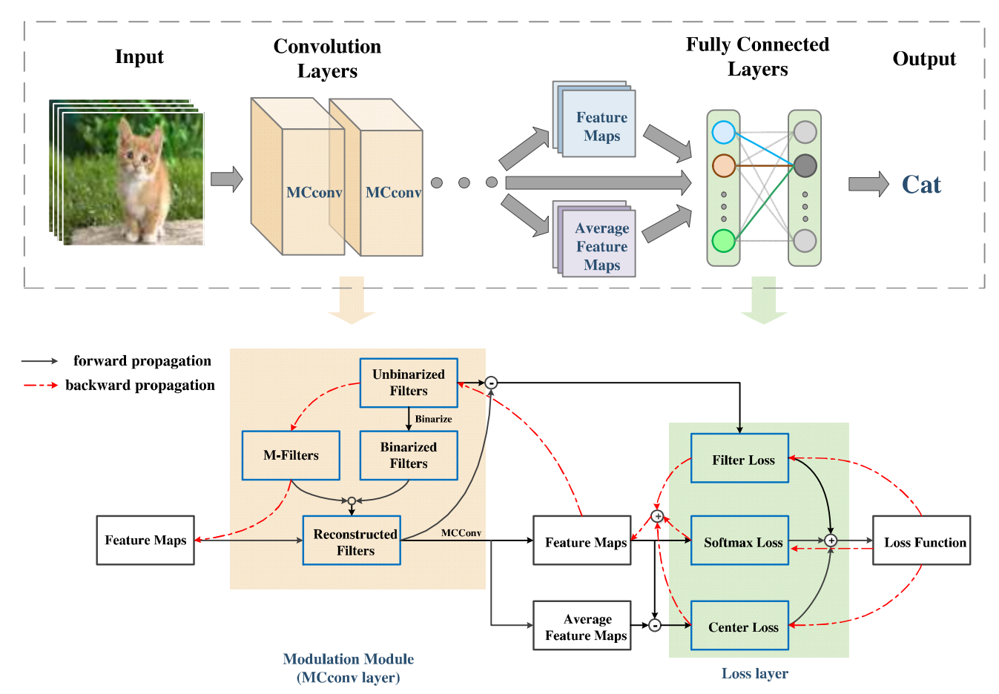
・非二項フィルタを復元するために，M-フィルタを導入しネットワークモデルを計算するための新しいアーキテクチャを導出する．MCNは完全精度モデルとは対照的に，畳み込みフィルタの必要な記憶スペースのサイズを32倍に縮小することができ，最先端の2値化モデルよりもはるかに優れた性能を達成した．また，MCNは完全精度のResentsおよびWideResentsと同等のパフォーマンスを達成した．
グラフなどの不規則な構造をした幾何学的入力のためのディープニューラルネットワークの変形であるスプラインベースの畳み込みニューラルネットワーク(SplineCNN)．スペクトル領域内でフィルタリングするのではなく，純粋に空間領域で特徴集計をする．SplineCNNを使用することで，手作業による特徴記述子の代わりに入力として幾何学的構造を使用することで，深いアーキテクチャの完全なend-to-endの学習が可能になる．
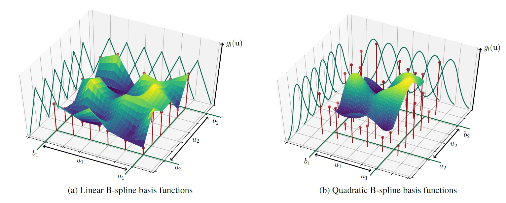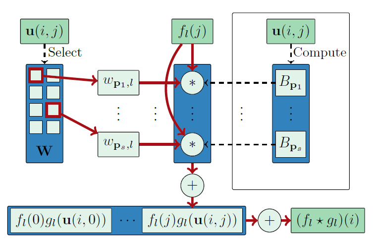
DNN を用いて動画中の時間の流れている方向（Arrow of Time）を学習する研究. 人工的な信号を含むキューは Arrow of Time の学習に悪影響を及ぼすことを示し, それらの影響を取り除いた大規模 dataset を作成した. 評価実験では映画中の逆再生部分を検出するというタスクにおいて人間とほぼ同程度の精度を達成した.
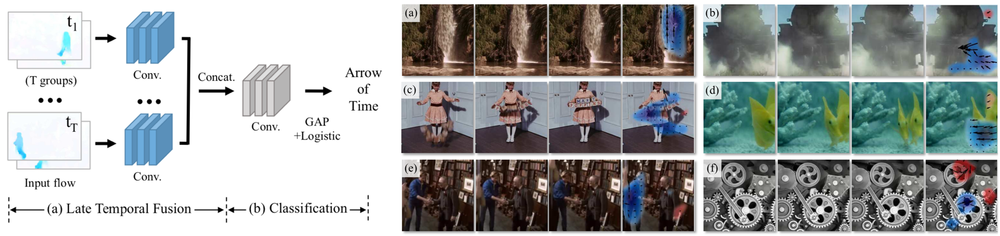
テンソルがスライス方向に欠けてしまった場合の復元についての論文．このケースでは，よく行われる核ノルム利用やその他正則化手法ではムリ． 遅れ／シフトに不変な構造を捉えることが重要になることから， 「高次元空間への低ランクモデルの埋め込み」を行うことで解決する． 時系列の遅延埋め込みを，テンソルにおける「複数方向遅延埋め込み変換」 を行い，不完全なテンソルを高次不完全ハンケルテンソルへと変換する． その後，この高次テンソルをタッカー展開の枠組みで低ランク化することで 復元が行われる．

伝統的に行われてきた行列・テンソル解析系の論文．情報学部出身の読者になるべく分かりやすいように丁寧に書いているように見受けられる． 画像で言えば，伝送エラーなどで行の一部分や下半分が吹き飛んでしまった時などに使える復元手法．
きちんと読み手への導入は行われているものの，読み下すには，テンソル分解程度の数学の知識が必要．ついでに，カオスのような時系列システムも知っているとわかりやすい（図中の説明での事例がそれ）． まとめ人にとっては数学の復習になったので，ぜひ論文を読んでみていただきたい．
ロボットアームを用いたビジュアルサーボについての研究. DNN を用いた視点に依存しないビジュアルサーボの能力を学習する Recurrent Convolutional Neural Network Controller を提案. 様々な視点, 光源環境, 物体の種類や位置に置けるタスクをシミュレーション上で学習することで, 未知の視点において自動でキャリブレーションを行うことが可能.
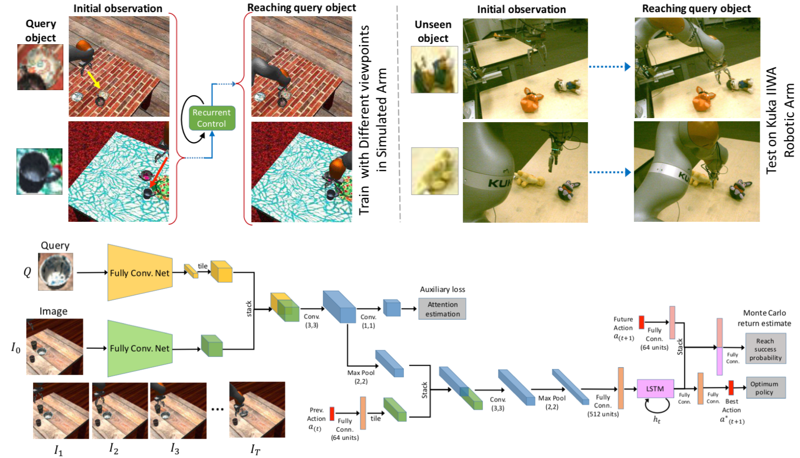
コーナー検出とセグメンテーションを用いた高速かつ高精度なテキスト検出手法．テキスト検出時，ボックスのコーナー点を局所化し，テキスト領域を相対位置でセグメンテーションする．画像を入力すると，DSSDベースのNWで特徴抽出をし，コーナー点検出とコーナー位置に基づくセグメンテーションを出力する．コーナー点はサンプリングおよびグループ化され複数の候補ボックスとなる．セグメンテーション結果とあわせてスコア付けしてNMSする．長いテキストを自然に検出でき，複雑な後処理をする必要もない．
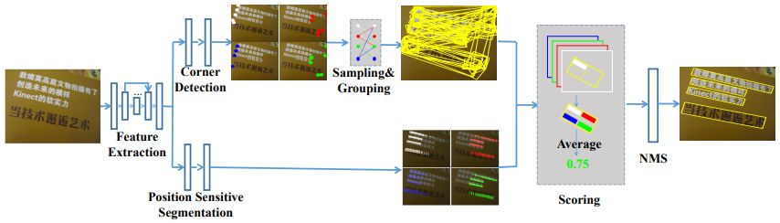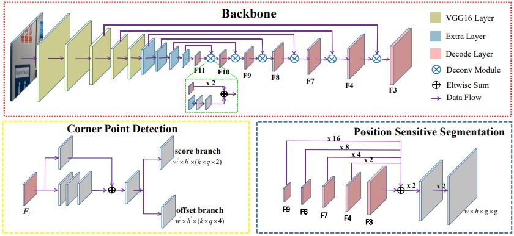
Deepベースのテキスト検出は，テキストを物体の一種として扱いb-boxの回帰を行うか，テキスト部分を直接抽出する手法である．前者はアスペクト比によっては検出できず，後者は複雑な後処理を必要とする．本手法はその2つを組み合わせて，両者の欠点を補う．SynthText，ICDAR2015，2013，MSRA-TD500，MLTおよびCOCO-Textのデータセットで評価して，ほとんどがSOTAを達成した．とくに，ICDAR2015では84.3%（F-measure），MSRA-TD500では81.5%を達成した．10.4FPSで動作する．
動画によるセマンティックセグメンテーションにおいて、精度を向上させつつ、処理速度を上げる手法の提案。2つのコンポーネントを組み込んだフレームワークで構成している。1つ目は、時間変化に伴って空間的な畳み込み処理を変化させ、特徴を適応させる特徴伝播モジュール。2つ目は、精度予測に基づいて、計算を動的に割り当てるスケジューラ。
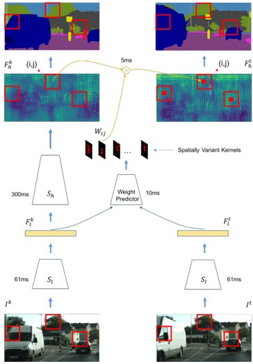
動画のセマンティックセグメンテーションには、高スループットやコスト、低遅延などの問題があり、 自律運転などにおいて重要となる。時間的変化に適応させた処理によって精度向上、処理速度向上を図る。
家の中の環境をシミミュレーションするための仮想環境 VirtualHome を作成した. また, 家の中で典型的に起こる様々な行動を自然言語とプログラムの形式で表現し, それらを仮想環境上でシミミュレーションした動画を組みにした VirtualHome Activity Dataset を公開した. 加えて, LSTM を用いて動画やテキストからプログラム形式の表現を生成する手法を提案した.
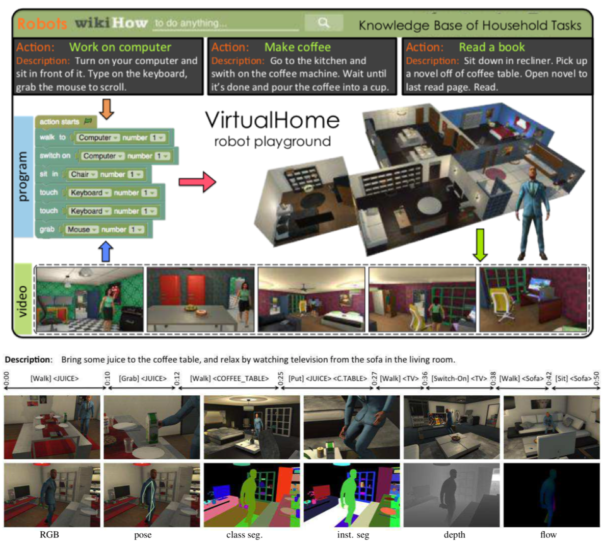
画像に関する質問に答えるVisual Question Answering(VQA)と与えられた答えになる質問を作るVisual Question Generation(VQG)を同時に扱うInvertible Question Answering Network(iQAN)を提案した。質問が与えられている場合は答えを、答えが与えられている場合は質問を推定することで学習をする。 その際、2つのタスクを独立した問題ではなく逆問題であると考え、質問と答え及びそれぞれを表現する特徴量間の変換に使用する重みを共有する。
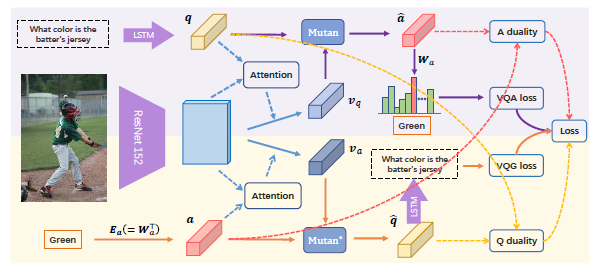
VQAに関しては、従来手法と比べて精度を向上することが可能となった。また、VQGによって生成した質問と答えのペアをVQAの学習に使用すると精度が向上することが分かり、VQGによってデータ数を増やすことが可能であると結論付けた。
画像に写っているもののカテゴリをコンピュータが人間に教えるためのシステムEXPLAINを提案。カテゴリを分類する上でどこに注目すればいいのか(例：蝶の種類を見分けるにはどこに注目すれば良いか）を提示することで人間がカテゴリを学習することを支援する。
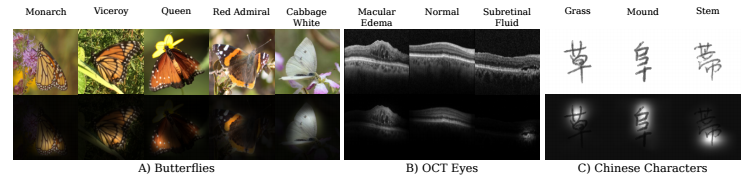
従来の手法ではカテゴリを表すラベルを提示するのみであったが、重要領域を提示することでより効率的に人間が学習することを可能とした。ユーザースタディにより人に学習してもらった内容に関するテストをしたところ、EXPLAINの方が短い時間で高い正答率を出すという結果を得られた。
人間の年齢変化顔を合成するIdentity-Preserved Conditional Generative Adversarial Networks (IPCGANs)を提案。合成画像が満たすべき特徴を、(1)目的の年齢に近づいている(2)変化前の人物と同一人物か(3)リアルな画像かの3つとした。 (1)(2)については、Generatorによって生成した画像を年齢推定及び同一人物性を評価するネットワークによって評価する。 (3)はDiscriminatorにリアルかどうかを判定させることで最適化を行う。

ユーザースタディにより、Image Quality, Age Classification, Face Verificationの3つの観点を評価し、DNNベースの手法と比較してFace VerificationとImage Qualityの2つの観点で高い評価を得た。VGG-faceによりinception scoreを求め、比較対象の手法より高いスコアを得た。 また、計算時間についても劇的に良化した。
画像に潜んでいる感情と注目を集める領域の関連を調査した。アイトラッキングのデータと、画像中に写っている感情に関連する物体(笑顔など)をアノテーションしたEMOtional attention dataset(EMOd)を構築した。 また、画像中の注目領域を抽出するDNNモデルであるCASNetを提案した。
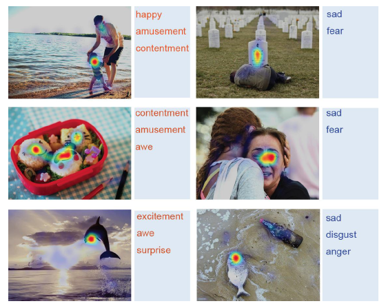
EMOdを用いて分析した結果、感情に関連する物体の方が人々の視線を集めることが判明した。その中でも、人間が関連する（笑顔など）場合がより視線を集めることが分かった。 従来のSaliencyを求める手法よりもCASNetの方が多くの指標で高いスコアを獲得した。 また、感情に関連する物体の方がより注目を集めるという結果を出力したことからEMOdの分析結果を反映していることを確認した。
Vision and Languageのタスクに、Cognition分野で提唱されているbasic levelという概念を基にしたBasic Concept(BaC)を導入した。basic levelとは人間が幼少期に行う抽象化であり、本研究では物体のクラスを類似したもの同士を1つにまとめる。 始めに、MSCOCOのキャプションとImageNetのクラスをマッチングすることで、Salient Concept(SaC)というBaCに候補を決定する。 続いて、物体のクラス分類におけるConfusion Matrixを求め、混同されるクラス同士を1つにまとめることでBaCを決定する。
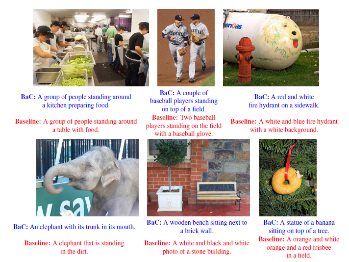
Vision and Languageのタスクとして、Image CaptioningとVQAによって検証を行った。Image Captioningについては、ベースラインと比較してほとんどの指標において精度が向上し、向上しなかった指標についてもベースラインと大差ない数値を記録した。 VQAについては、ObjectとLocationについて精度の向上を確認した。
一枚のRGB画像から３次元物体認識を行う研究. region-based な２次元の物体検出器を３次元に拡張する一般的なフレームワークを提案し, end-to-end のネットワークで２次元と３次元の物体位置と物体のクラスを同時に推定することが可能. KITTI dataset を用いた評価実験では state-of-the-art の結果を達成した.
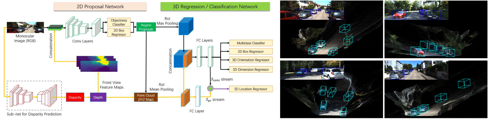
画像復元の問題は復元エラー（distortion）とエントロピー（rate）とのトレードオフであるが、本論文ではこのトレードオフをできる限り解消し、画像圧縮を行うAutoEncoderを提案する。著者らはコンテキストモデルから直接的に潜在表現のエントロピーを復元するモデルを考案して同問題に取り組んだ。AutoEncoderには条件付き確率モデルを学習した3D-CNNを適用。実験ではSSIMを用いて従来の畳み込みによるAutoEncoderモデルよりも良好な精度を実現した。
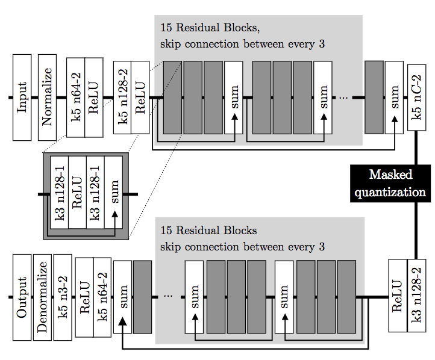
3D-CNNにより条件付き学率モデルを学習したAutoEncoderモデルを考案したことが新規性であり、JPEG(2000)などよりも良い圧縮法であることを示し、Rippel&Bourdevらのモデルと同等レベルの精度を達成した。
Recurrent/Convolutional Neural Networks（RNN/CNN）を用いた非可逆画像圧縮の手法を提案し、BPG(4:2:0), WebP, JPEG2000, JPEGよりも性能のよいものを提案した。3つの改善、(1)ニューラルネットにより空間的分散を効果的に捉えて情報量の劣化を防ぐ、(2)エントロピーコーディングの上に空間適応的ビット配置アルゴリズムを適用して効率的な画像圧縮とする、(3)SSIMによりピクセルごとの損失を計算して最適化することで圧縮数値を改善する、を加えて圧縮方法を提案。KodakやTecnickのカメラを用いてコーデックの評価を行った。
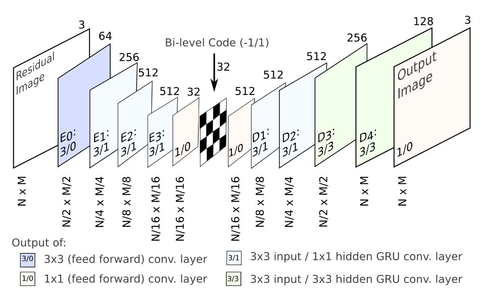
従来の圧縮方法であるBPG(4:2:0), WebP, JPEG2000, JPEGなどよりも効率の良い圧縮方法を提案した。また、手法的にもCNN/RNNを応用し、さらに後処理として画質を改善するSpatially Adaptive Bit Rate (SABR)を提案したことが評価された。
unconstrainedな顔に対してクラスタリングを行うDeep Density Clustering(DDC)を提案。顔画像をDNNによって単位超級面空間に射影する。続いて、各サンプル2点の類似度を測定する際に、 その2点の近傍に位置するサンプルを考慮することでクラスタの密度を推定することが可能となるため、これに基づいてクラスタリングを行う。

入力顔画像に対して任意の画像を生成するネットワークを提案。顔向きのコンディションとしてランドマークのヒートマップを与え、U-Netによって画像を生成し、2つのdiscriminatorを用いることで画像を生成。 1つ目のdiscriminatorは入力画像をコンディションとして生成画像or正解画像を識別し、 2つ目のdiscriminatorはランドマークのヒートマップをコンディションとして生成画像or正解画像を識別する。 また人物IDを保存するためにLight CNNによる特徴量によるロスをとる。
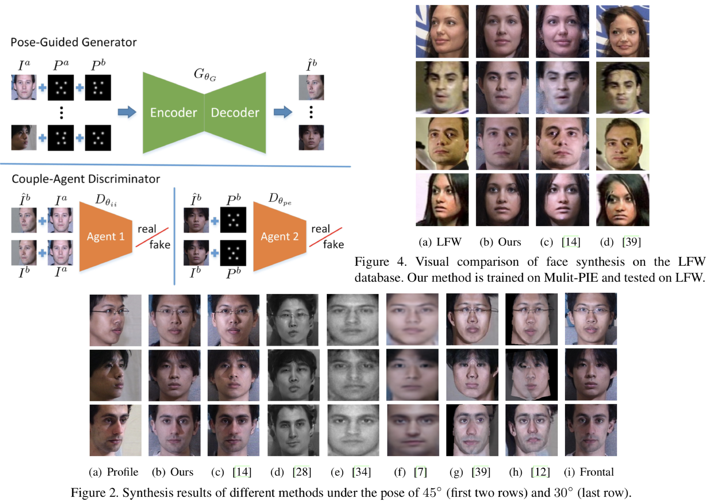
それぞれ単独の実画像データセットと3D Morphable Model(3DMM)データセットを使用し、画像から3DMMを生成する手法を提案。トレーニングには実画像データセットVGG-Face、3DMMデータセットBasel Face 3DMMを使用。 IDが保たれることを念頭にネットワークを構築。Batch Distribution Lossでは、 Basel Face 3DMMのパラメタ分布が平均０、標準偏差1のガウス分布であるため、 実画像によって生成される3DMMのシェイプ、テクスチャパラメタがどちらも平均0、標準偏差1となるようにロスをとる。 Loopback Lossは画像/生成された3DMMのdecoderによる特徴量の差分を取り、よりリアルな3DMMかつ、 より現実的な3DMMパラメタを得ることを目的としている。
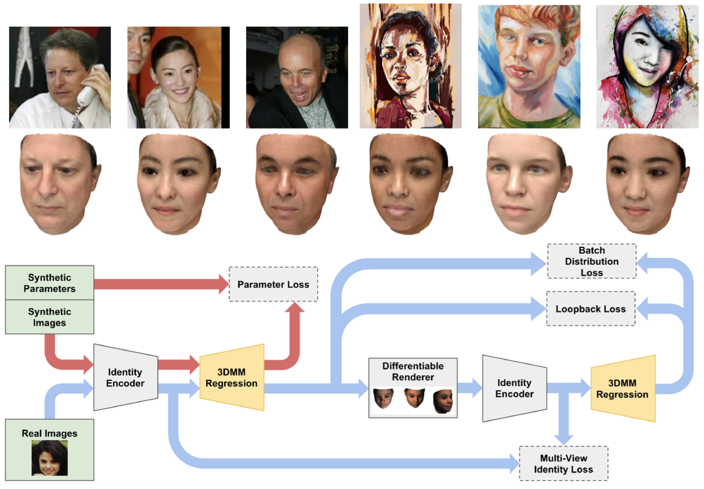
ソースドメイン(SD)とターゲットドメイン(TD)のそれぞれのreproducing kernel Hilbert space(RKHS)における共分散を最適化することでdomain adaptation(DA)を行う手法。 既存のカーネルベースのDAはSDとTDのRKHS上の統計的分布の類似度に大きく依存することに着目。 共分散を最適化する方法としてkernel whitening-coloring map(KWC)とkernel optimal transport map(KOT)があり、これをRKHS上で計算で可能なように式変形を行うことでDAを行う。
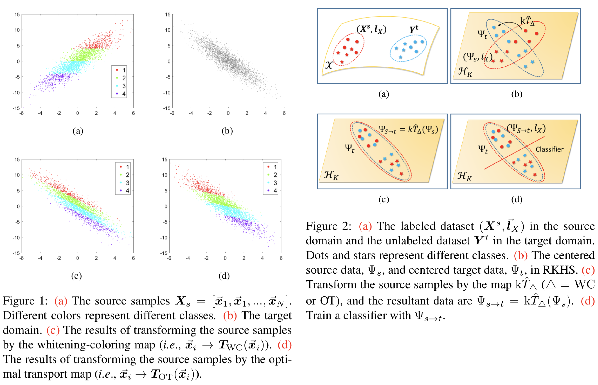
VQAのデータセットにおけるバイアスを調査した上で、VQAにおけるdomain adaptation(DA)を提案。提案手法では選択肢の中から解答を選択するVQAを扱う。VQAデータセットは画像、質問、解答選択肢＝正解＋誤答の要素からなる。 それぞれの要素を組み合わせた入力を用いて、その入力がどのデータセットに所属しているのかを調査した結果、 画像はほぼ無相関であることがわかり、質問と解答によってデータセット間にバイアスが生じていることを確認。 この結果に基づき、以下のようにDAを提案。ターゲットドメイン(TD)に質問/解答選択肢のみがある場合、 ソースドメイン(SD)の質問/正解(誤答は任意性があるため使用しない)の特徴量が持つ分布とTDの質問のDNNによる 特徴量が持つ分布のJensen-shannon Divergence(JSD)が小さくなるように学習。TDが質問と正解(＋誤答)を持つ場合、 SDが持つ質問・正解の特徴量分布とTDの質問・正解のDNNによる特徴料が持つJSDが小さくなるように学習。 さらにSDで事前学習を行った質問-正解識別をTDでfine-tuningを行う。
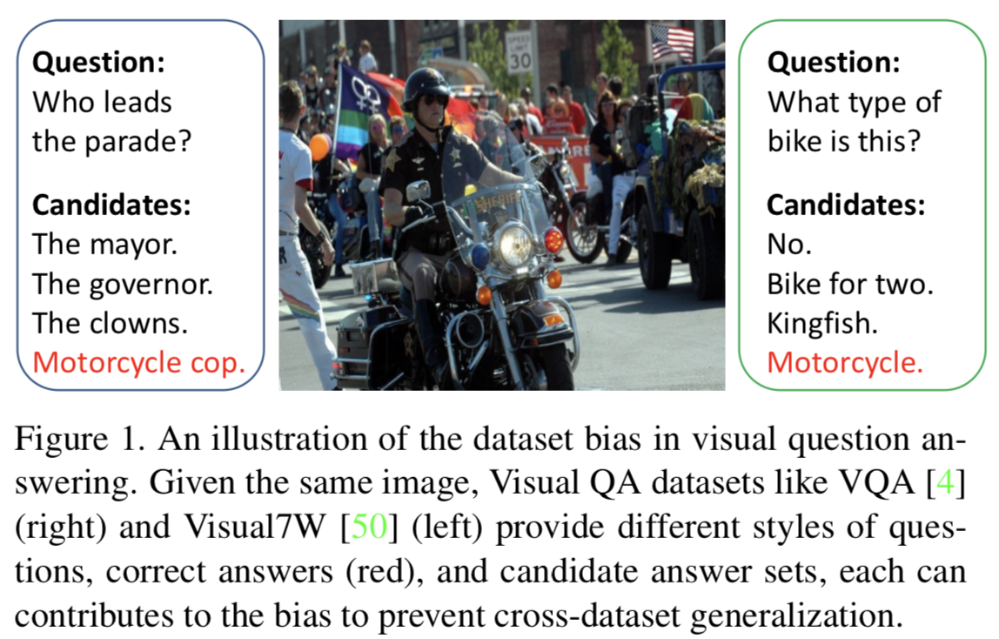
教師なし学習で単眼の動画から Depth と Ego-Motion の推定を行う研究. 連続するフレーム間における 3D Geometry の一貫性を教師信号の代わりに利用して学習を行う.
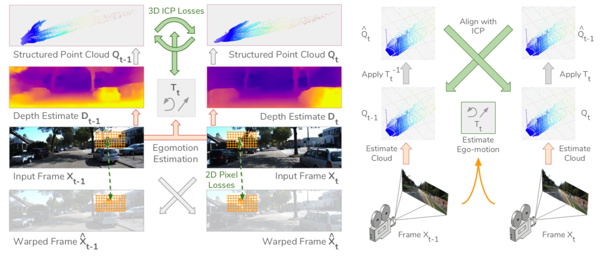
Point Cloud データのクラス分類についての研究. 順序不定の 3D Point Cloud データを 2D Depth 画像に変換し, ResNet でクラス分類を行う. 評価実験では PointNet より優位な結果となった.
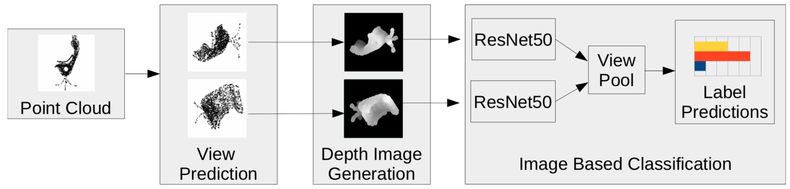
Deep binary descriptor においてバイナリを生成する際に0と1の境界に位置する曖昧なビット (ambiguous bit) の問題に取り組んだ研究. 強化学習によって学習したビット間の implicit な関係性を付加することで曖昧性を緩和する GraphBit を提案.
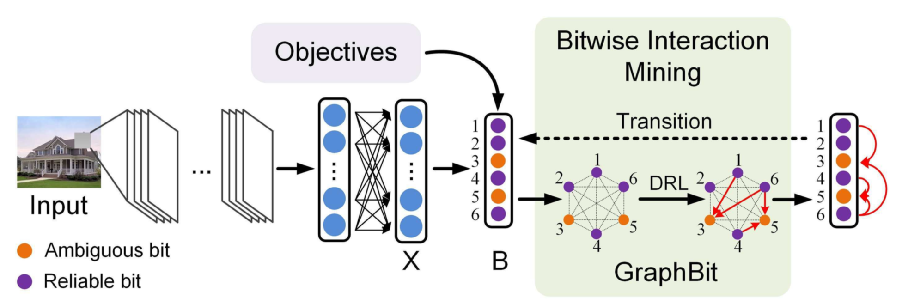
Skeleton-based action recognition の研究. 強化学習によって与えられた動画から最適な keyframe の組を選択する frame distillation network (FDNet) と graph-based convolution によって keyframe の skeleton 情報から行動認識を行う Graph-based CNN (GCNN) を提案.
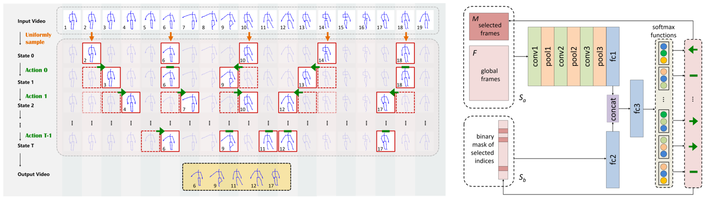
superpixel segmentationのためにピクセルの類似性(pixel affinities)を学習するdeep learningベースの手法を提案。pixel affinitiesが同一物体に属する2つの隣接画素の尤度を測る。これまで、groundtruthがないこと、superpixelsのインデックスが交換可能であること、superpixelsの手法は微分不可であることからdeep learningベースのsuperpixelアルゴリズムは試みられていなかった。論文では、segmentation誤差から類似性を学習するsegmentation-aware loss(SEAL)と、pixel affinitiesを出力するPixel Affinity Net(PAN)を提案し、superpixelsとdeep learningを統合する。既存の手法より物体境界を保持したままsuperpixelsを計算することが可能になった。
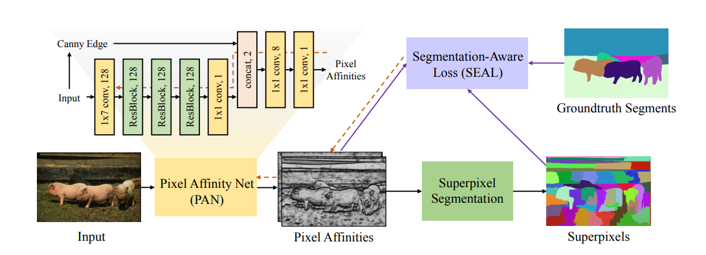
superpixels + deep learningが新しい。実験では単純なpretrained modelによる特徴量や、edge検出によるsuperpixelsとの統合はうまくいかないことを示している。手法に関しては、superpixelsを直接出力するのではなく、pixel affinitiesを計算、graph-basedのアルゴリズム(ERS)を経由し出力、そしてSEALを計算する。これにより、pixel affinitiesを出力するPANへ誤差を逆伝播することができる。
人間の三次元輪郭形状から，見えない体の内側を解析してしまおうという話．本論文では，X線画像を生成する． さらに，X線画像はパラメタライズしておくことで，体のキーポイントの調節によるマニピュレーションも可能．
構造的には，2つのネットワークからなる．(1)部分画像といくつかのパラメータから，画像全体を生成するように学習， (2)全体画像が得られるような(1)のパラメータの推定． これら2つのネットワークを，一貫性が出てくるように反復的に学習させる．
生成した画像を使ってみて，画像補間に使ってみた．
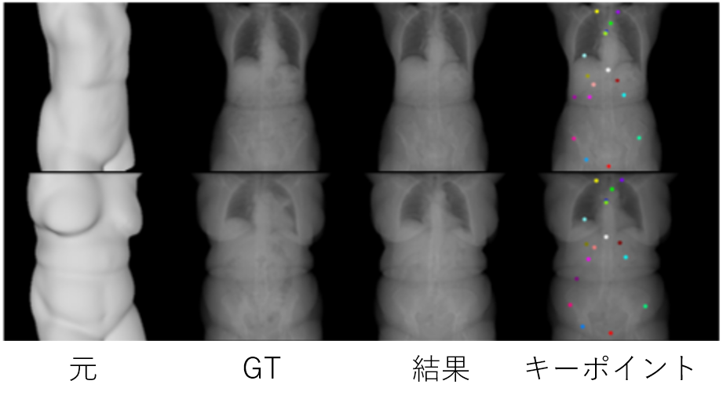
体表面を計測しておくなどして，体表面形状のデータがあれば，X線画像をある程度任意に生成できる．逆に，体表面形状をいじることでそれに対応したX線画像も作れる． 学習データとして活用することができる可能性がある．
構造はGAN風だが，いい感じに変形している感じがウケているかもしれない．
スタイル特徴量を用いて画像の見た目を変換するネットワークとドメイン間で不変な特徴量を得るネットワークを用いて、domain adaptationを行うことで教師無しでセマンティックセグメンテーションを行うFully Convolutional Adaptation Networks (FCAN)を提案。画像の見た目を変換するAppearance Adaptation Networks (AAN)では ホワイトノイズから画像を生成し、ソースドメインの特徴量マップ、ターゲットドメインのもつスタイル特徴量が小さくなるように学習を行うことで、画像をもう一方のドメインの見た目になるように変換する。 ドメイン間で不変な特徴量を得るRepresentation Adaptation Networks (RAN)ではsemantic classificationと、 それぞれのドメインにから得られた特徴量マップに対するadversarial lossと、 ASPPによって得られた特徴量マップに対してピクセルごとにadversarial lossを適用。 ドメインとして実画像とゲーム画像で検証している。
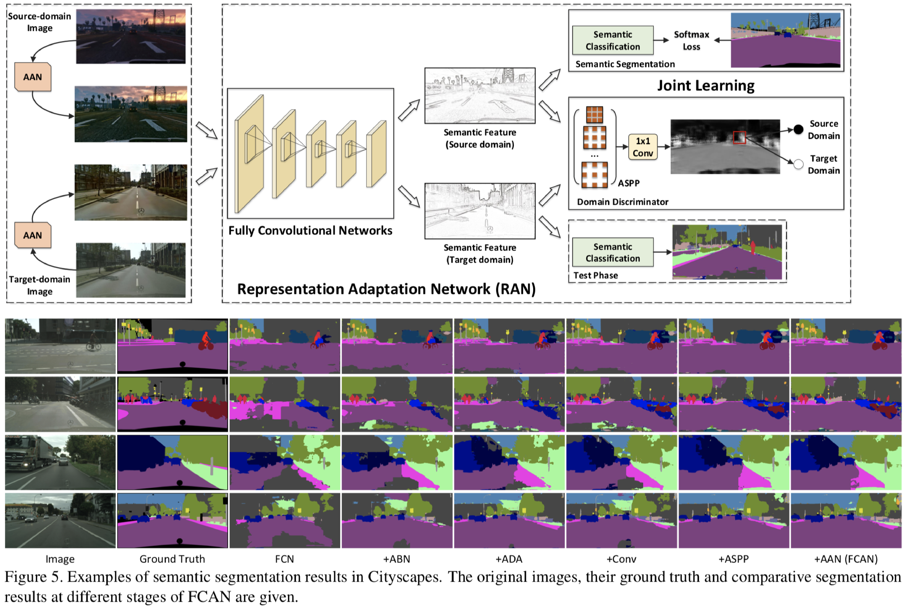
Unsupervised Domain Adaptationを行うため、ドメイン間の特徴量分布を一致させるoptimal transportベースのEM distanceを導入し、ターゲットドメイン(T)のラベル分布をソースドメイン(S)のラベル分布に対してラベルごとに重み付けした分布で表現する手法を提案。 domain discriminatorをOTベースのEM distanceをロス関数とすることでドメイン間の特徴量分布を近づける。 一方でベイズの定理より、ドメイン間のラベルの事前分布と特徴量の事後分布は比例関係にありラベルは低次元かつ離散的であるので ドメイン間で類似度が高いと仮定し、Tにおけるラベルの事前分布をSのラベルの事前分布の重みを変更したもので表す。
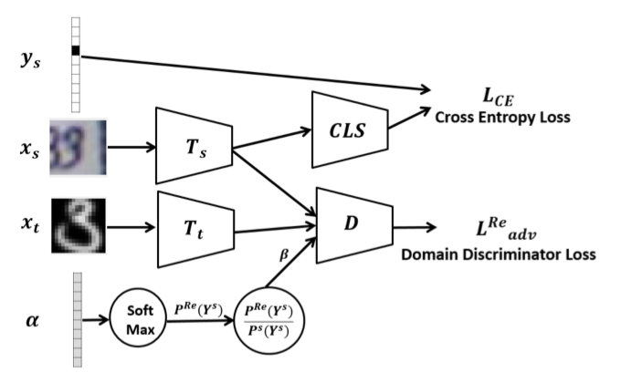
教師無しで画像をバイナリに符号化するハッシュ関数であるHashGANを提案。ハッシュ関数が満たすべき条件は画像が変換されて同じハッシュ値を返すこと、異なる画像には異なるハッシュ値を与えることである。 既存の教師無しハッシュ関数は過学習のために精度がよくなかった。提案手法であるHashGANはgenerator、discriminator、 encoderからなる。学習はGAN loss、encoderによって生成されるハッシュ値のエントロピーが小さくなるように、 出現するハッシュ値が同じになるように、画像の変換によるハッシュ値が不変となるように、画像ごとのハッシュ値が固有となるように、 合成画像をエンコードした際のハッシュ値のL2ロス、実画像と合成画像を入力とした際のdiscriminatorの最後の層に対して feature matchingを行う。またdiscriminatorはデータ固有の情報を識別し、encoderはデータ固有の情報を抽出しようとするため、 両者の目的が一致しているのでパラメタを共有して学習を行う。
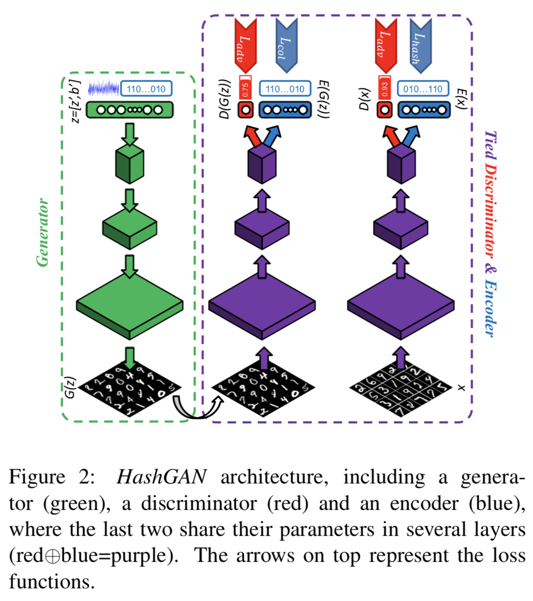
ランドマークのGT有り顔画像とラベルなし顔動画を用いて、現在フレームに対して直接推定されたランドマークと、トラッキングによって前フレームから推定されたランドマークの位置の誤差を学習することで顔画像に対してランドマークを推定する手法を提案。 人間によるランドマークのアノテーションは正確でないため、この誤差が学習や推定精度に影響を与えてしまう。 これに対して本論文ではランドマークの推定器に最適化によって計算されるオプティカルフローを教師情報として与える Supervision by Registration(SBR)を提案。ランドマーク位置を推定するCNNに対して、 Lukas-Kanade法によるトラッキング結果とランドマークの推定位置が同じになるように学習を行う。
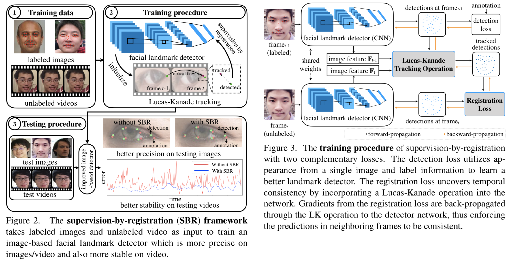
微分不可能な multi-stage pipline において joint optimization を可能にする environment upgrade reinforcement learning (EU-RL) を提案. ２段階の Instance segmentation と pose estimation のタスクで評価実験を行い, どちらも優位な結果を示した.
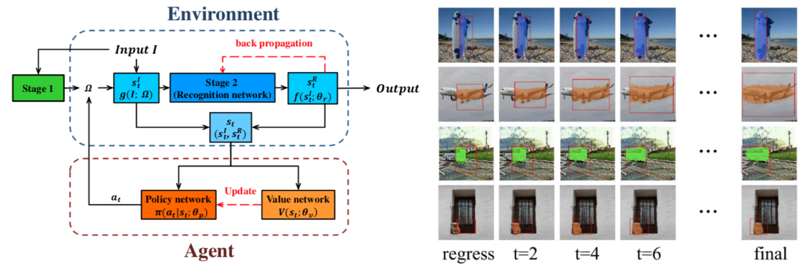
Region proposal network（RPN）と深層強化学習（DRL）を組み合わせたdrl-RPNを提案する．通常のRPNがRoIを貪欲に選択するのに対し，DRLで学習されたsequential attention mechanismを用いて選択することで，最終検出タスクに最適化される．また，時間経過とともにクラス固有の特徴を蓄積し，分類スコアに良い影響を与えて検出精度が高めることを示す．また，学習をいつ停止するか自動的に判断する．
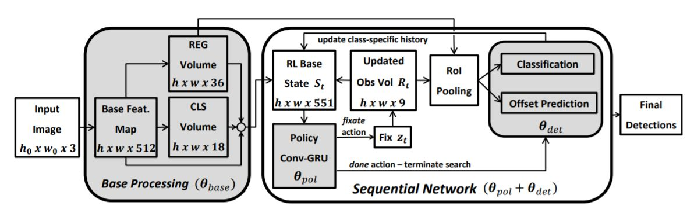
RPNにDRLを導入して，attentionに即したRoIを選択できるようにした．VOC2007を用いた評価では，通常のRPNがmAP74.2%なのに対し，drl-RPNは76.4%を達成した．MSCOCOでも各指標・各セットで数%の精度向上が見られた．
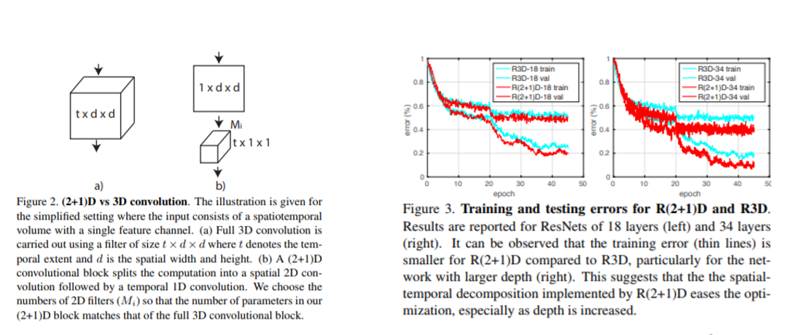
単眼の画像から深さ(depth)と表面の法線マップ(surface normal maps)を同時に予測する幾何ニューラルネットワーク(GeoNet)を提案．NYU v2 dataset、ではGeoNetが幾何学的に一貫した深度マップと法線マップを予測できることを確認．surface normal maps推定でSOTA、また既存のdepth推定方法と同等の精度を達成．
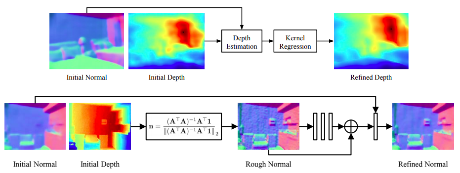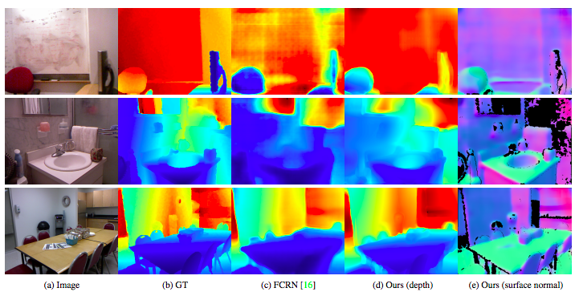
2D CNNと3D CNNの畳み込みモジュールを統合した行動認識のためのネットワークMixed Convolutional Tube(MiCT)を提案．3つの有名なベンチマークデータセット(UCF101，Sport1M，HMDB-51)においてMiCT-Netが元の3D CNNのみの手法より著しく優れていることを確認．UCF101とHMDB51での行動認識でSOTAの手法と比較し、MiCT-Netは最高の性能を発揮．
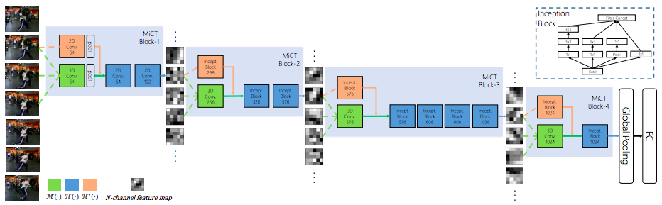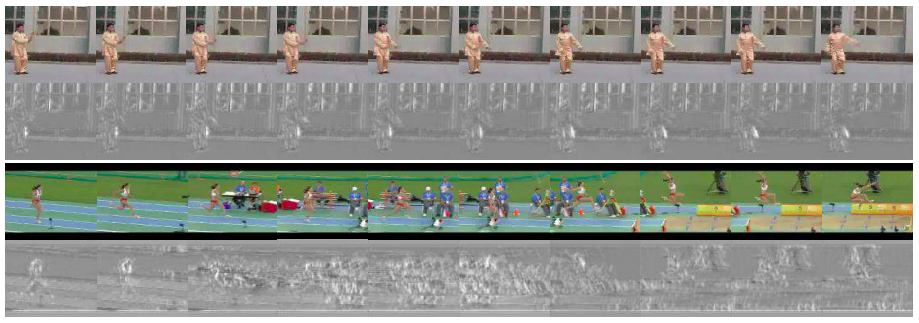
高速で大きな動きに対して加速度法の出力を頑健にするための、ジャーク(振動，ぶれ)の新規利用方法について言及．微小な変化は時間的スケールでの高速な大きな動きよりも滑らかであるという観点・観測に基づき、高速で大きな動きの下でのみ微妙な変化を通過させるジャークフィルタを設計．
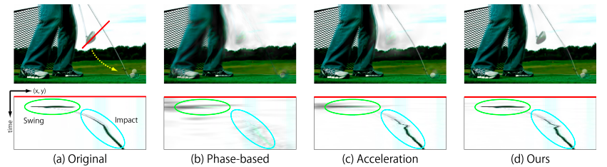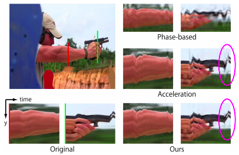
ジャークフィルタを加速度法に適用することで、最先端のものより優れた結果を確認．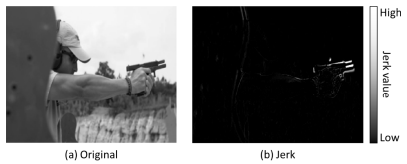
Instance segmentationのような画素単位のグループ分け問題を行うEnd-to-Endで学習可能な枠組みを提案。同じグループの画素はcosine similarityが高くなるように、異なるグループはmargin以下の値になるように超球面上に回帰(Spherical Embedding Module)し、そこでRNNによるMean-shift clusteringを実行すること(Recurrent Grouping Module)で実現。
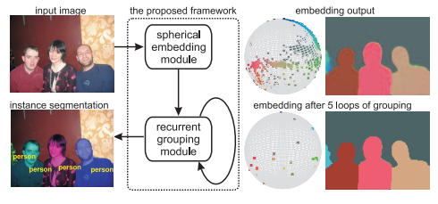
既存のregion proposalやbboxによる組み合わせたinstance segmentationの手法とは大きく異なり新しい。またこれをRNNでMean-shift clusteringを表現することで実現し、End-to-Endな学習を可能としている。加えてhyperparameterの設定に関する理論的分析も提供。instance segmentationやsemantic segmentationだけでなく、様々なpixel-levelのドメインタスクへ応用可能。
手法もシンプルでかつ効果的で応用先も広い。Fig.11の結果からsemantic segmentationにおいてもinstanceの情報が効果的に利用できそうで試してみたい。
Semantic Segmentationにおけるintra-class inconsistencyとinter-class indistinctionの問題を、Discriminative Feature Network(DFN)によって対処。intra-class inconsistencyは図の牛の一部を馬と誤認識するような現象。inter-class indistinctionは、図のコンピュータのように外見が似ている対象の区別することが難しい現象。前者の問題をmulti-scaleかつglobal contextな情報を抽出するChannel Attention Block(CAB)を持つSmooth Networkにより、後者の問題をbottom-upなBorder Networkにより緩和する。
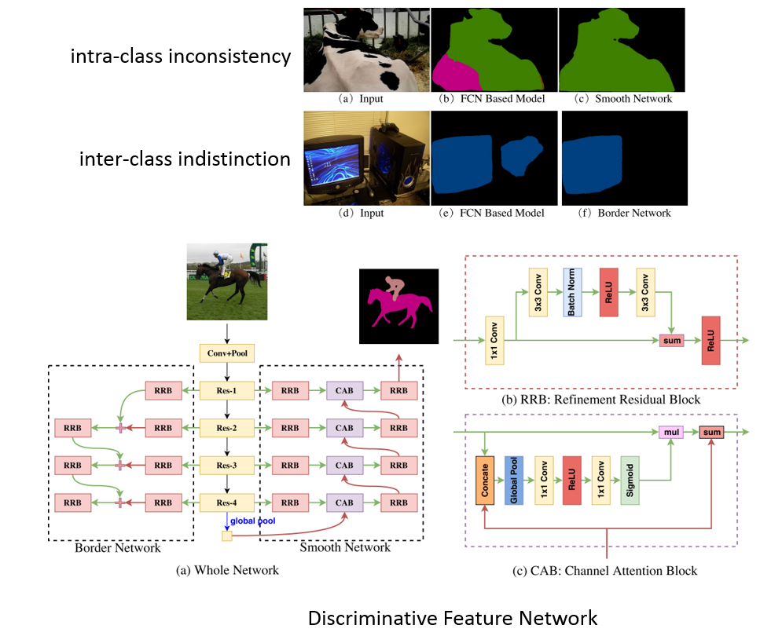
Semantic Segmentationをpixel単位のラベル付けだけではなく、物体の1つのカテゴリに対して一貫したセマンティックラベル付けをするタスクとして考えた。それゆえのBorder Networkと考える。上記の2つの問題は、必要な情報が異なるゆえ、対処の仕方をCABとU-Net構造に似たSmooth NetworkとBottom-upなBorder Networkとうまく分解している。PASCAL VOC 2012でmean IoU 86.2%、Cityscapesで80.3%を達成。
実験で各モジュールの効果を検証していたが何が効いているのかよくわからない。直感的にはBorder NetworkとSmooth Networkの分離は良いアイデアと感じたが、この分離による効果は1%未満。
書面上のコミニュケーションをする上で文書のスタイルは魅力と明快さに影響する．同一の画像からスタイルの異なるキャプションを生成するという研究．様々なスタイルの単語の選択肢とは異なる構文をもつ文章をデコードするための統一された言語モデルを開発した．

Video Object Segmentation (VOS) を強化学習によって行う研究. Object Segmentation では主に物体の領域とそれらの(周辺との)関係性が重要であるという推量に基づいて, VOS をマルコフ過程として定式化し, Deep Q-Learning を適用した. 評価実験では, state-of-the-art とほぼ同等の結果を達成した.
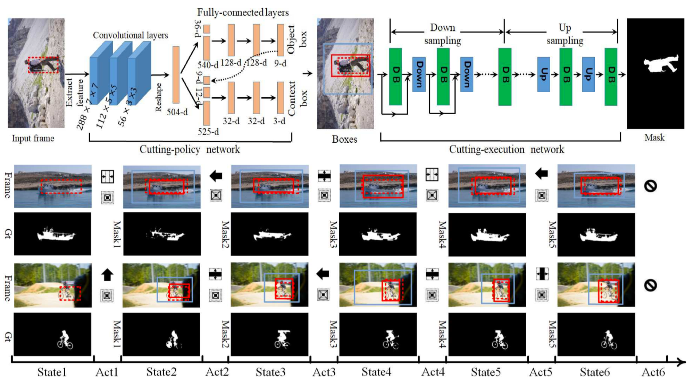
インタラクティブセグメンテーションに強化学習を適用した研究. 入力画像と初期 seed から自動で新しい seed を順次生成する SeedNet を提案. 評価実験では state-of-the-art の結果を達成すると共に, 教師あり手法と比較しても優位な結果を達成した.
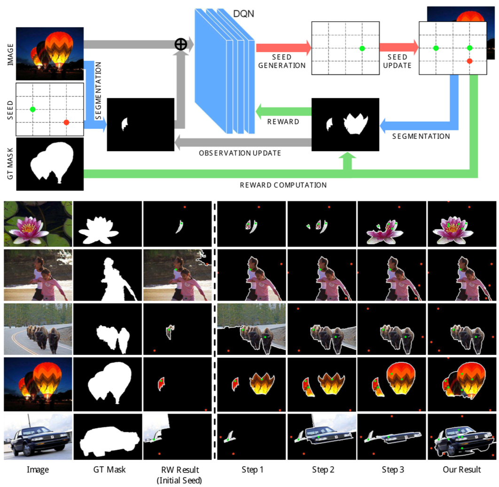
弱教師ありの Object Localization の研究. 2つの Classifier を並列に配置し, 片方の classifier で注目された領域を他方の入力から取り除いておくことで, それぞれが異なる領域に反応するような構造となっている. 評価実験では ILSVRC dataset の localization のタスクで 45.15% (new state-of-the-art) の誤差率を達成した.

物体検出時に用いるRegion-of-Interest（RoI）を，sub-regionとアスペクト比の差を用いて再構成するFeature selective netsを提案．画像全体に対してsub-regionのattention bank（すべてのattention mapを記憶するbank）とアスペクト比のattention bankを生成する．Attention mapはbankから選択的にpoolされ，RoIの改善に使用される．処理の手順は(1)CNNから得られた特徴マップをRPNに入力しRoIを得て，(2)特徴マップのチャンネル数を削減してRoIプーリングを行い，圧縮されたRoI特徴を得る．(3)削減される前のRoIをregion-wise attention生成モジュールに入力する．特徴マップを用いてアスペクト比attention bankとsub-region attention bankを得る．(4)各bankにselective RoIプーリングを行う．そして，(2)と(4)で得られたRoI特徴と各attention mapを結合して検出サブネットワークに入力する．
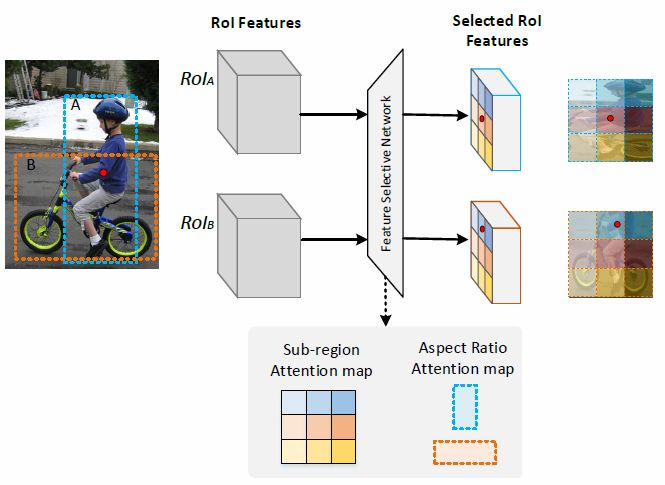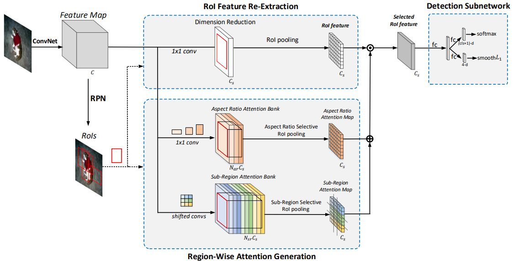
RoIをattentinを用いて補正する．VGGだけではなくGoogLeNetやResNetにも適用可能である．VOC2007を用いた評価では，mAP: 82.9%, 76.8%, 74.3% （Res101, GoogLe, VGG-16）を達成し，Faster R-CNNの78.8%, 74.8%, 73.2%（上記と同順）よりも高精度である．さらに，検出サブネットワークをシンプルにしているため，Faster R-CNNよりも高速な検出が可能である．
Bounding boxでの物体検出でグラフカットを用いて擬似的なマスク（セグメンテーション）のrefinementを行う．インスタンスセグメンテーションの学習を行うことで擬似的な物体マスクを推定できるようにネットワークパラメータを最適化する．フレームワークは検出ネットワークと擬似的なマスクのrefinementを行うグラフカットベースのモジュールからなる．RoIを入力として，ベースネットワークの特徴マップからインスタンスセグメンテーションを行い，それをグラフカットモジュールに入力して擬似的なマスクを得る．インスタンスセグメンテーションの結果はbounding boxの修正にも用いられる．
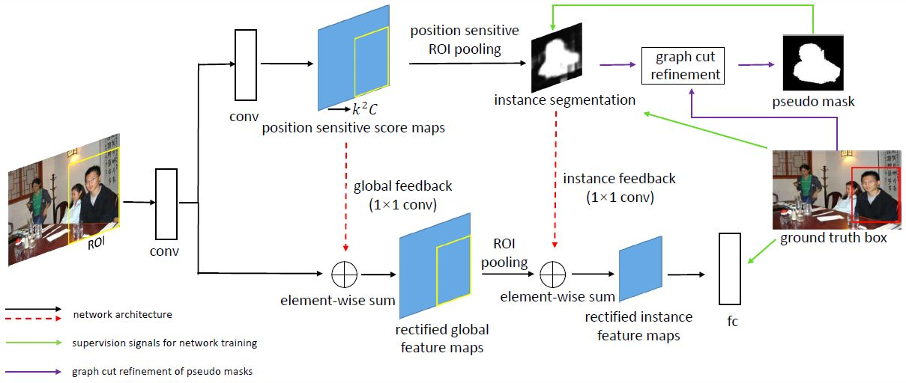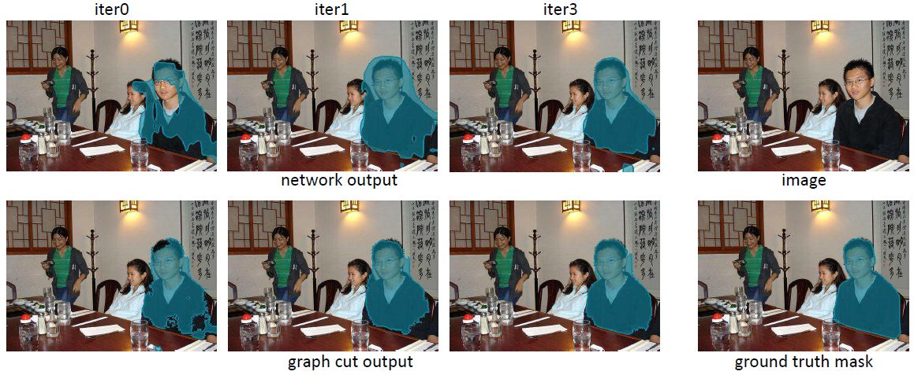
流行りの物体検出＋セグメンテーションの手法．マスクを単に特徴マップから得て終わりではなく，グラフカットでrefineする部分は新しいところ．グラフカットを数iter行うことで，よりきれいなマスクを得ることができる．VOC2007/2012を用いた物体検出の精度はmAP74.4%（VGG-16）で，Faster R-CNN（70.4%）やHyperNet（71.4）よりも良い．VOC2012SDSを用いたセグメンテーションの精度は58.5/67.6(マスクレベルスコア/物体検出スコア)%であり，iterを繰り返すことで精度が向上することが確認されている．
複数画像を使用した非剛体のSfM (Non-Rigid Structure-from-Motion)に関する研究である。右図は非剛体の表面形状復元結果の一例であり、顔のように時系列的に変化する形状を、多様体の概念をSfMに導入することにより問題解決を図っている。非剛体の形状変化を、空間的・時間的な部分空間としてすいていすることでSfMを実行する。
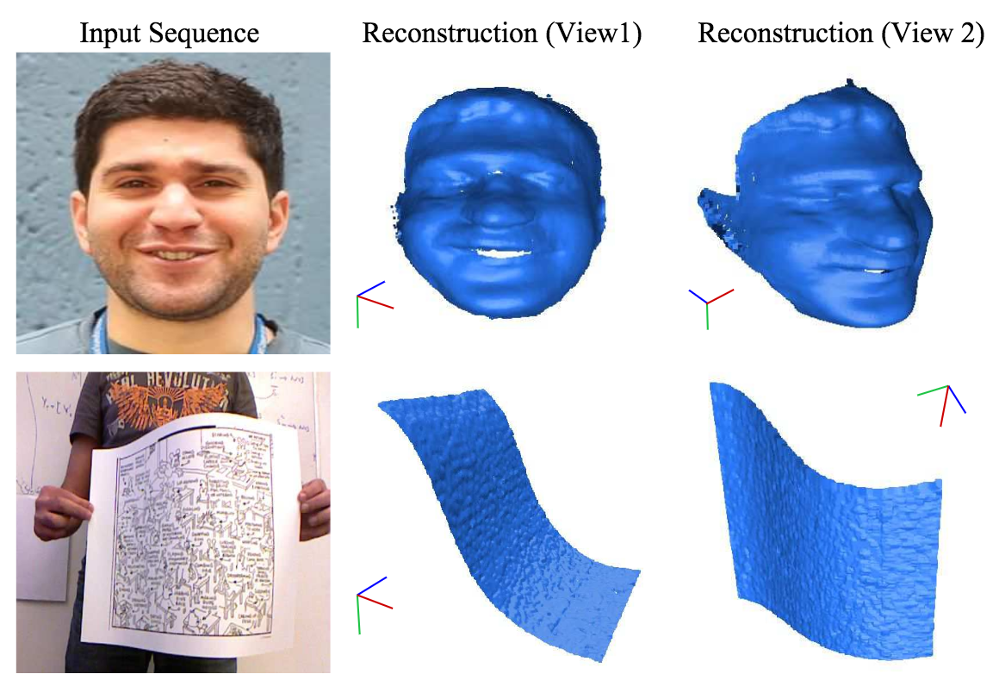
非剛体物体の表面形状復元に関するSfM問題を、グラスマン多様体（Grassman Manifold）の問題と捉えて解決している点が新規性として挙げられる。柔軟に表面形状復元ができている様子は動画にて確認可能である。
2次元画像、もしくは3次元点群からメッシュや分解構造を生成し、テクスチャありのメッシュや3次元プリント物体を出力する。この枠組みはAtlasNetと呼ばれ、同タスクのPrecision向上と一般化の面で性能改善を行い、3次元形状を集めたデータベースであるShapeNet上で形状をAuto-Encoding、単眼画像からの形状復元を行った。その他、AtlasNetを用いてモーフィング、パラメトライゼーション、超解像、形状マッチング、共セグメンテーションを実施した。
3D表面形状生成器であるAtlasNetを構築したことが最も大きな新規性である。形状に関するパラメータを学習可能にした。さらに、AtlasNetをGitHub上で公開して使用できる形式にしている。復元したメッシュ形状も、提案手法がもっともノイズが少なく、良好な復元結果となった。
歩行者検出におけるオクルージョンやハードネガティブを改善するための提案。本提案手法は、シングルステージ物体検出手法に適応可能。オクルージョン処理のために、ベースモデルの出力テンソルを更新してパートスコアを推定し、オクルージョン認識スコアを算出する。ハードネガティブの混同を軽減するために、 average grid classifiersをpost-refinement classifiersとして導入。
SqueezeDetやYOLOv2、SSD、DSSDを含むシングルステージ物体検出手法に適応でき、オクルージョンやハードネガティブを改善する。本論文では歩行者検出におけるオクルージョンにフォーカスを当てているが、一般物体検出にも適応できる可能性がある。
ノイズのあるラベルを含んだデータセットを使い、CNN学習を高精度に行うための新しい反復学習フレームワークの提案。反復的なノイズラベル検出、特徴学習、および再重み付けの3段階のフレームワークでノイズの多いラベルを検出しつつ、識別器を反復的に学習。再重みづけでは、クリーンなラベルの学習を重視し、ノイズの場合には低減させる。
綺麗なラベルアノテーション付き大規模データセットによる学習は非常に重要だが、人の手間がかなりかかる他、ヒューマンエラーを含む可能性が否めない。本研究では、あえてノイジーなデータセットに挑戦することで、これらの問題を解決する。
正規化されたポイントクラウドを入力として、複雑な手構造を捕捉し、手の姿勢の低次元表現を正確に回帰させることができるHand PointNetの提案。Oriented Bboxでポイントクラウドを正規化し、ネットワーク入力をよりロバストにする。その後、階層的なPointNetに入力し特徴抽出。PointNetを細分化することにより、指先に対する推定精度を向上させる。
CNNを用いた従来の奥行き画像における3次元手姿勢推定手法とは異なり、本研究では三次元点群に着目している。データは、奥行き画像をポイントクラウドデータに変換してから使用している。
自動車の運転シーン理解のためのデータセットであるHonda Research Institute Driving Dataset(HDD)の提案。本データセットはサンフランシスコ・ベイエリアにて、様々なセンサーを備えた自動車を人間が運転したデータが104時間分含まれる。センサはグラスホッパーカメラ、LiDAR、ダイナミックモーションアナライザ、Vehicle Controller Area Network (CAN)の4つ。これらのデータから運転者の行動を基にアノテーションを付加している。
様々なセンサを用いて、大規模データを収集しただけでなく、ヒューマンファクタや認知科学に基づいてアノテーションを行っている。アノテーションは、Goal-oriented action, Stimulus-driven action, Cause, Attentionの4つ。
スマートフォンで撮影したノイズの多い画像で構成したデータセットSmartphone Image Denoising Dataset (SIDD)の提案。 5つの代表的なスマホカメラを使用し、様々な照明条件下で約30,000枚のノイズの多い画像を収集。ノイズの多い画像だけでなく、ノイズを除去した画像をground truthとして提案。
過去10年間で、撮影される画像は一眼レフやコンデジから、スマートフォンに切り替わったことに着目。しかし、口径やセンサ―サイズが小さいため、スマホの写真はノイズを多く含んでいる。このような、ノイズを多く含んだスマホ画像を集めることで新たなデータセットを提案する。
やはりノイズを含むスマホ画像でのトレーニングよりも、高品質な画像でトレーニングした方が、CNNで高い精度を得た。現在のタスクにおいて「スマホの画像だから精度が出ない」というのはあまり考えにくいが、日常的なアプリケーションには有用なデータセットではないか。
3Dセンサで得られた点群から3D物体検出や追跡を行う新しいDNN「Fast and Furious（FaF）」を提案．検出と追跡，さらに短期の経路予測を同時に推論でき，Sparse dataやオクルージョンに頑健な検出ができる．3D点群と時間の4Dテンソルを入力として，空間と時間に対して3D畳み込みを行う．4DテンソルはEarly FusionまたはLate Fusion（図中ではLater）で時間情報を結合している．これらは精度と効率のトレードオフ関係にある．
物体検出から追跡，さらに経路予測までend-to-endで行えるモデル．全体の検出時間はわずか30ms以下である．約55万フレームからなるLiDARのデータセットを作成し，車両に3D bboxとトラッキング用IDをラベリングして学習および評価に用いる．物体検出の結果はSSDのIoU 77.92mAPを上回る83.10mAPである（Late Fusionを用いることで1.4mAP向上している）．追跡もHungarianと同等以上の性能で，経路予測もL2距離0.33メートル未満で10フレーム予測可能である．
人間の想像力に着目することで、メタ学習におけるLow-Shot Learningを可能にするアーキテクチャの提案。コンピュータビジョンに幻覚(想像)を抱かせることで、少ないデータから新しい視覚的概念を学習させる。アプローチとしては、メタ学習を取り入れており、 meta-learnertとhallucinator(幻覚者)を組み合わせて共同で最適化。hallucinatorは、通常のトレインセットとノイズベクトルから幻覚トレーニングセットを出力する。通常のトレーニングセットに加えて、幻覚トレーニングセットを学習することで精度向上を図る。
人間は新しい視覚的情報を素早く学習できる。これは、「物体がさまざまな視点から見たときにどのように見えるかを想像できるから」と仮定。そのうえで、人間の想像力をモデルとし、システムに組み込むことでLow-Shot Learningを可能にしている。
3次元物体認識を実行するMulti-view Harmonized Bilinear Network (MHBN)を提案する。異なるビューの特徴量を学習するために基本的にはパッチベースでマッチングを行う。Polynomial Kernel/Bilinear Poolingの関係性を記述するために、畳み込みによる3次元物体表現とBilinear Poolingを実行する。MHBNの枠組みはEnd-to-Endでの学習が可能である。構造は右図のように示され、畳み込みにより特徴マップ（3次元物体表現）を生成、最後にBilinear Poolingを通り抜けて識別を実行。
3次元物体認識の場面においてSoTA。ModelNet40, ModelNet10ではそれぞれ94.7 (Instance)/93.1 (Class), 95.0 (Instance)/95.0 (Class)である。
アピアランス/ビューポイント/背景など、分解された（Disentangled）人物画像の生成を行うための研究である。この目的のため、2ステージの生成手法を考案した（右図を参照）。1ステージ目はリアルの埋め込み特徴（Embedding Features）を獲得する学習を行い、前景/背景や姿勢などを表現。次に2ステージ目は敵対的学習により生成的特徴学習を行いガウシアンノイズから中間表現にマッピング、特徴変換を行う。
姿勢ベースの人物画像を生成し、人物再同定（Person Re-Identification; ReID）の学習に適用。人物画像生成自体も誤差が少なく、ReIDのためのにおいても良好な精度を実現した。
異なるビューポイントの距離画像入力から、低次元の潜在表現を利用して手部領域追跡の学習を実行する研究である。ビューポイント推定の誤差をフィードバックして、教師なしでも手部の姿勢推定に必要な潜在表現を獲得する。これにより、必要なのは対象となるビューポイントではなく、第二のビューポイントのみであり、ラベルあり/ラベルなしの場合においても効果的に学習することができる（Semi-supervised Learningの枠組みで学習可能）。
あるビューポイントの距離画像が手に入れば、異なるビューポイントに関する手部領域の姿勢推定が可能になるSemi-supervised Learningを提案。異なるビューポイントの低次元潜在表現を学習し、3Dの関節位置を推定することができる。NYU-CS dataset/MV-hands datasetにてState-of-the-artな精度を達成。
Fine-grainedなスポーツ動画キャプショニング
img(src=`${figpath}Fine-grained_Video_Captioning_for_Sports_Narrative.png`,alt="Fine-grained_Video_Captioning_for_Sports_Narrative")
RGBのみの動画入力からリアルタイムに3次元手部関節位置推定を実行する手法を提案。YouTubeのようなコントロールされていない場面においても3次元手部関節位置推定を行うことができる。本論文では3次元のハンドモデルとCNNを組み合わせることによりトラッキングを実行しており、GANによる生成ベース（手の3次元合成データをリアルに変換していることに相当）の手法によりオクルージョンやビューポイントの違いに頑健である。GANはAdversarial LossとCycle-consistency Loss、さらには幾何学的な整合性を保つためにGeometric Consistency Lossを最適化するよう学習。
GANをベースとして合成データからリアル画像を生成、同データで学習したモデルは、RGB-onlyな3次元ハンドトラッキングにおいてState-of-the-artである。敵対的学習を用いたデータ生成手法、YouTube等のあまり校正されていないデータにおいても良好な精度を実現していることが採択された理由であると考える。
キャリブレーション済みの２カメラにおける相対姿勢の推定問題を解くための全体最適化法（Globally Optimal Solution）を提案する。局所最適解ではなく、グローバルな最適化が計算できることが新規性である。本論文では、凸最適化の問題においてあらかじめ定義された問題（Shor's Convex Relaxation）としてQuadratically Constrained Quadratic Program (QCQP)を扱うことを実施する。ここに対して、理論的かつ実験的な解答法を提示したことが本論文の貢献である。
２カメラの相対姿勢問題の解決のために従来の凸最適化手法を適用して、理論的かつ実験的に解決できることを示したことが新規性であり、CVPRに採択された理由である。
LiDERで取得したポイントクラウド、車載カメラ映像、および一般ドライバーの運転動作からなるLiDAR-Videoデータセットの提案。運転動作は、ハンドルの傾きと自動車の走行速度情報によるもの。また、これらのデータを使い、自律走行における運転手段を決定するためのPolicy Learningを提案。 これは、DNN+LSTMで構成されるアーキテクチャである。3種類のデータの対応時間を登録することでどのように運転するかをベンチマークする。
自律走行において、これまではカメラとレーザースキャナー、運転動作を組み合わせたデータやアプローチがなかった。本論文ではデータベースを構築したうえで、自律走行に対するアプローチを提案している。
CNNの浅い層ではドメイン固有の特徴量を、深い層ではドメインに不変な特徴量を取得することでdomain adaptationを行うCollaborative and Adversarial Network(CAN)を提案。 従来のDomain Adversarial Training of Neural Network(DANN)ではドメインに不変な特徴量を学習することができるものの、ターゲットドメイン固有の特徴量を得ることが難しいという問題があった。 提案手法では、CNNの浅い層では低次の特徴量を、深い層では高次の特徴量を取得することができることに着目し、 CNNのそれぞれのブロックに対するdomain discriminatorに対して、浅いブロックではソースドメインとターゲットドメインを識別可能となるように、 深いそうでは識別が不可能となるように学習を行う。ソースドメインに対してはクラスの識別も行う。 またテストデータに対してpseudo labelingを行うIncremental CAN(iCAN)も提案。 ターゲットドメインのサンプルのうち、高いconfidenceでソースドメインであると判定され、 かついずれかのラベルに対するconfidenceが高いものに対してpseudo labelingを行うことで、データセットを拡張しdomain shiftを解消する。
顔の境界線を事前分布として使用することで、顔のランドマークを推定する手法を提案。既存手法でジゼ情報として使用されている顔のパーツは情報が離散的であり、 顔に対するセマンティックセグメンテーションであるface parsingは鼻に対する精度が良くない。 一方で顔の境界線は定義がはっきりしており、かつ顔の形状から推定することが可能。 提案手法では顔の境界線をstacked hourglassをベースとして、オクルージョンに対して頑健になるようにmessage passing layer、 推定精度の向上のためにadversarial netを導入している。推定された顔の境界線を元に、顔のランドマークを推定する。
ソースクラスのBBoxアノテーションを使って、弱教師付きのトレーニング画像からターゲットの物体検出器を学習する知識転移手法の提案。まず、ソーストレインセットでproposal generatorをトレーニングし、それをターゲットトレインセットに適用。次に、画像のクラスラベル(Bboxなし)を使用し、知識転移でMultiple Instance Learning(MIL)を実行。 MILによって、物体検出器をトレーニングするために使用する、ターゲットクラス用のBBoxを生成。最後に、ターゲットの物体検出器をターゲットテストセットに適用。
物体候補とクラスを段階的に知識伝達していくフレームワーク。これにより、固有のクラスやジェネリックなクラスに渡る、広い知識伝達を可能にすることができる。
距離空間/距離画像の超解像を行う（Super-Resolution）を行う技術を提案。従来はShape-from-shadingにより行って来たが、形状の複雑性（誤りを含む）が存在していたため、これを改善する手法を提案した。
距離画像における超解像を行うための最適化手法を提案した。結果は図に示すとおりである。
人物の姿勢を事前情報として、ある視点の人物画像の入力からビューポイントを変更した人物画像を合成する手法を提案する。右図では3ステージのフレームワークについて示しており、最初のステージでは角度情報を挿入した姿勢変換、次のステージでは角度変化した人物にアピアランスを挿入、最後に背景を自然に挿入するステージ、という感じで変換が進んで行く。どう枠組みを実行するため、特にステージ２ではAdversarial Lossが、ステージ３ではForeground/Global Adversarial Lossを適用して誤差を計算する。
評価は生成した画像のPSNR（シグナル・ノイズ比）、正解値との誤差SSIMを計算して、提案手法がもっとも優れた数値を出していることを明らかにした（SSIM: 0.72, PSNR: 20.62）。
2次元画像と3次元手部モデルを同様の空間で扱うことができるCross-modal latent spaceを提案して、手部姿勢推定を実行する。別々にクラスタリングするのではなく、同一の空間で扱う（2DRGB-3D空間関係なく、同じ姿勢は同じような空間位置に投影される）方がマッチングの際にも便利。この特徴空間を学習するためにVariational Auto-Encoder（VAE）の枠組みで、Cross-modalのKL-divergenceを学習する。
2D-3Dの共通空間を学習することで、2D画像からダイレクトに手部の3D関節点推定に成功した。距離画像との単一空間も学習可能とした。同一空間上で扱えるようにして、かつ従来法よりも精度向上が見られたため、CVPRに採択された。
マルチレベルのコンテクスト情報を選択的に統合する、顕著性のためのProgressive Attention Guided Recurrent Networkの提案。Attention Moduleを複数組み込み、その出力をステップ形式で統合していく。高レベルのfeatureを使って、低レベルのfeatureをガイドするイメージ。また、ネットワーク全体を最適化するためのmulti-path recurrent feedbackを提案。これにより、上部の畳み込み層からのセマンティック情報を、浅い層に転送することができる。
顕著性推定のための学習方法の提案。 従来のFCNベースの方法では、情報を区別せずに多レベルの畳み込み特徴を直接適用してしまうため、精度が上がらないと指摘。複数の層、複数のAttention Module出力を使い、コンテキスト情報を統合するので強力な特徴を抽出できる。
マルチスケールに対応した物体検出器であるScale-Transferrable Object Detection(STDN)の提案。STDNは DenseNet-169をベースとし、複数の物体スケールに対応するためのsuper-resolution layersを搭載。このsuper-resolution layersによってアップサンプリングすることで高解像度のfeature mapを得られるので小さな物体に対応し、大きな物体にはpooling層で対応する。
従来の物体検出手法では、様々なサイズのfeature mapを組み合わせるなどして、スケールに対応していたが、やはり小さな物体は苦手。本手法では、super-resolution layersという新たな手法によって改善を図る。
人物姿勢推定において「似たような姿勢はほぼ同じセグメント結果を保有する」という前提で弱教師付き/半教師あり学習を実行する。ある対象画像が入力された際にはほぼ同じ姿勢のデータをDBから検索して知識を転用（Pose-guided Knowledge Transfer）学習を実行する。その際に姿勢による拘束条件（Morphological Constraints）を入れ込むことでピクセルベースの姿勢のセグメンテーションを実行。モデルは全層畳み込みネット（Fully Convolutional Networks; FCN)を適用。
弱教師付き学習（類似の姿勢を検索して対応づける）/半教師付き学習（少量のデータがあれば学習を実行）、いずれの手法でも姿勢学習を実行することができる。その上でデータ量を確保することに成功し、PASCAL-Part datasetにてmAPが3ポイント向上した。
オクルージョンに頑健な、Faster R-CNNベースの歩行者検出手法の提案。歩行者検出について解析することで、CNN特徴の各チャンネルがそれぞれ異なる身体部分を活性化していることに着目。(実際にチャンネルごとにアテンションを取ることで確認)各チャンネルが異なる身体部位を表現しているならば、オクルージョン発生時に身体部位の特定の組み合わせを定式化することができる。
歩行者検出器におけるCNN特徴について解析することで、歩行者に特化した物体検出を可能にしている。Faster R-CNNにAttention Networkを追加したアーキテクチャを提案。これにより、上位featureの重みパラメータを調節。
IDを保った任意の顔向き画像をGANで生成するために、実画像ドメインと合成画像ドメインのそれぞれのIDを識別するclassifierを導入したFaceID-GANを提案。従来のGANではgeneratorとdiscriminatorが競い合うだけでclassifierは補助的な機能を果たしていたが、 提案手法におけるclassifierは実画像に対しては実画像ドメインのID番号を、 合成画像に対しては合成画像ドメインのID番号を識別させる、というようにデータセットに含まれるN個のラベルに対して、 2Nのラベル識別を行う。 他にも実画像のIDを表す特徴量と合成画像のIDを表す特徴量のコサイン類似度をロス関数として使用することで、 異なるドメインに属する特徴量の類似度を高める。generatorには顔の形状特徴量、顔向き特徴量、ランダムノイズを入力とする。
高解像度かつ短いスペクトルバンド幅で撮影された画像であるhyper resolution hyperspectral image(HR HSI)を、HR HSIの正解データなしで、広いスペクトルバンド幅で撮影された高解像度画像(HR MSI)と、短いスペクトルバンド幅で撮影された低解像度画像(LR HSI)を用いて生成する手法を提案。 高解像度かつ短いスペクトルバンド幅で写真を撮影することはハードウェア的に困難であり、データセットの構築も難しい。 提案手法ではHR MSIとLR HSIをトレーニングデータとして2つのencoder-decoderを用いる。 HR MSIとLR HSIにはそれぞれ独立のエンコーダーが適用されるが、LR HSIから得られるスペクトル情報を共有するため、 デコーダーは共有する。またスペクトル係数の総和は1という物理的な制約を実現するために潜在変数がディリクレ分布に従うようにする。 また推定されたスペクトルに対し得てスペクトル空間上の角度の差が小さくなるように学習を行う。
画像からの3次元形状構造復元がvolume復元と比べパラメータ数が圧倒的少ないので，問題自体の難しさも低い．しかし実応用を考えると，構造復元がかなり応用場面が多いと思う．問題設定がとても良いと思う
逆に今までどうしてやる人がなかったのが分からない
今後”analysis by synthesis”,”inverse graphics”などの概念の引用が増やしそう
かなり様々なところで工夫をしている．
動画中の物体検出において精度とコストの柔軟な trade-off が可能となる Scale-Time Lattice を提案. Propagation and Refinement Unit を用いて時間とスケールについての upsampling を階層的に行う. ImageNet VID dataset を用いた評価実験では先行研究と同等の精度の結果を Realtime で得られた.
強化学習(DQN)を用いて automatic color enhancement を行う研究. 編集後の画像のみを利用して学習を行う方法（distort-and-recover scheme）を提案し, この学習方法の場合は従来の教師あり学習の手法よりも, 強化学習を用いる方が適していることを検証した. また, 評価実験では先行研究と同等か優位な結果を達成した.
弱教師ありの物体認識の学習を使用して, 教師あり物体認識を学習を行う研究. 弱教師ありの物体認識は物体中の最も特徴的な領域や, 複数の領域を抽出してしまう傾向があるが, それらの結果から教師データとして最もらしい Pseudo ground-truth を生成する方法を提案. PASCAL VOC 2007 と 2012 を用いた評価実験では先行研究よりも優位な結果となった.
コードで実際のネットワーク構造を確認したい．
キャリブレーション済みのピンホールカメラにおいてカメラ姿勢推定問題を解く。例としてStructure-from-Motion (SfM)の2D-3Dマッチングを2D-2Dマッチングのように行う問題である。従来は構造ありの2D-3Dマッチングを解く絶対的なカメラ姿勢推定（absolute pose approaches）か、構造なしのテスクチャベースで2D-2Dマッチング（relative pose approaches）を行なっていたが、両者のいいとこ取りをする。本稿では新規にRANSACベースの手法を提案することで繰り返し最適化を行い、同問題の解決に取り組んだ。提案手法は、2D-3D/2D-2Dマッチングを同時にRANSACの要領で繰り返し最適化することができる（図を参照）。
Structure-based/Structure-lessなマッチング（それぞれ2D-3D/2D-2Dに対応）を同時に解決する手法であるHybrid-RANSACを提案して、SfMの問題に対して適用した。両者のマッチングを単一の枠組みで実装しただけでなく、両者のいいとこ取りができる手法として完成させた。CVPRオーラルとして採択された。
16~256のような大きなバッチサイズでも学習することができる、物体検出手法MegDetの提案。ミニバッチ数を上げられることから、GPUを効率的に使用することができ、学習速度を向上。複数のGPUからうまくバッチ正規化を行う、Cross-GPU Batch Normalizationを提案。これにより、33時間の学習を4時間に短縮、かつ高精度にうまいこと学習できる。

2018年現在の著名な物体検出アルゴリズム(Faster R-CNNやMask R-CNNなど)は、全体のフレームワークやロスの設計に力を入れている。本研究では、手薄と思われるバッチサイズに着目し，新しいアプローチで精度向上を図っている。
本稿では非凸問題の一種であるRotation Averagingに対してLagrangian Dualityを用いる。3次元再構成問題において、その画像群が「どこで、どのカメラ角度で、いつ撮影されたか？」に依存して再構成されるモデルが局所最適解に陥るという問題がRotation Averagingである（Rotation averaging）。図のようにカメラの移動軌跡やそのカメラアングルが変化した状態だと3次元再構成の局所解は大きく異なる（3次元再構成が表面のみ捉えていることに依存する）。
Structure-from-Motion (SfM)の重要タスクであるRotation Averagingの問題解決についてLagrangian Dualityを用いた全体最適化（局所最適解をできる限りの場面で脱することができた）を行ったことがもっとも大きな新規性である。シンプル/スケーラブルなアルゴリズムであり、大規模空間に対するSfMにも応用可能である。結果は下の図の通りであり、局所最適解を脱してより詳細な形状復元を行うことに成功した。
脳の平均3D形状である脳アトラスの各ボクセルが患者の脳3次元データのどの位置に対応するか、という画像位置合わせ(image registration)をUnetを用いて正解データ無しの教師無し学習で行う手法を提案。 既存手法は最適化ベースだったが、学習ベースの画像位置合わせを初めて提案。トレーニング、検証で使用されているのは脳のMRIデータだが、 他のデータに対する画像位置合わせにも適用することが可能。
固定解像度で処理する画像認識システムでは、遠近感を持つシーンの画像において物体が任意のスケールを持つことが問題となる。(距離によって物体のスケールが変わる。カメラから遠いほど物体は小さく、近いほど大きい。)これ解決するために、物体のスケール(Depthに反比例)によってPoolingサイズを可変にするdepth-aware pooling moduleを提案。遠くの物体の細部は保持され、近くの物体は大きな受容野を持つことができる。 Depth画像は与えられるか直接RGB画像から推定され、Depth情報と意味的予測を利用するRecurrent Refinement Moduleにより、Semantic Segmentationを反復的に精錬する。
受容野のサイズを変化させるためにDepth情報を利用しこれを自然にCNNに組み込んだこと(geometricな情報を利用する先行研究はあり)。またこのDepth予測をSemantic Segmentationと互いに補い合う用にRecurrent Refinement Moduleを組み込んだこと。NYU-depth-v2の単眼深度推定においてstate-of-the-artな性能とSemantic Segmentationの性能改善を確認。
Recurrent refinement moduleのLoopにより物体の事前情報を捉えることができるが、Loopによる精度変化が小さい。Curriculum Learningと組み合わせるとおもしろそう。ResNetから得られる特徴はすでにスケールを考慮した特徴が抽出できているようにも思え、depth-aware pooling moduleが活かされているかというと疑問。
モバイルや組み込み機器上で低消費電力かつリアルタイムに動作する物体検出のオンラインモデル．Single-Shotベースの物体検出モデルとLSTMを組み合わせたモデルである．また，通常のLSTMよりも計算コストを大幅に削減できるBottleneck-LSTMを提案する．Bottleneck-LSTMは，NチャンネルのBottleneck特徴マップ（Bt）を計算してすべてのゲートの入力をBtに置き換える．これによるゲート内の計算が減る．LSTM自体をDeepな構成にしても標準LSTMより効率的な計算が可能である．
従来のVideo object detectionはフレームごとの検出に依存しているため，時間的情報を利用することができなかったが，本研究では検出器の速度を犠牲にせず時間的な情報を組み込んだ．ImageNet VID データセットでmobilenet-SSDよりも高精度（54.4mAP）に検出可能でありながら，モバイルCPU（Qualcomm Snapdragon 835, Xperia XZ Premiumなどに搭載）で15FPSの速さで検出できる．
Googleでのインターン成果とのこと．リアルタイム検出は時系列情報があれば精度がよくなるが，それを入れることで速度の低下が起きてしまうのでこの2点のトレードオフになっている？
ResNeXtを用いたEncoder-Decoder（エンコーダ-デコーダ）構造、かつシングルパスのセマンティックセグメンテーション手法を提案する。エンコーダとデコーダは折り返したような構造になっており、エンコーダの特徴は図のように対称となる/同じサイズのデコーダ位置に統合される（enc1-dec1が対応）。今回は特にデコーダ側に改善があり、(1)コンテキスト情報を抽出、(2)セマンティック情報を生成、(3)異なる解像度の出力を適宜統合という新規性がある。これを実現するため、DenseNetを参考にしたDense Decoder Shortcut Connectionsを提案し、デコーダにおいてコンテキスト特徴を全て後段に渡すようにした。
デコーダにおいてDenseNetを参考にしたDense Decoder Shortcut Connectionsを提案、コンテキスト情報を後段に渡して精度を向上させた。ResNeXtの構造適用と合わせて各データセットにてState-of-the-artな精度を達成。NYUD datasetにて48.1（mean IoU）、CamVid datasetにて70.9（mean IoU）となった。PascalVOC2012においても81.2であった（SoTAはPSPNetの82.6）。
セマンティックセグメンテーションの覇権争いが激化。ここら辺まで精度が向上すると確率的にSoTAになったりならなかったりする（回す回数が多いと一回くらい精度が高いモデルが学習される）？逆に、学習しやすい（誰が、どんなパラメータで回しても同じくらいの精度が出る）アーキテクチャというのが提案されてもよいかも。
人物行動認識のための表現に対して、モーションとアピアランスの共起表現（Disentangling Components of Dynamics）を提案する。従来の人物行動認識に限らず動画認識ではRGBを入力とするアピアランス、オプティカルフローを画像に投影したフロー画像が用いられていたが、本論文ではそれらの共起表現を新たに提案した。フロー画像とは異なり、特に「アピアランスの変化」をカラー付きで表現できる。さらに、3Dプーリングを提案し、上記３つのチャンネルからの特徴を蓄積する手法についても考案した。
人物行動認識の文脈において、新規の特徴表現方法であるDisentangling Components of Dynamicsを提案した。同手法はフローとは異なり、RGB値の変化を効果的に捉える方法である。さらに、3Dプーリングも提案し、RGB/Flowも合わせた3チャンネルの特徴を適切にプーリングすることができる。フルモデルを用い、さらにKineticsにて事前学習を行った実験では、95.9%@UCF101を達成、従来の行動認識の大部分よりも高い精度を実現。
SSDをベースにした2つのモジュールから構成されるSingle-shotベースの物体検出アルゴリズム「RefineDet」を提案．Anchor Refine Module (ARM) とObject Detection Module (ODM) と呼ばれるモジュールと，2つを繋いで特徴マップを転送するTransfer Connection Block (TCB) からなる．ARMは物体が存在しない領域を示すNegative Anchor(※)の削減や，Anchorの粗い調整を行う．ODMはTCBを通じて特徴マップを受け取って座標の回帰およびクラス推定を行う．
※物体候補領域を示すBounding-boxをAnchorと呼ぶ．SSDでDefault boxと呼ばれているものと同じ．
SSDで細かい物体をより精度よく検出するために，一度畳み込んだ特徴マップをDeconvしたりUp samplignしたりする手法がいくつかあるが，この手法はTCBで特徴マップを転送するときに1つ前 (=出力側) の特徴マップをDeconvして足している．Single-shotでありながら2つの役割分割されたモジュールがうまく連携している．推論速度は入力320x320で24.8ms (40.3FPS)，512x512で41.5ms (24.1FPS) @TITAN Xと非常に高速である．精度もDSSDより高性能 (VOC2007: 83.8mAP, MSCOCO: 41.8AP)である．
異なるキャラクタに対するモーションのリターゲティングをRNN、Cycle consisteny lossを用いることで教師なしで学習する手法を提案。RNNのencoder-decoderを用いて入力された関節位置、局所座標の原点の4次元モーションから、 各関節のクォータニオンと局所座標の4次元モーションを出力しそれをForwad Kinematicsによってターゲットキャラクターに転写する。 これを教師なしで行うためにCycle consistency loss、GAN lossを導入する。 これによって同じモーションを持った異なるキャラクタのデータが無い場合にも、モーションのリターゲティングを行うことが可能となる。
インスタンスレベルのアノテーションを持つソースドメイン(S)とイメージレベルのアノテーションを持つターゲットドメイン(T)を用いてdomain adaptationを行い、Tに対する物体検出を行う手法を提案。Sを用いて物体検出器のプリトレーニングを行い、 Cycle GANによってSをTに変換した画像を用いて物体検出器のfine-tuningを行う。 続いてSとそのイメージレベルのアノテーションを用いて半教師学習を行いSに対する物体検出を行う。 半教師学習を行う際にインスタンスレベルのアノテーションが施されたデータセットが必要なため、 クリップアート、水彩画、漫画のデータセットの構築も行っている。
合成画像とそのデプス画像、そして実世界画像を用いてunsupervised domain adaptaionを行うことで、実世界画像に対するデプス画像を生成する手法を提案。 実世界画像に対するデプスのアノテーションは困難であり、かつ枚数も多くない。 一方合成画像に対するデプスのアノテーションは完璧だが、 実世界画像に対する推定を行うときにドメインシフトが起きてしまう。 提案手法ではUnetによって合成画像からデプスを推定し、Cycle GANによって実世界画像を合成画像に変換することでデプスを推定する手法を提案。 GPUを用いることで44FPSで実行することが可能。
ソースドメイン(S)の各カテゴリの重心ベクトルと、S・ターゲットドメイン(T)から得られたadversarial featuresの行列積を用いることでdomain adaptation(DA)を行う手法を提案。 従来のDAではSとTのそれぞれから得られる特徴量をGANによってdomai-confusionを行い、 Sで学習したラベル識別器をTに適用するという手法だった。提案手法ではadversarial-confusionに加えて、 Sの各カテゴリにおける重心ベクトルとgeneratorから得られる特徴量の類似度を高くするように学習しDAを行う手法を提案。
人物認証(person re-ID)の精度が落ちないようにソースドメインの人物画像をターゲットドメインの画像に変換するSimilarity Preserving GAN(SPGAN)を提案。ドメイン間の変換をCycleGANで行う。 またそれぞれのperson re-IDのデータセットには基本的に同じ人物は写っていないということを利用して、 ソースドメインとターゲットドメインで異なるデータセットを使用し、 ターゲットドメインへと変換された画像はIDが保たれ、かつターゲットドメインのどの人物のIDとも一致しないように学習を行った。
domain adaptaion(DA)に対して、ソースデータは潜在的に複数のドメインで構成されていると仮定し、ソースサンプルがどのドメインに所属しているかを精度よく識別するためにMulti-domain DA layer(mDA-layer)を導入することで、 ターゲットのラベルの識別精度を向上させる手法を提案。 実験ではmulti-soure domain adaptationを行うことでその有効性を検証している。 ソースデータないのドメインを識別するCNNの特徴量を用いることで、ターゲットドメインのラベル識別の精度が向上している。
鳥の種族などより細かいラベルを推定するdomain-specific fine-grained visual categorization(FGVC) taskにおいて、効果的なトレーニングデータセットの構築方法を提案。 事前実験からターゲットドメインの画像の見た目に近い画像を含むソースドメインでトレーニングするほど、 識別精度が高くなるということを発見している。 ターゲットドメインに含まれる画像の見た目に近い画像を多く持つソースドメインのクラスをいくつか選択することで トレーニングデータセットを構築する。画像の見た目はEarth Mover’s Distanceで測定され、 7つのfine-grainedデータセットにおいて提案手法が効果的であることを示した。
ソースドメインを学習したネットワークのパラメタを残差ブロックで変換することでターゲットドメインへdomain adaptaionを行う手法を提案。 既存手法ではドメインに普遍な特徴量を学習していたためにネットワークのパラメタが多すぎてしまう。 提案手法は学習時には残差ブロックとソースドメインを学習するネットワークのファインチューニングを行い、 ソースドメインに対するラベルの識別と2つのドメインに対してadversarial domain adaptationを行う。

ターゲットドメインがソースドメインが所持するクラスの一部しか持たずかつラベルがない場合であるpartial domain adaptationをadversarial netベースで行う手法を提案。 adversarila netの手前いにドメインを識別するclassifierを用意し、 このclassifierが精度良く判別可能なソースサンプルはターゲットドメインには含まれていないクラスに所属している可能性が高いので重みを小さくし、 逆にconfidenceが低いソースサンプルはターゲットにも存在するクラスに所属している可能性が高いので重みを大きくする。 この重みとソースサンプルを掛け合わせたものとターゲットサンプルをadversarial netで学習させる。
Adversarial Autoencoder(AAE)に対してMaximum Mean Discrepancy(MMD)を導入することでトレーニングデータを過学習することなくdomain generalizationを行う手法を提案。 domain generalizationとは、複数ドメインのラベル付きデータセットを学習し、 テスト時にはデータセットに含まれていないドメインのデータセットにおける識別や生成タスクを行うことを指す。 複数のソースドメインで不変な特徴量を取得するmulti-task learningに対して、提案手法ではMMDベースでドメイン間の差分をとることと、 AAEによって特徴量空間に対して事前分布が押し込むことでソースドメインに対する過学習が防ぐ。
特徴量空間におけるデータオーギュメンテーションとソースドメインとターゲットドメインに不変な特徴量を取得することでunsupervised data adaptationを行う手法を提案。 右図にあるようにstep1で、ソースドメインとノイズをデコードして生成されたベクトルをGANにかけ、 特徴量空間においてソースドメインに対するオーギュメンテーションを行う。 続いてstep2において、ソースドメインとターゲットドメインを同一のエンコーダーに入力することでドメインに不変な特徴量を取得する。 ベースラインであるAdversarial discriminative domain adaptationではドメインごとにエンコーダーを使用していたが、提案手法ではエンコーダーは一つ。
動画像セグメンテーションの問題に対してネットワーク選択（Decision Network）を行い適応的にCNNモデルを処理するDynamic Video Segmentation Network (DVSNet)を提案する。同手法では性質の異なるふたつのネットワーク（深くて精度が高いが低速/浅くて精度は低いが高速）を組み合わせて交通シーンにおけるシーン解析にて高速な処理を実現する。
DVSNetは低速なもので70.1%/20fps、高速なものだと65.2%/34.4fps（いずれもCityScapes datasetにて処理した結果）を達成する。両者を、トレードオフを考慮してあらゆる場面に適応することができるという意味で新規性がある。
画像とテキストなどの異なるメディアタイプ間で検索する、クロスメディア検索手法のcross-media knowledge transfer(DCKT)の提案。大規模なクロスメディアデータセットの知識を、小規模なデータセットのモデルに転移学習する。メディアレベルと相関性レベルでのドメインの違いを最小化するために、2レベルでドメイン変換することで精度向上。また、ドメインの違いを徐々に減らすようにトレーニングサンプルを選択することで、モデルがより頑健になる。
マルチメディア分野における検索。既存の手法では、ラベル付きデータを学習する方法が多いが、大規模なデータの収集とラベル付けは手間取るため問題とされる。そこで、既存のデータを転移して解決する。
視覚情報とテキストの情報が抽象的に統合された図であるダイアグラムを解析するためのunified diagram parsing network(UDPnet)の提案。入力は様々なイラストやテキスト、レイアウトを持つ図のみ。物体検出器によって、図内のグラフ構造を推論し、新手法であるdynamic graph generation network(DGGN)によってグラフを生成。生成されたグラフからテキストで関係性を出力する。
ダイアグラムのような図には、豊富な知識が含まれているが、固有の特性やレイアウトの問題から、コンピュータに自動的に理解させる方法はあまり提案されていない。本手法では、物体検出器やRNNを統合し、ダイアグラムから知識をテキストとして生成する。
物体インスタンス特有の特徴（同じ物体領域に属しているか？）を捉えることでビデオに対する教師なしの物体セグメンテーションを実施する。ここでは静止画で捉えた特徴を、ビデオに表れる物体候補/オプティカルフローと組み合わせて物体のインスタンスセグメンテーションを実施。本論文ではさらに、ビデオに対するfine-tuningなしに高精度なセグメンテーション手法を構築したと主張している。

静止画の学習パラメータを動画に適用していく、その際に物体候補/オプティカルフローと統合していくことで動画的な表現を教師なしで獲得していく。DAVIS datasetを用いた評価で78.5%、FBMS datasetにて71.9%（いずれもmean Intersection-over-Union (mIoU)の評価にて）を達成し、それぞれのデータセットでState-of-the-art。
"Without finetuning"というのもアピールになるということを勉強した（ただしそれでstate-of-the-artである必要がある？）。
ステレオビデオ（Stereo Video）に対するリターゲティング（Retargeting）を扱う。ステレオ（かつビデオ）に対するリターゲティングは従来のリターゲティングと比較すると、動画中の顕著性が高い物体の把握やダイナミクスを含むためまだ新しくチャレンジングな課題である。ここに対して、Depth-aware Fidelity Constraint（距離画像から推定される信頼性のようなもの）を適用することで物体の顕著性を把握しつつ3次元空間を再構成することができる（リターゲティングと3次元再構成の同時推定問題）。最適化にはTotalCost関数を適用して物体の顕著性を把握しつつ形状、時間情報、距離画像のディストーションを推定。
ステレオビデオの入力から、顕著性の把握、形状推定、時間情報、距離画像のディストーションを同時推定し、従来法であるCVWよりも綺麗なリターゲティング画像を生成することに成功した。
屋内および屋外シーンにおける3D物体検出手法のfrustum PointNetsの提案。まず、RGBデータからCNNで2Dの物体候補領域を推定する。次に、点群の深度情報を用いて、各物体領域の視錐台(viewing frustum)を推定する。最後に、frustum PointNetsによって3Dバウンディングボックスを推定。
従来の手法では、画像や3Dボクセルに処理を加えて、3Dデータの自然なパターンや不変性を曖昧にしている。本手法では、RGB-Dスキャンによって生の点群データを直接操作する。
高解像度画像に出現する様々なサイズの物体を、精度の維持と処理コストの低減を実現しながら検出するフレームワークの提案。最初はダウンサンプリングされた粗い画像から、次に高解像度の細かい画像から検出する。強化学習を用いた2つのネットワークで構成。R-net：低解像度の画像を入力し、その検出結果を用いて高解像度領域を解析する。これにより、どの順番にズームインすべき判断できる。Q-net：ズームの履歴を使用し、拡大領域を順次選択。
しっかり検出する範囲を絞ることで処理量を低減、効率化を図ることができる。基本的な検出の構造はいじっていない。処理する画素数を約70％、処理時間を50％以上短縮し、なおかつ高い検出性能を維持できる。
セグメンテーションを実行する際に任意のアノテーション済み物体を事前情報（Spatial Prior）として高精度化を図るための技術を提供する。本論文では、最初の一フレームに対してセグメンテーションを行うだけで、動画中の物体に対してセグメンテーションを行うモデルを提案する。アノテーションから抽出した事前情報はニューラルネットの中間層にて情報を挿入して抽象化を行う。図は提案のフレームワークを示しており、VisualModulator（初期フレームのアノテーションから視覚的なガイドを行う）、SegmentationNet（VisualModulator/SpatialModulatorの補助を受けつつ、RGB画像の入力からセグメンテーションを実行）、SpatialModulator（空間的にどこらへんに対象物体があるかをサポート）の３つのコンポーネントから構成される。
最初のフレームのアノテーションのみから動画セグメンテーションを実行するという問題を提供した、さらに視覚的な特徴量/位置的な事前知識をセグメンテーションのネットワークに導入し、動画セグメンテーションを高精度化した点が評価された。動画セグメンテーションタスクであるDAVIS2016にて74.0、YoutubeOjbsにて69.0（処理速度は0.14second/image）であった。State-of-the-artには劣る（それぞれ79.8, 74.1）が、処理速度では優っている（提案 0.14 vs. 従来 10.0）。
監視カメラの文脈において異常検出を実行する研究である。ここで、異常検出においてビデオに対して時間のアノテーションを付与するのは非常にコストのかかる作業であるが、ここに対して弱教師付き学習の一種であるMultiple Instance Learning (MIL)を適用して正常/異常ラベルが付いたビデオから異常検出を行うモデルDeep Anomaly Ranking Modelを提案する。さらに、13種類の異常シーン（e.g. road accident, robbery）を収集したデータセットを提供することで同問題の解決を実践した。
弱教師付き学習であるMILをベースとして異常検出を行なった、おそらく初めての例であり、その精度は従来法による精度を上回りState-of-the-artとなった（AUCにて75.41を達成）。また、1900の動画に対して13種類の異常を収集したデータセットを構築し、公開した。同データセットは合計で128時間にも及ぶ。
Weakly-supervisedなセマンティックセグメンテーション手法があって，その方針はインタラクティブに部分的に正解（シードとか）を与えるというものである．そこで，よく用いられるロス関数（クロスエントロピー等）で評価しようとすると，教示の塗りミスが致命的になったりする．そもそも設計的にエラーが考慮されていないからである．
本論文では，非Deepな手法で行われていた評価指標に基づく新たなロス関数Normalized Cut Lossを提案．
従来法と違うところは，提案するロス関数におけるクロスエントロピーの部分は，ラベルが既知のシードの部分での評価だけやっているという点．Normalized Cutはゆるく全ピクセルに対する一貫性の評価を行う．
Fully-supervisedな手法と同レベルの性能を実現できた．
従来法の知見を活かした橋渡し的手法．
携帯含む最近のカメラは連写機能が付いているので，手ブレのあるようなハンドヘルドカメラの連写で撮ったノイズ入り画像をデノイズしようという話．連続撮影における手ブレに頑健なデノイズCNNを提案する．
写実的ノイズ定式化に基づく，インターネットから拾ってきた加工済み画像からカメラで撮ったような写実的画像を生成する合成データ生成手法で学習データを作成．学習中に空間的に変化するカーネルを使い，位置調整とデノイズを実現． 不慮の局所解落ち回避のための，焼きなましロス関数をガイドとした最適化．
流行に乗った手法（合成データによる学習，適応的パラメータ調整）を使って実現．問題設定も地に足がついている感じがする．
物体のBounding-box detection, Semantic segmentationとDirection predictionを同時に行うモデル「MaskLab」を提案する．Faster R-CNN・ResNet-101をベースに，Bounding-box内の前景と背景をわけることでSegmentationを行う．Mask R-CNNと違い，Segmentationを行うときは単純に前景背景分割をするだけでなくクラス分類も行い，また，各ピクセルのDirectionを予測して同じクラスの重なっている物体のInstance segmentationも可能である．また，検出されたBox内でさらに切り出しを行い，小さな物体の検出をしやすくする仕組みも入れている．
Object detectionとSemantic segmentationを同時にEnd-to-endで解くモデルの提案．それだけでなく，Semantic segmentationではDirectionを考慮して高精度な認識が可能である．MSCOCOで性能評価を行い，FCIS+++（mAP，Seg：33.6），Mask R-CNN（Seg：35.7，Det：38.2）よりも高い性能（学習時にScale augmentationを行いSeg：38.1，Det：43.0）を達成した．Res-NeXtを用いたMask R-CNN（Seg：37.1，Det：39.8）よりも高性能である．
最近，Detection + Segmentationがいくつか出てきているので今後に注目．検出速度に関する記述は見当たらなかったが，Faster R-CNNベースなのでそれ相応の速度だと思われる．ワンショット系の検出器に適応してこの精度を保ちつつ高速な検出ができればウケそう？
RNNの改良であり、畳み込み層や全結合層の役割を前処理として構造に入れ込むPreRNNを提案した。従来のRNNとPreRNNの違いは図に示すとおりである（従来型TraditionalなRNNは構造内にfc/conv+avepoolを要するが、PreRNNではそれらを内包している）。このPreRNNを用いて、より有効だと思われるタスクーSequential Face Alighnment, Dynamic Hand Gesture Recognition, Action Recognitionにて適用した。
従来型のRNNを改善して、fc-layer/conv+avepool-layerをその構造の中に取り込んだPreRNNを提案し、複数タスク（顔アライメント推定、ジェスチャ認識、人物行動認識）にて従来法よりも高い精度を達成した。
Aperture Supervision（カメラのフォーカスによる教示）により単眼画像からデプスマップを推定する研究である。これを推定するために、Focus/Defocusを処理して、領域ごとの反応を確認することでデプスの教示に相当する。CNNベースの距離画像推定では、確率的距離マップ、Shallow Depth-of-field（各距離における重み付けされたマップ）を適用する。図は本論文における単眼カメラによる距離画像推定のパイプラインである。
RGB-Depthを変換する、いわゆるダイレクトな距離画像推定では計算コストも高く、かつ解像度も低かったが、本論文ではフォーカスに関係する教示によりこの問題を解決し、単眼による距離画像推定を実現した。
End-to-EndでセンサデータからToFセンサの出力を行うToFNet (Time-of-Flight Network)を提案する。従来のシステムであh、センサーデータの入力からデノイジング、Phase Unwrapping (PU)やMultipath Correction (MP)を行っていたが、ToFNetでは一括処理が可能となるだけでなく、ノイズがない鮮明な画像を出力可能、リアルタイムで動作可能である。ToFNetはPatchGANという枠組みにより最適化が行われる。PatchGANはEncoder-Decoderの構造をした生成器と非常にシンプルな構造の識別器により構成される。誤差はL1+DepthGradient+Adversarialと、その重み付き和により計算される。
従来のカスケード型処理（デノイジング、PU、MP）ではノイズが蓄積してしまいがちだが、提案のToFNetは一括での処理を行い、(1)ノイズを鮮明に除去できるのみならず(2)リアルタイムでの処理が可能である。主にこの２点が採択された理由であると考える。
VQAの学習は学習データの答えの分布に依存してしまう。そこで、答えの分布が異なる学習データを用いて学習した場合でもGrounded Visual Question Answering(GVQA)を提案した。 GVQAでは質問に答える上で、(1)必要な情報を認識する（例：物体の色を聞かれている場合対象となる物体を認識する)(2)必要な答えを推測する(例：物体の色を聞かれている場合色を答える)の2つが重要であると仮定する。 そこで、画像から質問に答えるために必要な情報を抽出する部分と答えを推定する部分の2つに分けたモデルを構築した。 その際、質問から質問のタイプ(yes/noで答えられるか)を推定することで、質問の答えを異なるネットワークによって出力させる。
質問の答えの分布を学習データとテストデータで異なる分布にしたVQA-CPデータセットを提案した。同データセットを用いて従来手法及びGVQAの精度を調べたところ、従来のデータセットと比べた際の従来手法の精度低下及びGVQAの方が高い精度を記録したことを示した。 また、GVQAによって答えの根拠を説明することが可能となった。
Adversarial attackが、VisionとLanguageの融合問題のようにより複雑な問題に対しても有効であるかを調査した。対象とするタスクは、画像キャプショニング及びVQAとして画像のAdversarial exampleによる出力の変化を調べた。 また、これらの手法におけるlocalizationがAdversarial Attackに影響されるかを確認した。
Dense Captionについては、97％の確率で騙すことに成功した。同じ画像の同じ領域に対しても目標とするキャプションが異なると異なるキャプションを出力させることが可能なことを確認した。 VQAについてもごく一部を除いて騙すことができることを確認した。 Attention Mapを確認すると、Adversarial exampleを入力した場合異なる領域に注目していることが明らかになった。
VQAの答えだけでなく判断根拠も出力する手法を提案。質問をtree構造に分解し、各nodeに関する情報(例：plane)が画像中のどこに存在するかを示すattention mapを求める。 既に得られているattentionマップ及びhidden stateを更新していくことで、質問の答えとたどり着いていく。 最終的な質問の答えはhidden stateを用いて求める。
質問への回答の精度は従来手法と比べて大きく向上されているわけではない。従来の判断根拠を求める研究はルールを人間が設計するもしくはground truthが必要であるのに対してこれらを必要とせずに回答根拠を得ることに成功。
画像の品質を評価するためのBlind Predicting Similar Quality Map for IQA(BPSQM)を提案した。CNNを用いた画像の品質評価手法は数多く提案されているが、その大半はブラックボックスとなっている。 本研究は、ピクセル単位の画像の損失度合いを示すquality mapを始めに推定することで、画像圧縮などに伴いどのように画像の品質が低下してるかの可視化を可能とした。 また、qualityマップから画像の損失度合いを表すスコアの算出を行う。
従来のquality mapを求める手法は、損失前の画像(reference)が必要なものが大半であり、reference不要なCNNベースの手法はパッチ単位で推定するのみであった。それに対して本研究は、referenceなしでピクセル単位のquality mapを推定することを可能とした。 損失度合いの推定に関しても、referenceなしの手法と比べて精度の向上を実現した。
画像中の記憶に残りやすい領域（Memorability）を可視化するネットワークであるAMNet（Attention and Memorability Network?）の提案。ResNet50による特徴表現、LSTMにより実装されたAttention構造の仕組みによりMemorabilityスコアを算出する。アノテーションは従来研究であるLaMem（下記リンク参照）に使用したデータセットであるSUN Memorability（同じく下記参照）を用いて学習を行った。
従来法よりも精度が良かった（より人間の記憶の構造に近かった？）ことを示した。これはアテンション構造を用いていることが、より人間の記憶の仕組みにおいて再現性が良かったことを示しているといえる。
記憶の仕組みも人間の直感が必要な高次機能の再現である。このように高次なラベリングが今後は増えてくると思うし、人間のタスクをカバーする意味でも重要になるか？
手荷物検査や医療用として用いられるComputed Tomography (CT)画像の復元を、限られた角度のSinogramの入力から行う技術（CTNet）を提案する。CTNetは1D/2D畳み込みで構成され、SinogramからFull-viewのCT画像を復元することができる。図はCTNetの学習とテストを示したものである。学習時にはGAN-likeな手法により構成され、入力から1DCNNにより特徴量を生成、GeneratorがCT画像を復元、DiscriminatorがReal/Fakeを判断することでGeneratorを鍛える。テスト時にはさらにFBP (Filtered Back Projection)/WLS (Weighted Least Squares)なども用いて最終的な結果を得る。
角度が限定されたx線画像から、360度のCT画像を生成するというチャレンジングな試みを行ったことが評価された。同課題に対してGAN-likeな手法を提案し、手法的な新規性も打ち出せたことが採択された基準であると考える。PSNRやセグメンテーションベースの方法で評価を行い、従来法よりも優れた手法であることを示した。
１枚のブラー画像から時系列フレームを推定して動画像を生成するアプローチを提案。モーションブラーは通常、カメラなどセンサによる露光により発生するが、その分解は非常に困難な問題として扱われていた。本論文では平均化を除去してフレームを時系列方向に並べ、次にDeconvolutionを復元して同問題に取り組む（この問題は通常、Blind Deconvolutionと言われる）。提案法では、深層学習の手法としてこの両者を実現する構造を構築。
Blind Deconvolutionの課題を取り扱っているが、さらにここでは単一のブラー画像から動画像を生成するアルゴリズムや深層学習アーキテクチャを提案した。特に、ブラー画像から時系列画像を順次復元するための誤差関数を提案したことが最も大きな新規性である。
テクスチャに対して有効かつスケーラブル、さらに学習可能な局所特徴量を提案する。さらに提案手法は既存のランキングロスやFully-Convolutional Networks (FCN; 全層畳み込みネットワーク)と統合可能である。著者らは、新規の学習誤差関数であるPeakednessという指標を畳み込みマップに対して導入した。画像はテスト画像に対して提案手法を施した結果であり、Repeatableな特徴量（画像の中に再帰的に登場するテクスチャ特徴）が検出されている。
（i）FCN構造によりフルサイズの再帰的なテクスチャパターンを評価することに成功した、（ii）Peakednessという指標を導入し、これを最大化することでテクスチャを評価するための畳み込みマップを洗練化することに成功、という点がもっとも重要な新規性である。実験ではcarpet/asphalt/wood/tile/granite/concrete/coarseといったテクスチャパターンに対して有効であることを示した。
元画像の輪郭情報から画像を再構成する手法を提案.GANをベースとして，入力情報が与えられない領域のテクスチャと細部を合成する.実験では，顔認証システムや人間を対象にして元画像と再構成された画像と区別されないという結果となった．
入力情報がない輪郭と輪郭の間の画像部分の再構成にも力を入れてる
オブジェクト性検出と分類を分離した物体検出器であるR-FCN-3000を提案した．RoIのための検出スコアを得るために，オブジェクト性検出と分類スコアをかける． R-FCNで提案されたposition-sensitive filterはfine-grained classificationには必要ないというのが基本アイディア． また本論文では，R-FCN-3000はオブジェクト数が増えると性能が向上することが示されている．

ImageNet detection datasetで一秒あたり30枚の画像を処理したところ，mAPが34.9%であった（YOLO9000は18%）．
暗い環境において，同じシーンを短時間露光で撮影した暗い画像と長時間露光で撮影した明るい画像のrawデータを集めたデータセットを提案した．このデータセットは，5094個の暗い画像のrawデータと424個の明るい画像のrawデータが1対多で対応付けられている． インドアとアウトドアの両方で撮影を行った．
このデータセットを用いてFCNをトレーニングし，テストしたところ図に示すような結果が得られた．このネットワークはrawデータを直接扱うため，図に示すように，従来の画像処理パイプラインの多くの代わりになる．
General Advesarial Networks(GAN)は現在，コンピュータビジョン分野で広く使われている手法である．しかしながら，複雑な学習をするには時間がかかり，人の手が必要となる．そこでSGANというトレーニングプロセスを検討する．SGANではいくつかの敵対的でローカルなネットワークの組み合わせを独立させて学習させることでグローバルな一対のネットワークの組み合わせを学習することができる．SGANの学習はローカルディスクリミネータとジェネレータによってグローバルディスクリミネータとジェネレータが学習される．
adversarial pairs (G1,D1),...,(GN,DN)を学習し， G0はD1,...,DNによって学習， D0はG1,...,GNによって学習させることでグローバルな一対のネットワークを学習する。
コンピュータによって学習用のアノテーションを生成し，実画像のような合成画像として用いることが流行．しかし，ドメインの不一致という問題が起きる．それを解決するために，GANをFCNフレームワークに統合することでSemanticSegmentationのためのドメイン適用のための手法を提案．
画像からスケッチのストロークを取得する手法の提案。人間が画像からスケッチをすると、同じ画像に対しても様々なバリエーションが生じてしまう。 そこで、教師有学習と教師無学習を組み合わせることによって画像からスケッチの取得を実現する。 教師有学習は、画像からスケッチもしくはスケッチから画像という変換を学習する。 教師無学習は、オートエンコーダのように画像もしくはスケッチを符号化し、元に戻すという処理を学習する。 その際、CycleGANのようにドメイン変換を繰り返すのではなく、符号化したものをそのまま復号化する(Shortcut Cycle)。
Pix2pixやCycleGANなどの手法と比較を行い、いずれの手法と比較してもスケッチとして抽象化されつつもセマンティックな特徴を捉えていることを確認した。また、数値評価としてスケッチの認識及び検索タスクを行って評価した。 どちらのタスクにおいても、従来手法と比較して高い精度でスケッチへの変換ができていることを示した。
複数の文で構成されたテキストの内容を表す画像シークエンスを検索する手法を提案。文章から抽出される特徴と画像から抽出された特徴を対応付けることにより、各文に対して1枚の画像を選択する。 その際、文章特徴はGRUによって前後の文章との関係を含めて抽出する。 また、heやitなどの代名詞が何を指しているかを明らかにするために、テキスト全体としての一貫性を測るcoherence vectorを導入した。
ベースラインとなる手法では、文単位で画像の検索を行っているために画像シークエンスとしての一貫性が損なわれてしまう。そこで、GRU及びcoherence vectorによって前後の文で登場した単語などを考慮することが可能となり、テキスト全体を表す画像シークエンスの検索が可能となった。 ユーザースタディにより、ベースライン、coherence vector無し、coherence vector有りの比較を行い、coherence vector有りが最も好まれる結果を得た。 また、画像シークエンスがテキストに合っているかは主観的な評価であるため、saliencyベースの新たな評価指標を提案した。
順序構造に対して不変な３次元 Point Cloud のための deep learning アーキテクチャー SO-Net を提案. Self-Organizing Map (SOM) を作ることで点群の空間分布をモデル化し, SOMのノードを用いて階層的な特徴量の抽出を行う. Point Cloud のクラス分類やセグメンテーションなどのタスクを用いた評価実験では, 先行研究と同等以上の結果をより短い学習時間で達成した.
大規模(数百万規模)な point clouds データに対して効率的に Semantic Segmentation を行う研究. まず, point clouds 全体を形状が単純で, 意味的に同じ点が属する部分集合(superpoint）に分類し, superpoint が作るグラフ （SPG）に graph convorution を適用することで segmentation を行う. Semantic3D と S3DIS dataset を用いた評価実験では先行研究よりも良い結果を達成した.
3次元点群処理のための autoencoder を提案. Folding という新しい decoding 演算を導入することで, 2次元グリッド上の点から3次元点群の表面上への射影を教師なしで学習した.
Video Fast-forwarding のタスクを MDP(Markov Decision Process) として定式化し, 強化学習を用いて解く方法を提案. 評価実験では精度と効率の両方に置いて先行研究よりも優れた結果を示した.
ウェアラブルデバイスのような使用可能な電力が限られる状況において, 電力消費と精度を強化学習を用いてバランスするフレームワークを提案. 複数のセンサー情報を用いた行動認識のタスクにおいて, 高精度・高電力消費な predictor と低精度・低電力消費な predictor を強化学習の結果に基づいて適宜切り替えることで少ない消費電力で先行研究と同等の精度を達成した. また, 一人称視点動画行動認識のための新しいデータセットを作成した.

強化学習 (A3C) を用いて Image cropping を行う手法を提案. 従来の sliding winodow に基づく手法のように膨大な数の cropping 候補を評価する必要がないため, 先行研究よりも短時間で結果の計算が可能. また, 評価実験では精度についても先行研究よりも優位な結果を達成した.

画像の構図の良し悪しを評価するComparative Photo Compositionデータセットを構築。10800枚の画像から24の構図の画像を作成し、クラウドソーシングによって2つの構図のどちらがいいかをアノテーションした。 また、入力画像をどのようにクロッピングすると良い構図になるかを提示するシステムを構築した。 その際、IOUを評価尺度にすると構図的に評価が低いものも高いスコアになるため、画像を評価するネットワークから得られるスコアを指標とした。

従来のデータセットでは画像に対してスコアがついていたのに対して、構図の異なる2枚の画像どちらがいいかを100万ペアアノテーションを行った。構図推薦システムは、ユーザースタディの結果従来手法よりも良いと感じる人が多いことを確認した。 また、計算速度も従来手法と比べはるかに向上した(75FPS+)．


地理情報に関する分析の研究に用いられるデータセット
国のバリエーションが豊かなデータセットなので，国ごと上空シーン特徴の比較などにも用いられる
ソースドメインのラベル付きデータセットが複数ある場合のunsupervised domain adaptation(UDA)であるmultiple domain adaptation(MDA)によってターゲットドメインのクラシフィケーションを行う Deep Cocktail Network(DCTN)を提案。MDAではUDAで問題視されるドメインシフトに加えて、 ソースドメインのデータセット間で全てのカテゴリが共有されていないカテゴリシフトが存在する。 DCTNでは、k番目のソースドメインのデータセットとターゲットドメインのデータセットを入力として discriminatorによってperplexity scoreを算出することでどのソースドメインのデータセットの分布に近いかを算出し、 これを全てのソースドメインのデータセットに対して行い、perplexity scoreを重み付けるすることで最終的な識別結果を出力する。

2つのドメインを結合する手法であるCanonical Correlation Analysis(CCA、正準相関分析)を教師なし学習に対して行うUnsupervised Correlation Analysis(UCA)を提案。 既存のCCAは教師あり学習かつ2つのドメインが何らかの対応関係を持っていることを前提としていたが、 UCAは教師なし学習かつ2つのドメインに対応関係がない場合を想定している。 教師あり学習とは異なり、トレーニング時に2つのドメインにおける相関係数を計算することができないため、入力する2つのドメインと、 ネットワークによって射影された潜在変数空間の3つのドメイン間の射影、逆射影がうまくいくように様々なロスをとることで学習を行う。 ロスに対するablationも行なっている。

ラベルなしデータセットにおいてperson re-identification(re-id)を教師なしで行うために、ラベルありデータセットからdomain adaptationを行うTransferable Joint Attribute-Identity Deep Learning(TJ-AIDL)を提案。person re-idとは、街中の監視カメラのような異なる視点、 重複のない領域を撮影された映像内の同一人物を探すことである。 TJ-AIDLにはアイデンティティーを推定するIdentity branch、アトリビュートを推定するAttribute branch、 アトリビュートからアイデンティティーを推定するモジュールであるIdentity Inferred Attirbute(IIA)からなる。 domain adaptationの際には、Attribute branch、IIAの更新のみを行う。

同一カテゴリのdomain間におけるadaptation, transferをラベル識別と2つのdiscriminatorを用いるネットワークDupGANを提案。target domainにはラベルがない状況である教師なし学習を対象としている。 DupGANはencoderでそれぞれのドメインの潜在変数をエンコードし、generatorでデコードを行い、 2つのdiscriminatorでそれぞれのドメインに対してfake/realとラベルの認識を行う。 結果はdomain transferされた数字画像のラベル認識・生成結果、物体認識の精度において比較を行う。


比較をしていない設計(Oct-tree based representationなど)もあるので，そういった構造に対して比較実験を行うのも面白い．
3次元あたりの徹底的比較を行って，何らかの結論を出すような研究がまだ少ないので，研究テーマを沢山作れるかも？


Interactive 環境でのVQAタスク(Embodied Question Answeringなど)は環境から“情報量が豊かな画像”を集めるのが重要の一環なので，提案フレームワークを用いられそう．

提案手法を更に発展し物体モデルの補完およびアップサンプリング同時にできることを期待される
Pointnet++を基本構造として使っていることがすごそう
深層学習を用いた教師あり学習による顕著性の検出方法は教師データに依存する．そこで，“汎化能力を改善しつつ教師データなしで顕著性マップを学習することは可能か？”という問いに対して，弱いものやのノイズのある教師なし顕著性検出手法によって生成される多数のノイズラベルを学習することによって教師なしで顕著性の検出を行った．

対応する航空写真とストリートビュー写真間の変換を行うcGANを提案．pix2pixによる変換に比べて，オブジェクトの正しいセマンティックスを捉え維持する変換が可能となっている．提案したcGANモデルは２つあり，X-Fork とX-Seq と呼んでいる．出力が変換画像とセグメンテーションマップであることが特徴．Inception Scoreの比較実験をすると，航空写真からストリートビュー方向の変換ではがX-Forkが優れ，逆方向の変換ではX-Seqの生成結果が優れていることがわかった．

256x256の解像度で生成可能．gがストリートビューで，aが航空写真に当たる．

画像を構成する成分はshape(ジオメトリ、ポーズなど)とappearanceであるという考えのもと、VAEによってappearanceを推定し、 U-Netにshapeを学習させることで入力画像のappearanceとshapeの 片方を保ったままもう一方を変更することが可能なVariational U-Netを提案。 通常のVAEではshape、appearanceの分布を分離することが不可能なため、 VAEに画像とshapeを入力することでappearanceの特徴量を抽出し、U-Netによってshape情報を保つように学習を行う。 shapeとして体のポーズや線画が入力される。トレーニングデータには同一物体に対する様々なバリエーションの画像は必要としない。

表情、体全体の動き、手のジェスチャといった様々なスケールの動きをマーカー無しでキャプチャするdeformation modelである”Frankenstein”と”Adam"を提案。 3Dキャプチャシステムに置いて、画像の解像度と3Dキャプチャシステムの視野はトレードオフであるため、 体の局所的な動きと全体的な動きを同時に捉えことは難しかった。提案手法では顔、両手、両足、 手の指における3Dキーポイントと3D Point Cloudを用いて表情などの 局所的モーションと体全体のモーションをキャプチャすることができるFrankensteinを構築。 また70人のトラッキングデータを用いてFrankensteinモデルを最適化することで、 髪と服を表現することが可能なAdamモデルを提案。結果は既存手法とのトラッキングの精度によって比較している。

ラベル付き合成顔画像とin-the-wildなラベルなし実顔画像のどちらもトレーニングデータとして使用することで、実顔画像からシェイプ、リフレクタンス、イルミネーションを推定してリコンストラクションをend-to-endに行うSfSNetを提案。 実顔画像に十分なラベルがついているデータセットが存在しない、という問題を解決。Shape from Shading(SfS)のアイディアに基づき、 低周波成分を合成顔画像から、高周波成分を実顔画像から推定する。リコンストラクションされた画像のL1ロスを取ることで、 トレーニングにおける合成顔画像と実画像の橋渡しが行われる。リコンストラクションにはランバーシアンレンダリングモデルを使用する。

2つの動画から、手術や絵を描くなどの技能がどちらが上かを予測する手法の提案。入力動画をTemporal Segment Networks(リンク参照)によりいくつかのセグメントに分割し，技能評価に用いるフレームを3枚選択する。 技能評価の学習は、2つの動画のどちらが技能が上か、2つの動画の技能が同じであるとき同じであると判定できるかの2つの尺度をロスとして行う。 技能を表すスコアは、Two Stream CNN(リンク参照)によって空間と時間それぞれについてスコアを取得する。

手術、ピザ生地をこねる、絵を描く、箸を使うの4つの技能を撮影したデータセットにより実験を行った。そのうち絵を描く、箸を使うは新たにデータセットを構築した。 全てのタスクで70%以上の精度を達成し、箸を使う以外のタスクではベースラインと比べ精度が向上した。

Person Re-identification (ReID)のパフォーマンスは大きく向上したが，複雑なシーンや照明の変化、視点や姿勢の変化といった問題の調査は未だなされていない．本稿ではこれらの問題に関する調査を行った．このためにMulti-Scene MultiTime person ReID dataset (MSMT17)を構築した．またドメインギャップがデータ間に存在するため，このドメインギャップを埋めるためのPerson Transfer Generative Adversarial Network (PTGAN)を提案した．実験ではPTGANによってドメインギャップを実質的に狭められることを示した．


大規模スケッチベース画像検索において，既存の手法では学習中にカテゴリの存在しないスケッチクエリがある場合失敗するという問題がある．本稿ではそのような問題を解決するZero-shot Sketch-image Hashing(ZSIH)モデルを提案した．2つのバイナリエンコーダとデータ間の関係を強化する計3つのネットワークで構成される．重要な点として，Zero-shot検索での意味的な表現を再構成する際に生成的ハッシングスキームを定式化する点である．Zero-shotハッシュ処理を行う初のモデルであり，関連する研究と比較しても著しく精度が向上した．


3Dスキャンは人間をキャプチャするために設計されており，自然環境での使用や野生動物のスキャンおよびモデリングには不向きという問題がある．この問題を解決する方法として，画像から3Dの形状を取得する方法を提案した．SMALモデルを画像内の動物にフィット，形状が一致するようにモデルの形状を変形(SMALR)，さらに複数の画像においても整合性がとれるよう姿勢を変形させ、詳細な形状を復元する．本手法は，従来の手法に比べ大幅に3D形状を詳細に抽出することを可能にするだけでなく，正確なテクスチャマップを抽出し，絶滅した動物といった新しい種についてもモデル化できることを可能にした．


俯瞰画像から物体検出するためのデータセットを提案．従来のデータセットのものよりも小さい物体が多いデータセットである．各画像は4000×4000ピクセルであり，さまざまな大きさ，向き，形状を示す物体を含む．データセットは15カテゴリに分類されており，188282のインスタンスを含み，それぞれは任意の四角形でラベリングされている．人工衛星での物体検出の基礎構築のために，DOTA上の最先端の物体検出アルゴリズムを評価した．

俯瞰画像データセット内のインスタンスは小さいものの割合が高く，細かいものも検出可能人工衛星による物体検出に応用が利く可能性を示唆．
フラッシュを当てた状態の写真とそうでない写真の2種類を利用して，画像を光源の違いに基づく構成画像へと自動的に分離するアルゴリズムの提案．2つの写真の色情報の違いに基づき，光源に対応するスペクトルや陰影との関係を見出す．従来手法と比較して，光の色合いや陰影を忠実に反映した低ノイズでの分離が可能であることを示した(従来手法(Hsu et.al.)でのSNR:10.13dB 提案手法でのSNR 20.43dB)．また，提案手法が画像のライティングの編集，カラー測光ステレオに有用であることを示した．

この論文は,各々の入力インスタンスに対して,複数の見えないクラスラベルを予測できるmulti-label learning及びmulti-label zero-shot learning(ML-ZSL)の新しい深層学習の提案した研究． 提案手法は複数のラベル間で人間が関心を持つsemantic knowledgeをグラフの中に組み込むことにより, 情報伝播メカニズムを学習し見えているクラスと見えないクラスの間の相互依存関係をモデル化することに適用できる． 本手法はstate-of-the-artと比較して,同等または改善されたパフォーマンスとして達成をすることができる．

・見た目だけでなく,経験を通して学んだ知識を使って物体を認識・WordNetから観察された知識グラフをend-to-endの学習フレームワークに組み込み,意味空間に電番されるラベル表現と情報を学習 ・NUS-81およびMS-COCOの結果をWSABIE,WARP,Fast0Tag,Logisticsと比べたところ精度について一番高い結果を残した． ・ML-ZSLについてもFast0Tagと比べて高い精度を残している．
generatorとdiscriminatorを一つのモデルで表現するIntrospective Neural Network(INN)に対してwasserstein distanceを導入することで、INNと同等の生成能力・識別能力を保ちつつclassifierにおけるCNNの数を20分の1にしたWasserstein INN(WINN)を提案。 生成された画像の比較はDCGAN、INN for generative(INNg)、INNgのclassifierにおけるCNNを一つにしたINNg-singleと行った。 またadversarial exampleに対して頑健な識別精度を達成した。

3Dスキャンデータを使用せずにin-the-wildな顔画像のみを用いてencoder-decoderによって3D Morphable Model(3DMM)を生成する手法を提案。生成された3DMMを nolinear 3DMMと呼んでいる。 従来のlinear 3DMMは学習のために3Dスキャンデータが必要であり、かつPCAによって次元削減を行うため表現力に乏しいという問題点があった。 提案手法ではencoderによってプロジェクション、シェイプ、テクスチャのパラメタを取得し、decoderによってシェイプ、テクスチャを推定する。 また初期の学習では既存手法によって得られる3DMMのプロジェクションパラメタ、 シェイプパラメタとUV空間から得られるテクスチャを擬似的なGTとすることで弱教師学習を行う。

in-the-wildな入力顔画像から得られるUVマップの補完をU-Netで行う手法を提案。入力画像に対して3D Morphalbe Modelを適用し不完全なUVマップを取得し、U-Netで補完を行うように学習を行う。 discriminatorにはUVマップ全体と顔領域の判定をさせる。 またUVマップの個人性が失われないように、アイデンティティーに関するロスを取る。 1892人のUVマップをもつWildUVデータセットの構築も行った。

単RGB画像で，リアルタイムに材質反射特性を推定する手法を提案し，デモシステムを作った．
構造は，主に複数のU-Netからなり，それぞれ前景セグメンテーション，スペキュラー推定，鏡面反射推定を行う．ロス関数も定義．
さらに，形状情報も使えるのなら，低・高周波光源情報の推定も可能．連続撮影時の光源情報の連続性を考慮した時系列統合の枠組みも提案．

低解像度＋高解像ガイダンスマップを与えると，高解像度画像を効率的（省計算時間，省メモリ）に出力できるGuided Filtering Layerなるものを提案．
GuidedFilterは， 空間的に変化する線形変換行列のグループとして表現でき， CNNに統合可能．つまり，end-to-endで最適化可能な 深層ガイデッドフィルタネットワークを構成できる．

CNNにより学習したタスクの出力結果に対して、人間がヒント(例：画像中に空は見えない)を与えていくことで精度向上を図る研究。CNNモデルをheadとtailの2つのパートに分割し、headから得られた特徴マップをヒントによって修正していくことで精度の向上を実現する。 その際、ネットワークの重みを更新するのではなく修正に用いるパラメータを言語情報から推測することで行う。 ネットワークの予測結果とground truthの差分を取り、正しく予測できていない物体の種類や位置を推定することで学習に用いる文章は自動で生成する。

セマンティックセグメンテーションにより実験を実施したところ、クラス間違い、物体の一部が欠けている、物体の一部のみが見えるといったケースにおいて精度が向上することを確認した。ヒントを繰り返し与えていくことはノイズとなってしまうためあまり精度が向上しなかった。 従来のディープラーニングは一度学習をしてしまうと得られる出力が固定されてしまうのに対して、人間が介入することで結果を変えるという新しい応用方法を提案している。
顔検出におけるターゲットドメインからソースドメインへのadaptationを、negative transferとcatastrophic forgettingの両方を引き起こさずに行う手法を提案。 negative transferとはadaptation後のソースドメインにおける検出精度がadaptation前のソースドメインにおける検出精度に劣ることを指し、 catastorophic forgettingとはadaption後におけるソースドメインの検出精度が著しく下がることを指す。 提案手法では、ソースドメインとターゲットドメインの違いを、ロス関数とDNNの重みの差分で表現し、 この差分がなくなるように学習を行う手法を提案。 またターゲットドメインにface or notのラベルがないという状況も考えて教師あり学習だけでなく教師なし学習、 半教師あり学習の結果についても議論を行った。

入力顔画像からバンプマップや視点を推定することで、入力画像からは見えていない側面や、強いオクルージョンがある顔画像からも精度の高い三次元形状を取得する手法を提案。 入力画像から帯域的な情報として三次元の大まかな形と、 局所的な情報としてしわなどのディティールを表現するバンプマップを別々のDNNモデルを使って取得する。 続いてオクルージョンがある場合には、バンプマップが不自然な起伏を持つため深層学習による修正を行う。 最後に顔の対称性を利用して、入力画像からは見えていない側面などをルールベースで復元する。

実世界の3D顔モデルを使用せず合成された3DモデルのみでCNNをトレーニングすることで、実世界の顔画像から顔向き、形、表情、リフレクタンス、イルミネーションの3D復元を行う手法を提案。 CNNをトレーニング際の問題点として、実世界の3D顔モデルに対するアノテーションが足りないという問題があった。 これに対して、実世界の顔画像から推定されるパラメタと合成顔から推定されるパラメタに対してself-supervised bootstrappingを行うことで、 トレーニングに使用する合成顔3Dモデルのパラメタの分布を実世界のパラメタの分布に近づくようにトレーニングデータを逐次的に更新を行うことで、 CNNの学習を行った。

様々な照明環境、表情をした横向き顔画像を入力として、正面顔画像を生成することで高い個人認証率を達成するGANベースのPose Invariant Model(PIM)というネットワークを提案。 学習で使用できるトレーニングデータが少ないため、効率的かつ過学習を防ぐために以下のようにPIMを構築。

DNNによって得られた特徴量を超球面上に配置するように正規化を行うロス関数であるRing lossを提案。特に教師あり識別問題においてはDNNによる特徴量を正規化することでより精度の高いモデルを構築することができる、 というアイディアもとにRing lossを提案。 SoftMaxといった基本的なロス関数と組み合わせることでより高い精度を達成。 実験には様々な識別タスクを行うことができる顔データセットを用いることで、精度の向上を確認した。

3Dモデルから実画像へのドメイン変換をGANによって行うことで、単一顔画像から照明パラメタを推定するLabel Denoising Adversarial Network(LDAN)を提案。 人の顔画像に対して照明パラメタ(論文で使用されているのは37次元の球面調和関数)がアノテーションされたデータセットがないため、 3Dモデルを使用してFeature Netと呼ばれるネットワークで中間特徴量を取得し、 中間特徴量からLightning Netを用いて照明パラメタの推定を学習。 続いて人の顔画像に対して、既存手法を用いてノイズが乗った照明パラメタを取得し、 人の顔画像に対してもFeature Netを新しく学習し、 3D モデルから得られた中間特徴量と共にGANに入力することでドメインの変換を行うことでノイズが除去された照明パラメタを取得。

顔向きをコンディションとして与え木構造で表された顔のランドマークを学習させることで、顔のランドマーク推定を行うPose Conditioned Dendritic CNN(PCD-CNN)を提案。 顔のコンディションはPoseNetにより出力された値を使用する。 顔のランドマークを木構造として与えることで、ランドマークの位置関係を利用してCNNを学習させた。 また提案ネットワークはPCD-CNNと通常のCNNの二段階になっており、 後段のCNNをファインチューニングすることでランドマークのポイント数が違うデータセットや顔向き推定などの他のタスクにも適用可能。

ノイズを考慮しつつ、数千もの画像セット全てにおいて一致する(信頼できる)特徴を見出すことで、画像間の対応を図るマッチング手法。マッチングはセマンティック性を考慮することができる（目と目、耳先と耳先など）これにより、一貫性がある画像セット内で信頼できる特徴の関係を確立。何千もの画像を処理する場合にスケーラブルな手法。つまりは数に頑健。

従来手法では、全てのペアで対応する関係を最適化していたが、本手法では、特徴の選択とラベリングに着目し、信頼度の高い特徴のみを用いた疎なセットのみで識別、マッチングする。
Intrinsic Image Decompositionのために，時間経過とともに照明が変化するビデオを使ったCNNの学習方法を提案．正解の Intrinsic Imageが不要な点が強みである．学習が完了したモデルは単一画像に対して適用できるよう汎化しており，いくつかのベンチマークに対して良い結果となった．
Contribution：
・データセット（BigTime）の公開．室内，室外両方での照明変化のあるビデオと画像シーケンスのデータセット．
・このGround Truthを含まないデータを使った手法の提案．

学習時：ラベル無しで，視点が固定され照明が変化するビデオを学習に利用する．
テスト時：単一画像からintrinsic image decompositionを行う．
最適化ベースのIntrinsic Decomposition手法と，機械学習手法の間に位置する手法と言える．
・U-netに似た構造のCNN．
・Lossの工夫：画像ペア全てを考慮するall-pairs weighted least squares lossとシーケンス全体のピクセル全てを考慮するdense, spatio-temporal smoothness loss．最適化ベースのlossをフィードフォワードネットワークのlossとして利用する．
Intrinsic image decompositionとは，入力された1枚の画像をreflectance画像とshading画像の積に分解する問題のこと．
intrinsic imagesのGround Truthを大規模に揃えることは困難．
階層的入れ子構造の識別器を使用し，テキストから高解像画像を生成するGANを提案．end-to-endの学習で高解像画像の統計量を直接モデルリングすることが可能な手法．これは，step-by-stepで高解像画像を生成するStackGANとは異なる点である．複数のスケールの中間層に対して階層的入れ子構造の識別器を使用することで中間サイズレベルでの表現に制約を加え，生成器が真の学習データの分布を獲得しやすくする．

新しい構造と，lossの工夫でtext-to-imageのタスクで高解像画像の生成を可能とした．
・hierarchical-nested Discriminatorを使用．
・lossには，pair lossとlocal adversarial lossを使用する．pair lossでは入力テキストと生成画像が一致しているかを評価．local adversarial lossでは生成画像の細部の質を評価する．
プライバシー保護のために画像に含まれる個人的な情報を自動的に改変する手法の提案．プライバシーを守りつつ画像の有用性を保つためのトレードオフが問題となる．有用性を保つためには改変する領域サイズが最小限である必要があり，これをセグメンテーションの問題として取り組む．
Contribution:

指紋，日時，人，顔，ナンバープレートを黒く塗りつぶせている．
他にも，住所やメールアドレスのようなテキスト情報や顔や車椅子などの視覚情報，あるいはテキストと視覚情報を合わせたものなど，多様な個人情報に対応するデータセットとモデルを提案．
どのような対象(Textual, Visual, Multimodal)を扱うかで使用するモデルは異なる．
Textualな対象では，Sequence Labelingを使用する．
VisualとMultimodalな対象では，Fully convolutional instance-aware semantic segmentationを使用する．
Nearest Neighborなどのベースライン手法と比較を行なっている．
画像全体を黒く塗ればプライバシーは保護されるが，画像の価値がなくなるので，トレードオフが存在する．
データセットを作った貢献がメイン．プライバシー保護のためのアノテーションを行ったことで，それなりの正解率で個人情報の改変を行えるようになった．
ノンパラメトリックのInapinting手法を提案．
視覚的な構造とスタイルをdeep embeddingすることで，パッチの検索と選択の際に視覚的なスタイルを考慮することが可能で，さらに，パッチのコンテンツを補完画像のスタイルに合わせるためのneural stylizationが可能となる．この手法は，patch-basedの手法とgenerativeベースの手法の架け橋的な補完手法である．
技術的貢献：
・style-aware optimization
・adaptive stylization

以下の手順で画像補完を行う．
１．スタイルを考慮して穴に埋める候補を検索する
２．補完画像と構造とスタイルが合うパッチをMRFで複数集め，選択する
３．選択されたパッチを補完画像のスタイルに変換する
motion deblurringのためのGAN(DeblurGAN)を提案．structural similarity measureとアピアランスでSoTA．ブラーを除去した画像で物体検出の精度を出すことで，ブラー除去モデルの質を評価するという方法を提案．提案手法は，質だけでなく実行速度も優れており，従来手法の５倍の速さがある．モーションブラーのかかった画像を合成するための方法を紹介し，そのデータセットもコード，モデルとともに公開．

ブレを除去してからYOLOで検出すると精度が良くなることを示している．これをDeblurモデルの指標にすることができると主張．
ボケ(blur)が望ましいのか否かと，そのボケが写真のクオリティーにどのような影響を与えているのかを，自動的に理解するアルゴリズムは少ない．この論文では，blur mapの推定とこのボケの望ましさの分類を同時に行うフレームワークを提案する．
貢献：

ボケ具合をピクセルごとに３段階で示し，ボケの望ましさも出力する．
ABC-FuseNetでは，低レベルのボケの推定と高レベルの画像内で重要コンテンツの理解の二つを行う．
A: attention map，FCNである．
B: blur map，Dilated Convolutionとpyramid pooling, Boundary Refinement用の層を使ってblurの推定を行う．
C: content feature map，ResNet-50を使ってコンテンツの特徴を抽出．
ボケの推定はBによって行い，ボケの望ましさの分類はA, B, Cから得られた特徴を用いて行う．ネットワーク全体をEnd-to-endで学習することができる．
指定された形状のタグに強く関係する領域を検出する手法の提案．明示的に領域ごとのラベリングはなく，さらにあらかじめセグメンテーションされていない状況で，形状のタグを与えた時に領域を発見するという問題設定．難しい点は，オブジェクトのタグという弱い教師情報からポイントごとのラベルを細かく出力する必要があること．このために分類とセグメンテーションを同時に行うネットワークを使う．形状ごとのタグからポイントごとの予測を得るためのネットワーク構造（WU-net）を提案したことがメインの貢献．
学習が完了すれば，タグが不明な形状に対しても手法を適用することができる．また，元々Weakly-supervised用に提案しているが，strongly-supervised用としても利用できる手法となった．

U-net風のWU-netを提案．U-netから修正した点は，
・浅いU型の構造を3回くりかし，skip-connectionで密に繋がっている．深いU型1回の場合との結果の違いを図示している.
・セグメンテーションの用の隠れ層にタグ分類用の層を追加．(元々のは，strongly-supervised セグメンテーション用に設計されているので．)
ニューラルネットワークに組み込むことができる3Dメッシュのレンダラーである Neural Renderer を提案。レンダリングの『逆伝播』と呼ばれる処理をニューラルネットワークに適した形に定義し直した．そしてこのレンダラーを
・一枚の画像からの3Dメッシュの再構成（ボクセルベースの再構成との比較あり）
・画像から3Dへのスタイル転移と3D版ディープドリーム
に応用できることを示した．

2D-to-3Dスタイルトランスファーの例
従来のままでレンダリングの操作が処理の途中にあると逆伝播が行えない状態であるので，レンダリングのための勾配を定義することでニューラルネットワークの中にレンダリング操作を加えても学習を行えるようにした．
商品などのデモンストレーションの映像の特徴を通してその商品などのアフォーダンスを推論する研究．映像から埋め込みベクトルを抜き出すことで，ヒートマップと行動のラベルとして特定のもののアフォーダンスを予測するDemo2Vecモデルを提案．また，YouTubeの製品レビュー動画を集め，ラベリングすることでOnline Product Review detaset for Affordande(OPRA)を構築．

アフォーダンスのヒートマップと行動のラベルの予測に関し，RNNの基準よりよいパフォーマンスを達成
YouTubeで公開されている動画では，Demo2Vecを用いてある物体のデモ動画からSawyer robotのEnd Effectorを予測したヒートマップの地点に移動するように制御させている様子を見ることができる．
葉に隠れていても３次元の枝構造を多視点画像から推測できるようにした。多視点からの植物画像を入力として枝構造の２次元確率マップをdropoutを取り入れたPix2Pixで推測して、それらから３次元の確率構造を作成した。最後にpartical floｗシュミレーションによって明確な３次元の枝構造を生成した。

葉や他の枝によって隠れてしまっていても枝構造を生成できるようにした。ベイジアンPix2Pixを利用することで植物の３次元構造をより正確に表せるようにした。
synthetic-to-realな変換を行う際に、1)モデルがsyntheticにoverfitするstyleの側面と、2)syntheticとrealの分布の違いの側面から発生する2つの問題があることに著者らは着目している。解決するために、前者はtarget guided distillation、後者はspatial-aware adaptationという手法を提案し、それを組み合わせた Reality Oriented ADaptation Network(ROAD-Net)を考案。GTAV/SYNTHIA - Cityscapesの適合タスクで評価し、sotaのsemantic segmentationモデルの汎化性能を向上したことを確認。

霧がかかった画像(hazy input)から更に３つの入力，White balanced input，Contrast enhanced input，Gamma corrected inputを計算して導出し，これらの異なる入力間の外観差に基づきピクセル単位のConfidence Mapを計算する．これらを学習することで鮮明な画像を生成するMulti-scale Gated Fusion Network(GFN)を開発した．


従来手法と比較し，実装や再現が容易であり，また出力結果もPSNR，SSIMともに従来手法より高い評価となっている．
教師あり深層学習による手法は単眼カメラ画像における深さ推定に対して良い結果を出している．しかし．grand truthを得るためにはノイズに影響され，コストもかかる．合成データセットを用いた場合の深度推定では固有のドメインにしか対応していなく，自然なシーンに対して対応するのが難しいと言われる．この問題に対応するため，Adversalな学習と対応したターゲットの明確な一貫性をかすこと事によりAdaDepthを提案．

End-to-Endで3次元空間における特徴点の抽出とマッチングを行う手法を提案した。2つの距離画像を入力とし、VGG-16 を利用したFaster R-CNNを基本構造としている。 ２つの距離画像からそれぞれVGG−16を利用して特徴マップを作成し、RPNにより領域候補を推定して、ROIプーリング層、全結合層を経て特徴量ベクトルを作り出す。最終的にcontrastive lossを利用して得られた特徴量間の対応関係を求めた。

初めてEnd-to-Endで3次元マッチングを行えるようにした。ノイズ環境下においてキーポイントマッチングで従来手法のHarris3D +FPFHなどよりも10％以上高い精度を出した。
アテンションドリブン，複数ステージでのRefineによって，テキストから詳細な画像を生成するGANを提案．CUBデータセットとCOCOデータセットでinception scoreがstate of the artを超えた．生成画像の特定の位置をワードレベルで条件付けしていることを示した．
貢献：
・Attentional Generative Adversarial NetworkとDeep Attentional Multimodal Similarity Model(DAMSM)の提案．
・実験でstate-of-the-art GAN modelsを超えたことを示す．
・ワードレベルで自動的に生成画像の一部をアテンションするのは初である．

・Attentional Generative Networkはセンテンスの特徴から始めて段階的に画像を高精細にしていくネットワークで，途中にアテンションレイヤーからのワード特徴を入力して条件付けする．
・各解像度に対してそれぞれDiscriminatorがある．
・最終的な解像度になったあと，Image Encoderにて局所的な画像特徴量とし，ワード特徴量とDAMSMにて比較することで，生成画像の細部がどれくらい単語に忠実であるか評価する．
SBADA-GANの提案．（Symmetric Bi-Directional ADAptive Generative Adversarial Network）
unsupervised cross domain classificationにフォーカス.
ラベルが与えられるSourceのサンプルを利用して，最終的にはTargetの分類問題を解く．SourceのサンプルをTargetのドメインに(Image-to-Imageの)マッピングをし，同時に逆方向も行う．分類器の学習に利用するのは，Sourceサンプル，TargetをSource風にしたもの，SourceをTarget風にしてさらにSource風に戻した３種類を使う．それぞれにラベルもしくは擬似ラベルを付与して学習する．テスト時はTargetサンプルのクラスを予測したいので，Target用の分類器と，TargetサンプルをSource風にしてから入力するSource用の分類器の２つを使用する．

学習ベースで画像のエンハンスメントを行う手法の提案．入力として「良い」写真のセットを使う．このセットに含まれる特色を持つように変換することが「エンハンスメント」に繋がると定義する．エンハンスメント問題をimage-to-imageの問題として扱い，提案手法は「良い」写真のセットの中で共通の特色を発見することを狙っている．普通の写真のドメインを「良い」写真のドメインに変換すれば良いとし，（CycleGANのような）２方向GANを以下の３つの工夫とともに利用する．

Wikipediaのようにノイズの多いテキストからzero-shot learningを行うためのGAN用いる方法を提案．GANを使ってテキストが表現するオブジェクトのビジュアル的な特徴を生成する．オブジェクトのクラスごとに特徴を近い位置にembeddingできれば良い．これができれば後は教師あり手法で分類を行えることになる.
コントリビューション：

左上段がFakeデータを作るストリーム．左下段がRealデータを作るストリーム．
Unseenクラスについてのノイズを含むテキスト記述を入力とし，このクラスのvisual featureを生成するGANを提案．テキストから生成されるvisual featureをFakeデータとし，真の画像から得られるvisual featureをRealデータとしてGANを学習．
教師不要でコンテンツとモーションという要素に分解し，ビデオを生成するGANを提案．コンテンツを固定しモーションのみ変化させることや，逆も可能．広範囲の実験を行い，量と質ともにSoTAであることを確認．人の服装とモーションの分離や，顔のアイデンティティーと表情の分離が可能であることを示している．
Contribution:・ノイズからビデオを生成する，条件なしでのビデオ生成GANの提案． ・従来手法では不可能である，コンテンツとモーションのコントロールが可能なこと ・従来のSoTA手法との比較

言語的な文脈の中で指示語からそれが何であるかを特定する問題（Visual Grounding; 「それを取ってください」の「それ」を動画中から探索するなど）を扱う論文である。この問題に対してMIL（Multiple Instance Learning）を参考にした弱教師付き学習であるReference-aware MIL（RA-MIL）を用いて解決する。

画像に対するVisual Groundingが空間的な関係性を捉えるのに対して、Visual Groundingは時間的な関係性を捉える課題である。YouCookII/RoboWatch datasetにて処理を行った結果、弱教師付き学習であるRA-MILを適用するとVisual Groundingに対して精度向上することを明らかにした。
Language and Visionの課題はすでに動画にまで及んでいる。Visual Groundingのみならず、新規問題設定を試みた論文として精読してもよいかも？それと視覚と言語のサーベイ論文は読んでみたい
ブロック単位でのアーキテクチャ生成手法であるBlockQNNを提案。Q学習（Q-Learning）を参考にして高精度なニューラルネットを探索的（ここではEpsilon-Greedy Exploration Strategyと呼称）に生成する。基本的には生成したブロックを積み上げることによりアーキテクチャを生成するが、早期棄却の枠組みも設けることで探索を効率化している。

ブロック単位でニューラルネットのアーキテクチャを探索するBlockQNNを提案した。同枠組みはHand-craftedなアーキテクチャに近い精度を出しており（CIFAR-10のtop-1エラー率で3.54）、探索空間を削減（32GPUを3日間使用するのみ！）、さらに生成した構造はCIFARのみならずImageNetでも同様に高精度を出すことを明らかにした。ネットワーク構造の探索問題においてブロックに着目し、性能を向上させると同時に同様の枠組みを複数のデータセットにて成功させる枠組みを提案したことが、CVPRに採択された基準である。
低解像画像から高解像画像（SR; super-resolution image）を復元するための研究で、DenseNet（論文中の参考文献7）を参考にしたResidual Dense Networks (RDN)を提案して同課題にとりくんだ。異なる劣化特徴をとらえたモデルであること、連続的メモリ構造（Contiguous Memory Mechanism）やコネクションを効果的にするResidual Dense Blockを提案したこと、Global Feature Fusionにより各階層から総合的な特徴表現、を行い高解像画像を復元した。DenseNetで提案されているDense Blockと比較すると、提案のResidual Dense Blockは入力チャネルからもスキップコネクションが導入されているため、よりSRの問題設定に沿ったモデルになったと言える。

高解像画像を復元するための改善として、DenseNetを改良したRDNを提案した。Dense Blockを置き換え、より問題に特化したResidual Dense Blockを適用。実験で使用した全てのデータセット（Set5, Set14, B100, Urban100, Manga109）の全てのスケール（x2, x3, x4）にて従来手法よりも良好なAverage PSNR/SSIMを記録した。結果画像はGitHubのページなどを参照されたい。
現在でもチャレンジングな課題として位置付けられる人物に対する3次元姿勢推定に関する研究で、Adversarial Learning (AL)を用いて学習を実施。問題設定としては「多量の」2次元姿勢アノテーション+「少量の」3次元姿勢アノテーションを使用することで、新規環境にて3次元姿勢推定を実行することである。本論文で提案するALではG（生成器）として、2D/3Dのデータセットからそれぞれ2D/3Dの姿勢を推定、実際のデータセットからアノテーションを参照（リアル）して、生成されたものか、データセットのアノテーションなのかを判断（D; 識別器）させることで学習する。G側の姿勢推定ではHourglassによるConv-Deconvモデルを採用、D側には3つの対象ドメイン（オリジナルDB、関節間の相対的位置、2D姿勢位置と距離情報）を入れ込んだMulti-Source Discriminatorを適用する。

GANに端を発する敵対的学習を用いて、3次元姿勢に関するアノテーションが少ない場合でもドメイン依存をすることなく3次元姿勢推定を可能にする技術を提案した。また、もう一つの新規性としてドメインに関する事前知識を識別器に入れ込んでおくmulti-source discriminatorについても提案した。
手部領域に着目してチャネルを追加することにより、ジェスチャ認識自体の精度を高めていくという取り組み。従来型のマルチチャネル（rgb, depth, flow）のネットワークでは限定的な領域を評価して特徴評価を行なっていたが、提案のFOANetでは注目領域（global, right hand, left hand）に対して分割されたチャネルの特徴を用いて特徴評価を行い識別を実施する。図に示すアーキテクチャがFOANetである。FOANetでは12のチャネルを別々に処理・統合し、統合を行うネットワークを通り抜けて識別を実施する。

手部領域に着目し、よりよい特徴量として追加できないか検討した、とういアイディア自体が面白い。また、ChaLearn IsoGD datasetの精度を従来の67.71%から82.07まで引き上げたのと、同じようにNVIDIA datasetに対しても83.8%から91.28%に引き上げた。
あまりメジャーに使用されているDBではないが、重要課題を見つけてアプローチする研究は今後さらに必要になってくる？一番最初に問題を解いた人ではないが、二番目に研究をして実利用まで一気に近づけられる人も重宝される。
顔のアライメントにおいて，Direct shape regression networkを提案．いくつかの新しい構造を組み合わせている．(1)二重Conv， (2)フーリエ特徴プーリング， (3)線形低ランク学習． 顔画像-顔形状間の高い非線形関係性（初期化への強い依存性，ランドマーク相関導出の失敗）の問題を解決する．

coarse-to-filneに単画像デブラーリングする，Scale-recurrent Network (SRN-DeblurNet)を提案．
構造的には，(1)入出力がピラミッド画像， (2)中間はUnet， (3)最終層の出力を第1層に注入（Recurrent）し，ピラミッド画像の枚数分実行．

従来のCNNの構造では基本的に決められた方向へのみのforwardを行うのに対して、すべてのレイヤー間で結合を持つClique blockで構成されるClique Netの提案。CIFAR-10でSoTA、その他ImangeNetやSVHNでも少ないパラメータでSoTAに匹敵する精度を記録。

Clique blockでは以下のような処理が行われる。
DenseNetの拡張に近い構造のため妥当性があり、実際に精度が出ている点が強い。
合成画像のペア間のフローと教師ラベルのない実画像のペア間のデプスを推定することによってシーン認識、行動認識のための表現学習を行う研究。フロー推定を行ったのち、デプス推定にfine-tuningし、さらに目的となるタスクにfine-tuningする。 直感的には、低レベルな特徴が獲得されそうだが、行動認識などの高次な問題設定でも効果を発揮した。

多段にfine-tuningするため、初期の問題設定によって獲得した特徴が失われてしまう可能性があるので、２段目のfine-tuning時にはfine-tuning前の出力結果への蒸留を同時に行う。ImageNetのpretrainingとも行動認識において補間的な関係がある。表現学習自体での使用データが少ないのに関わらず高い精度向上が実験的に示されたことが大きなcontributionだと考えられる。
特徴のforgetを防ぐ手法は、複数のタスクで学習済みモデルを作成する際に、その順番が重要となるような状況で有用だと思われる。既存手法との比較においては今回は+αのデータを利用している点はフェアではないと感じた。 また、目的のタスクへのfine-tuningの際のフレームペアの選び方などの詳細な設定が記されていなかった。主に精度評価のみで、高次なタスクでうまくいく考察が少なく、疑問もあった。
メタ学習を用いたFew-shot learningの新しい枠組み，Relation Networkの提案．一度学習されれば，ネットワークのアップデートの必要なしに新しいクラスの画像分類ができるようになる．
1エピソードにおける少数の画像の比較によって距離メトリックを学習するメタラーニングを行う．少数の新クラスの代表画像群とクエリ画像の関連性スコアの比較により，追加学習なしに新クラス画像分類が行える．

画像における深度予測はCV分野において基本的なタスクである．既存の手法は学習データによる制約が伴う．今回提案する手法では，インターネットの画像をデータセットとするMVSの手法を改良し，既存の3D reconstructionとsemantic ラベルを組みわせて大規模な深度予測モデルであるMegaDepthを提案．

リアルタイムで顔の回転に頑健な顔検出を行うProgressive Calibration Network(PCN)を提案。PCNは3つのステージで構成されており、それぞれのステージでは検出された領域を0° or 180°回転させる、 0° or 90° or -90°回転させる、頭が上にくるように顔を回転させる、という処理をそれぞれ行う。 また各ステージ共通で検出された領域が顔であるか顔でないかという識別を行う。第1,2ステージで粗く回転を行うことで第3ステージにおける回転量と、 各ステージにおける顔識別の学習が容易になったことで、高精度かつリアルタイムに顔検出を行うことが可能となった。

顔のアトリビュート推定に有効なネットワークであるPS-MCNN/-LCを提案。従来手法のMCNNでは、類似度の高いアトリビュートの識別率を高めるために、 類似度の高いアトリビュートのごとにグループを形成し、MCNNの高い層では各グループごとにCNNを形成して学習を行なっていた。 そのため低い層で得られていた特徴量が消失するという問題が起きていた。 これを解決するために、MCNNに対して各レベルで得られた特徴量を教諭するShared Netを導入したPS-MCNNを提案。 また同一人物において推定されたアトリビュート同士のロスをとるPS-MCNN-LCも提案した。 ネットワークの構築に関する議論も行なっている。

顔に対してセマンティックセグメンテーション(face sparsing)を利用することで、モーションブラーが加えられた正面顔画像に対するCNNベースのデブラーリング手法を提案。 face sparsingによって顔のパーツの位置関係や形といった情報を利用することができると主張。 また学習の際には様々なカーネルサイズによるブラー画像を同時に与えるのではなく、 小さなカーネルサイズのブラー画像から順々に学習させるincremental trainingことでデブラーリング精度を向上させた。

Semantic Segmentationに関するDomain Adaptationの研究。Semantic Segmentationをsource domainとtarget domain間の空間的な類似性を持つ構造的な出力として考え、出力空間(prediction map)でのDomain Adaptationを行う敵対的学習手法を提案。低次特徴は利用せず、高次特徴のみを複数のDiscriminatorにより異なる空間解像度ごとに適応させる(Multi-level Adversarial Learning)。実験ではsynthetic-to-realとcross-cityでの比較を行っている。

画像分類タスクを中心に発展していたDomain Adaptationを画素単位の構造予測が必要なSemantic Segmentationに適用した点。
Semantic Segmentationに限らず構造予測をするタスクへも容易に拡張ができる。
画像分類と比較して、アノテーションの労力がかかるため実用性・将来性がある。
学習時のタスクごとの重みによって精度がかなり変化する。そこでNNのマルチタスクモデルにおいて各出力を分布表現にし、その同時確率を最尤推定するように学習することで結果的にタスクごとの不確実性を考慮した重み付けを損失関数に課す。実験ではSemantic Segmentation, Instance Segmentation, Depth estimationのマルチタスク学習を行い、等しい重みや手動での重み設計時よりも良い結果となった。

モデルから各タスクに対して不確実性を表す値を同時に出力させる。回帰タスクの場合はこれが分散を表し、最終的には回帰出力値を平均とするガウス分布として表現する。識別タスクについては不確実性が分布の温度パラメータとして扱われる。これらの同時確率を最尤推定すると、通常の損失に対してタスクごとに適応的に重み付けされた損失を最適化していることになる。理論的にも妥当であり、精度向上は大きくチューニングの手間が省けるという点でかなり便利である。
簡単な実装でハイパーパラメータが減るという点でかなり有用に感じた。様々なマルチタスクで行った訳ではないのでこの手法の汎用性がきになる。結局、識別の場合は通常でも不確実性は考慮しているので、本質的に新しいのは回帰の場合である。
2つの画像間で最も顕著な違いは表せられるがその他の細かい違いは示されないことが多い．それに対して，より多くの違いによって画像を比較できるようなモデルの構築をした．また，そのモデルを使って，UT-Zap50K shoesとthe LFW10のデータセットを用いて評価したところSoTAであった．構築したモデルを画像記述と画像検索に導入し，拡張を図った．

画像修正検出．修正箇所をちゃんと注目すべきで，リッチな特徴の学習が必要．修正後画像から修正領域を検出するtwo-stream Faster R-CNNを提案． RGB stream：コントラスト差，不自然境界とかを捉える．Noise stream：ノイズの非一貫性を捉える．Steganalysis Rich Modelでとれたノイズ特徴に基づく． そして，両者のバイリニアプーリングで共起性を捉える．

1枚のRGB画像から物体の6次元姿勢を推定する研究. CNN を用いた単一のネットワーク (YOLO v2 ベース) で RGB 画像から物体の 3D bounding box を直接推定する. post-process 無しで高精度な姿勢推定が可能なため, 実時間（従来手法の約５倍速）で従来手法と同程度の推定精度を達成した.

Video captioning のための階層型強化学習フレームワークを提案. Caption を複数のセグメントに分割し, High-level の Manager Module が各セグメントのコンテキストをデザインし, Low-level の Worker Modeule が単語を生成することで順次セグメントを作成する. 提案手法は MSR-VTT データセット を用いた評価実験で既存手法よりも複数の評価尺度で良い結果となった. また, video captioning のための新しい大規模データセットを公開.

１枚のRGB画像から物体の形状とカメラ姿勢の両方を推定する研究. 異なる視点から見たときの一貫性(具体的には物体の輪郭または深度情報の一貫性)を教師情報として用いるため, 従来手法と異なり学習時に物体の３次元形状と姿勢のいずれについても直接の教師データも必要としない.

CNNに対して中間的に法線方向推定と輪郭推定も加えることで最終的にdepth推定とscene parsingの精度を向上させる。法線方向と輪郭についてはdepthとscene parsingのラベルから計算可能であるので追加にアノテーションする必要はない。 NYUD-v2とCityscapesにおいてSoTA。

中間的に推定した結果を元に最終的な目的タスクを出力するが、その中間出力として3つのパターンを考えた(タスクをに分けずconcat, タスクごとにconcat, attention機構を取り入れたconcat)。 attention機構を取り入れたconcatが最も良い結果となった。シンプルな手法だが、実験結果が良いので評価されたと考えられる。
「distillation」という言葉を用いているが、生徒モデルと教師モデルがあるようなdistillation手法は使われておらず、単に複数の中間タスクからのMulti-modalな情報の統合に対してその言葉が使用されている。 単に通常のマルチタスク推定に中間タスクを導入したのみでかなりシンプルな印象。
時空間的な特徴を捉えて、長期のモーション予測を行う研究である（ここではいかに最初の限られた情報量のみでシーケンスを推定できるかどうかについて検証を行なっている）。この課題に対し、Convolutional Long-term Encoderを用いてより長期的な隠れ変数をデコーダにより推定する。このエンコーダ-デコーダ構造にて短期〜より長期的な変数の予測を可能にする。本手法では主にRNNベースのSequence-to-SequenceなモデルにConvolutionalな要素を加えたことが技術的発展であると主張。

より長期の（といっても数秒間のシーケンス？）人物モーション予測（ここでは人物姿勢位置を予測）を実現したことが課題設定として大きい。手法としてはConvolutional Long-term Encoderやその抽象化された特徴をデコーダにより長期隠れ変数を推定。Human3.6MやCMU Motion Capture datasetにて高い精度を実現した。
Convolutional Pose Machine (CPM)のCNN部分を再帰的ネットであるLSTM (Long-short term memory)により置き換えた人物姿勢推定手法。時系列的に連続するフレーム（e.g. t, t+1, t+2）の入力に対して処理を実行し姿勢を推定する。CPMとは基本となるアーキテクチャの考え方（multi-stage algorithm）は同様であるが、それぞれのステージ間でパラメータを共有している点で異なる。

CPMと同じmulti-stageの姿勢推定学習を、LSTMの構造にて実現したことが技術的なポイントである。さらに、CPMとは異なりステージ間でパラメータを共有することで精度向上が見られたと説明。Penn Action datasetやJHMDB datasetにて最高精度を叩き出した。JHMDBにて93.6@PCK(=0.2)、Penn Actionにて97.7@PCK(=0.2)を記録。さらに、各フレーム時のメモリチャンネルの挙動も可視化し、どのような際に成功するか/失敗するかを明らかにした。複雑姿勢（複雑背景？）の際にはエッジに着目していて、姿勢推定が成功する際にはピンポイントで関節位置を回帰する傾向にある。処理速度の面においても本論文の技術では25.6msで動作した（CPMは48.4ms）。
混雑時の人数カウントにおける問題点を解決するため、End-to-Endで学習可能なDecideNet（DEteCtIon and Density Estimation Network）を提案する。混雑時の人数カウントでは、従来（１）人物検出では認識ミスによる過不足によりカウントを誤ってしまう、（２）回帰ベースの手法では人物が存在しない領域が蓄積されると実際のカウントよりも多く集計されてしまう、という問題が存在した。DecideNetでは検出ベース/回帰ベースを別々に行い、それらの結果を総合してカウントを行うという点で従来法を解決していると言える。実験では本論文で提案のDecideNetが混雑時の人数カウントにおいてもっとも優れた精度を達成したと主張。検出/回帰の手法としてはFaster R-CNN/RegNetを適用している。

3つのベンチマーク（Mall, ShanghaiTech PartB, WorldExpo10 dataset）においてState-of-the-artな精度を達成すると同時に、混雑時の人数カウントの問題と異なるアプローチを同時実行して相補的なアプローチDecideNetを提案したことが採択された大きな理由である。
複数人ポーズ推定には，キーポイントの半／全遮蔽や，複雑な背景といった要素(hard keypoints)が問題になる．Cascaded Pyramid Networkを提案． hard keypointに対応するためのもの．2つの構造からなる．


ワンショット学習（One-shot Learning）により動画像における人物再同定（person re-identification）を実行する論文。ラベルなしのtracklets（人物から抽出した動線）が容易かつ事前に手に入ることから、このtrackletsを徐々に改善しつつ人物同定率を高めるようにCNNを学習していく手法を提案する。本論文での学習では、最初にひとつのラベルを用いて初期化したあと、（１）信頼度の高い少量のサンプル（簡単なサンプル）に対して擬似ラベルを付与、（２）擬似ラベルを含めたラベルを元にカテゴリを更新してより難しいサンプルも取り込む、を繰り返して学習を行う。実験的に擬似ラベルを選択する方法についても議論している。

正解ラベルが付与されたある画像一枚を準備するだけで擬似ラベルを推定して徐々に学習を進めていくワンショット学習を提案した。人物再同定の問題においては有効な解決策であることを示したことがCVPRに採択された基準である。ワンショット学習によりrank-1の精度が21.46@MARS dataset、16.53@DukeMTMC-VideoReID datasetであり、コードも公開されている。
動画シーケンスにおいて2D姿勢推定のベンチマークを提供する。本論文で提案するベンチマークでは特に、人物の重なりを含む混雑シーン、密なアノテーションを提供する。さらに右の画像で示すようにドメイン依存していない多様な（diverse）シーンを捉えつつ姿勢アノテーション数でも有数、1画像に対する複数人物/ビデオに対するラベルづけにも対応している。トータルでは23,000画像に対して153,615人の姿勢アノテーションを行なった。チャレンジとしては単一フレームに対する姿勢推定（single-frame pose estimation）、ビデオに対する姿勢推定（pose estimation in videos）、姿勢トラッキング（pose tracking）を提供し、評価用サーバも提供する。同DBに対するベンチマーキングではOpenPoseにも導入されているPAFを改良したML-LAB（引用52）がトップ（70.3@mAP）、Mask R-CNNをベースにしたProTracker（引用11）は64.1@mAPであった。

大規模かつ静止画ではなく動画に対する人物姿勢データセットを構築し、さらには評価サーバを提供、さらに最先端手法に関するベンチマーキングを行なっていることが新規性およびCVPRに通った理由であると考える。
Person Re-ID（人物再同定）は異なるカメラ間で同一人物を対応づける問題設定であり、画像の質や形式が異なるため非常に困難である。本論文ではカメラ間のスタイル変換を行うことでカメラに依存せず安定して認識できる特徴抽出（camera-invariant descriptor subspace）を行い、人物再同定の問題を高度に解決することを目的とする。この問題に対してCycleGANを適用することでカメラ間の特徴変換を捉えた上で、データ拡張を行う。存在するノイズへの対策として有効と思われる正則化:Label Smooth Regularization (LSR)を適用する。LSRを使用する場合では学習データに対するオーバーフィッティングが見られず、有効な手法であることが判明した。

CycleGANによるカメラ間のスタイル変換を実現してデータ拡張、LSRによりノイズへの対応を行いオーバーフィッティングを回避していることが新規性である。また、人物再同定においてその高い精度（Market-1501のrank-1にて89.49%、DukeMTMC-reIDのrank-1にて78.32%）を実現している。さらに、LSRを用いることでベースラインからの精度向上が見られる。
単眼距離画像から簡易的かつ効果的に3次元手部姿勢推定を実施する技術について提案する。従来の3D手部姿勢回帰の手法と比較して、本論文ではピクセルごとの（pixel-wise）解析を可能とする。手法としては2D/3Dの関節点を返却するカスケード型の多タスクネットワーク（multi-task network cascades）を提案し、End-to-Endでの学習を行う。その後MeanShiftによりピクセルごとの姿勢位置を推定する。

従来のほとんどの手法では関節レベルの手部姿勢推定であったのに対して、本論文で提供する技術はピクセルベースの3D手部姿勢推定であることが新規性である。ピクセルごとの回帰はノンパラメトリックな手法を構築した。MSRA/NYU hand datasetにてすべての従来手法よりも高い精度で手部姿勢推定を実行した。また、ICVL hand datasetでは（頭打ちになっていると思われる）論文5には及ばなかったが、接近した精度を叩き出すことに成功した。
顔画像からshapeの三次元復元を行う際に、画像から個人性(顔の形など)を反映した3Dモデルと、個人性以外(表情など)を反映した3Dモデルをencoderで別々に生成しdecoderで三次元復元を行う手法を提案。 生成された顔のshapeは三次元復元におけるstate-of-the-artよりも高い精度を達成し、 また生成されたshapeによる顔認証においても多くの既存手法より高い精度を達成した。

アンカーベースで画像中の小さな顔に対する検出精度を向上させる手法を提案。アンカーベースの手法では画像中に等間隔で並べられた点(アンカー)を中心とした矩形によって物体を検出する。 アンカーによる検出精度を評価する数値としてExpected Max Overlapping(EMO) scoreを提案し、 EMOを深層学習に学習させることで、小さな顔(16X16)に対する検出精度を向上した。

顔に関するタスクに汎用的な特徴量を得ることができるDistilling and Dispelling Autoencoder(D2AE)を提案。Encoderによって顔から個人性を表現する特徴量(性別など)と個人性を排除した特徴量(表情など)を抽出する。 取得された特徴量により、個人識別、アトリビュートの識別、顔のアトリビュート編集、顔の生成を行うことができる。

FCNの中にKernel convolutionを暗黙的に入れ込み，大域的特徴情報を残すというアイデアを提案．Conv層で局所特徴を取り，KernelConvでそれをブラーにかけ，DilatedConv層で大局的特徴をリファインするという構造．
特に解像度に独立・きっちりROIがとれない・要複数検出対応・要遮蔽対応な顔ランドマーク検出タスクに有効．KernelConvによって勾配平滑化と過学習抑制が働き収束しやすくなる． アウトライア弾きのために，事前処理ステップにおいて，ネットワーク出力をシンプルなPCAベース2D形状モデルにフィットしておく．

影の周りには様々な背景があり，セマンティクスを理解しなければならないため，影の検出は基本的のようで困難である．それに対して，方向認識の方法で画像のコンテキストを解析することで影検出手法を提案する．空間のRNN内のコンテキスト特徴が密集している箇所にアテンションを導入することで方向認識の手法を定式化する．97％の検出精度と38％のバランスエラー率の低減を実現．

現実の多様な場面での環境の物体に対するアフォーダンスの推定する研究。ADE20kを基にしたADE-Affordanceというデータセットの提案。このデータセットはリビングなどの屋内から、道路や動物園などの屋外まで幅広いタイプの画像とそのannotationで構成。また、画像中の物体に対してアフォーダンスの推理を行うための，画像からcontextual informationを伝えるGraph Neural Networksの提案。

・ある場面の状況下での適切でない行動の理由について身体的や社会的な観点から説明・画像上のある物体に対してだけでなくその場面を全体としてとらえてアフォーダンスの推論を行っている． ・物体間の依存関係をモデル化することでアフォーダンスとその説明を生成
現在のキャプショニング方法は，2つの異なる画像であるにも関わらず，同じキャプションを生成してしまうなどの弁別性にかけている．それに対して，学習の際に画像とキャプションの一致度を直接関連付けるLossを組み込むことによって他のキャプションよりも弁別性のあるキャプションを生成している．

機械翻訳の評価指標であるBLEU，METEOR，ROUGE，CIDErやSPICEにおいても既存のキャプショニング手法よりも高いスコアを示している．
入力された会話文に対して、その返答と適切な顔のジェスチャーを生成する手法。映画データセットを元にトレーニングデータセットを構築。 RNNに対してディスクリミネータの出力を報酬とした強化学習を行った。

顔認識のための新たなロス関数としてソフトマックス関数をベースとしたLarge Margin Cosine Loss(LMCL)を提案した研究。LMCLはソフトマックス関数の指数部分を重みベクトルWと特徴量ベクトルxの内積においてWとxのノルムを1とし、定数mを引いた関数。 認識タスクでは異なるクラスタ間の距離を遠く、同じクラスタ間の距離を近くする、という基本的な考えがある。 LMCLはこの考えを元に上記のようにL2正則化を施すことで、Wとxのノルムに左右されることなくWとxの角度空間においてクラスタの分離を行う。

異なる位置の点光源１個によって照らされた５枚の正面顔画像から高品質な３次元顔形状を最適化によって復元する研究。被写体の正面に5つのLED点光源が配置されいている照明環境で撮影を行う。 入力画像に対して3D morphable modelを適用することで簡易的な3次元顔形状を生成し、法線マップ組み合わせることで点光源の位置をピクセル単位で推定する。 またセマンティックセグメンテーションを行うことで体毛が生えいてる領域とそうでない領域に分割し、体毛が生えている領域にはフィルタ処理を行うことでノイズを除去する。

顔の超解像度化を学習させる際にランドマーク、パーツの位置推定を同時に行うネットワーク(FSR Net)を提案した研究。同ネットワークをベースにFSR GANも提案。 また生成された高解像度画像に対する評価尺度として生成画像とGTにおけるランドマークのNRMSE、顔パーツに対するセマンティックセグメンテーション画像(parsing)に対するPSNR、SSIM、MSEを提案。 GANベースの手法では高精細な画像が生成されるがPSNR、SSIMが低くなり、MSEをロスとしたネットワークではPSNR、SSIMは高いがボケた画像になってしまう、というジレンマから上記の評価尺度を導入。

相互に関連性がある2D/3D姿勢推定+人物行動認識を多タスク学習（Multi-task Learning）により最適化した論文である。それぞれで学習を行ったときよりも高い精度を実現することを明らかにし、複数のデータセットにてState-of-the-artな性能を叩き出した。2Dと3Dの姿勢推定、人物行動の特徴量が相補的に補完し合い特徴学習をより高度にしている？

姿勢推定（しかも3D姿勢推定も含めて）や人物行動認識を単一の枠組みで解決、さらには多タスク学習により別々に学習したときよりも高い精度でふたつの問題を解決した。さらに複数のベンチマーク（姿勢推定：Human3.6M, MPII/行動認識：PennAction, NTU）にて最高精度も叩き出したことが採択の理由である。
目的のタスクに特化した２つの分離境界を利用したドメイン適応手法。従来の埋め込み空間においてドメイン間の分布を単に近づける方法に対して、あるタスクと解くための分離境界を考慮して適応を行う。この枠組みでの適応はtargetでの損失の上界を下げる埋め込み空間への写像を求める作業と類似している。さまざまなドメイン適応のベンチマークにおいてSoTA。

Source(S)で学習を行った二つの識別境界を作成する。その識別器がTarget(T)で異なる判断を行ったサンプル(discrepancy)はSの分布とは乖離している領域であると考えられる。以下のような敵対的な適応を行う。(1) TにおけるDiscrepancyが増加するよう識別境界を学習。(2) Discrepancyが減少するように埋め込み空間を学習。(3)Sでの識別は常にうまくいくよう学習。 識別境界を考慮した適応という新規性、理論的な背景、論文の明快さ、精度としての結果が揃っている。
アイデアの面白さと同時に論文が非常にわかりやすかった。識別境界はあくまで埋め込み関数を適化するために得たものなので、この枠組みで得られる最終的なもの以外(得られた埋め込み空間上で新たに学習したもの)でもうまくいくのではないかと感じた。
非剛体的な変形を伴う３Dオブジェクトの形状補完．部分的な形状補完のための学習ベースの手法としてgraph-convolutionを含むVAEを提案した．推論時には，既知の部分的な入力データに合う形状を生成できる変数を潜在空間で探すように最適化する．結果として人体と顔の合成データ，リアルなスキャンデータに対する補完が可能であることを示した．

eye-Inpaintingを行う手法．顔のようなそれぞれ固有の特徴を持つ画像においてのInpaintingで，従来のDNNによる手法は新しい顔を生成するなどidentityを保たなかった．exemplar informationを利用するconditional GAN（ExGANs）を提案．参照画像やperceptual codeというidentifying information（exemplar information）をGANの複数の箇所で利用することで，perceptualに優れ，identityを反映した結果を生成することができた．identifying informationをGANの複数の箇所で利用することが新しい．さらに，将来の比較のためにEye-Inpaintingのタスクの新しいベンチマークとデータセットを用意した．

cGANの一種．参照画像のIdentityを符号化するネットワークと，Generator，Discriminatorから成る．identifying informationを生成に利用するだけでなく，DiscriminatorやPerceptual lossの算出にも利用している．参照画像をベースにした場合と符号をベースにした場合にアプローチを分けている．
特徴ベクトルのクラスタリングでGANの入力ベクトルを作成する学習方法で，ロゴの生成と操作が可能とした．ロゴのデータは高マルチモーダルのデータであり，従来のSoTAではmode collapseを起こしてしまうが，提案する学習方法では多様なロゴを生成する．iWGANをCIFER-10で学習するとき，提案する学習方法によって，Inception scoreでSoTA達成．Contribution:

上段はデータセットから．下段が生成結果．
Clustered GAN Trainingと読んでいる．GANのネットワークは，DCGANとimproved Wasserstein GAN with gradi- ent penalty (iWGAN)を利用．オートエンコーダーの中間特徴ベクトルもしくは，Resnetの特徴ベクトルをクラスタリングして，Generatorの入力ベクトルとする．このクラスタリングでセマンティックに意味のあるクラスタを形成し，GANの学習を向上させることが可能．
多様で意味のあるサンプルを生成可能な，複数のGeneratorと１つのDiscriminatorから成るGAN(MAD-GAN)を提案．一つのGeneratorが一つの構成要素を担当する混合モデルとしてはたらく．いくつかの従来のGAN手法と比較実験を行い，MAD-GANは多様なモードを獲得できることを確認．さらに，理論的な分析も行っている．
 それぞれの行が異なるGeneratorによって生成した結果．行はそのGeneratorにランダムなノイズzを入力して生成した結果．マルチビューなデータセットから異なるモードを異なるGeneratorが学習していることを確認できる．
それぞれの行が異なるGeneratorによって生成した結果．行はそのGeneratorにランダムなノイズzを入力して生成した結果．マルチビューなデータセットから異なるモードを異なるGeneratorが学習していることを確認できる．
スケッチから写真を生成する手法の提案．50のカテゴリの写真を生成することができる．スケッチに対して，自動でデータ拡張をする方法を示し，その拡張方法がタスクに有効であることを示す．さらに追加の目的関数と新しいネットワーク構造も提案．マルチスケールの入力画像を入れることで情報の流れを向上させている．結果はまだphotorealisticとは言えないが，従来手法よりリアルでinception scoreの高い結果を得た．


大規模3D顔データセットを構築し、そのデータによってトレーニングされたCNNが高い3D顔認識精度を持つことを示した論文。従来の3D顔データセットはデータ数が少なく、最も多いND-2006でも888アイデンティティー・13540種類のみであったが、本論文で構築されたトレーニング用データセットはおよそ10万アイデンティティー・310万種類。 このトレーニングデータを用いてCNNを学習させることで、認識精度は98.74%となりstate-of-the-artよりも優っていることを確認した。 また既存の3D顔データセットをマージすることで、1853アイデンティティー・31K種類のテスト用3D顔データセットを構築した。

高解像(128x128)のリアルタイムなタイムラプス動画の生成をするGANを提案．最初のフレームを与えると，近未来のフレームを生成する．新規性としては，

corse-to-fineの２ステージアプローチのGAN．ステージを分けた狙いとしては，１ステージ目でコンテンツの生成を行い，２ステージ目でモーションのモデリングを行うこと．１ステージ目のU-net風のネットワークでは3D convolutions と deconvolutions を含んでいる．
２ステージ目のDiscriminatorとして，モーションパターンをモデル化するためにGram matrix使って，adversarial ranking lossを算出する．1ステージの出力ビデオ，2ステージ目の出力ビデオ，真のビデオからランキングをとる．
タイムラプス用のGANが初めて提案されたことが評価されたのかなという印象．定量的な評価はメインがPreference Opinion Scoreで, 他はMSE, PSNR and SSIM．
Object Tracking 手法において用いられる複数の Hyperparameter を強化学習によって各シークエンス毎に最適化する手法を提案. Hyperparameter の選択を Action, Tracking の精度の良さを Reward として, Normalized Advantage Functions (NAF) を用いた強化学習を行なっている. また, Heuristic を導入することで, 学習の遅さの問題を緩和した.

３次元データを扱う新しい convolutional の方法 "Tangent Convolution" を提案. 全ての点の近傍点を仮想的な接平面上に射影し, 接平面上で畳み込みを行う. 接平面は法線ベクトルが計算できれば構成する事ができるため, 複数のデータ形式に対して同様に適用が可能. また, 事前計算を行う事によって大規模なデータベースに対しても効率的に計算を行う事が可能となった.

・部分的に観測されたシーン(RGB-D)から，full sceneの構造及びセマンティックラベルを推定する新規な問題設定”semantic-structure view extrapolation”及びフレームワークを提案した．
・従来のview extrapolationは画像のboundryの色情報しか行わず，シーンのセマンティック構造に対してextrapolationを行う研究がない．そこで，この論文で，著者達がsemantic-structure view extrapolationを提案し，50%以下のシーンの観測データから構造及びセマンティックをextrapolation予測する．
・提案フレームワークは：①一枚のマルチチャンネルpanorama画像でシーンの情報(RGB，構造，セマンティック)を表示する；②3次元構造をデプスのような詳細な三次元情報を用いずに，3次元平面方程式で表示する．③マルチロス関数(ピクセルレベル，グローバルコンテキスト)を用いる．
・提案フレームワークの考え方は入力と出力を一枚のマルチチャンネルpanorama画像として表示し，encoder-decoderにより，欠損した入力からfullなpanorama画像を出力する．

・CG データセットSUNCG及びリアルシーンデータセットMatterport3Dを用いて従来手法よりシーンの構造及びセマンティックの予測が優位．
・一枚のマルチチャンネルpanorama画像でシーンの情報を表示し，シーンの情報を固定なサイズにできるので，2次元畳み込みを用いられる．
「CNNは理論上任意の関数を近似できるが、その構造自体に汎化性能をあげるようなPriorが含まれている」という考えのもと、ランダム初期化されたCNNを用いて高いレベルの画像復元、ノイズ除去などを行った。また、CNNのPrior をさらに裏付けるものとして、自然画像を復元するより、ノイズ画像を復元する学習の方がiteration数がかかることも示された。

ノイズ画像ｚをencoder-decoderモデルに入力して、生成された画像を欠損画像にMSEで近づけるように学習するだけである。注意点として、完全に学習仕切ってしまうと欠損画像と同じものが出るだけなので、学習をある程度のiterationで止めると、復元されたような画像が得られる。また、CNNのPrior をさらに裏付けるものとして、自然画像を復元するより、ノイズ画像を復元する学習の方がiteration数がかかることも示された。着眼点や面白い実験方法に加え結果も伴っている研究
畳み込み処理×SGDの異常なまでの汎化性能を実験的に裏付けていると思われ非常に面白い。逆にCNNのPriorの苦手なところとして、Adversarial exampleやGANのチェッカーボード現象も関係してそう。畳み込み処理の派生(Deformable convなど)でのpriorの検証も気になる。
OCRのstate-of-the-artな手法として，encoder-decoderで文字カテゴリごとのAttentionを取ってからテキスト認識をするvisual attentionベーステキスト認識があるが， ある文字がよく見えなかったり1文字でも複数ピークが出てしまったりする問題はある． GTとの差を取るとして，エンコード後の文字列で比較する編集距離を取ることが考えらえるが， 本稿ではVAで出る尤度分布で比較する，編集確率（Edit Probablity）を提案する． これにより，字抜けや余分な字を拾ってしまうような誤認識に強い文字認識を実現可能．

正統進化を，他のラボが，1年未満に行ってしまっているあたり，CV分野の流れの早さがうかがえる．
・VQA問題の逆問題iVQA設定及びモデルを提案し (画像及び回答文から，質問文を生成する)，更に iVQAもVQAと同じく“視覚-言語”の理解のベンチマック問題設定になれると指摘した．
・iVQAタスクに用いられるmulti-modal dynamic inferenceなフレームワークを提案した．提案フレームワークは回答文を生成する段階で，“回答文”，“生成した部分的な質問文”によって導かれ動的に画像attentionを調整できる．
・更に，回答文の従来の自然言語的評価に， ランキングベースなiVQAタスクの回答文を評価できる指標を提案した．その指標により，などの面を評価できる．

・近年，従来のVQAの成功がデータセットバイアス及び質問文からの情報理解，画像の内容に対する理解がまだVQAにおいて深く利用されていないことが指摘された．そこで，画像と回答文から質問文を予測する問題設定iVQAを提案した， iVQAタスクにおいてはVQAと比べ，①画像内容の理解の要求が高い，②また回答文が常に短いので，質問文と比べよりスパースな情報抽出しかできないため，回答文に頼りすぎることにならない．③モデルの推定及びreasoning能力が更に必要である．
・提案フレームワークの各パーツ(dynamic attention, multi-modal inferenceなど)の有効性に関してAblation studyを詳しく行った. 説得力がある．
・Dynamic attention mapsの可視化分析により問題文を生成する段階で，動的に関連する画像領域にattentionすることを指摘した．
・実験を通して，iVQAをVQAとヒュージョンしたら， VQAの精度を挙げられることを証明した．
・VQAの問題点を深く理解した上での新規問題設定．
・Dynamic attention mapsの可視化分析により問題文を生成する段階で，動的に関連する画像領域にattentionすることを指摘した．
・新奇な考え方・詳しい分析実験・論文の理解しやすさなどが非常に良い
手書き画像から，書いたものの判別をする画像分類器を出力するメタ学習の提案．学習していない手書きカテゴリでも，そのカテゴリの画像分類器が出力される．3つの枠組みが作れる． (1)スケッチ画像カテゴリ分類モデルを入力 (2)スケッチ画像を入力 (3)コースなリアル画像分類モデル＋スケッチ画像を入力
枠組みとしては，Model Regression Networkによる．論文では，SVMパラメータの学習を行っている．

画像合成の際に，背景に対して位置やサイズ感などが正しくなるように幾何的変換を求め，修正を加えてくれるGANを提案．たとえば，家具が適切な場所に置かれたり，メガネが適切に掛けられたりする．
構造的には複数のSpatial Transformer Networkをジェネレータとして組み込んでいることが特徴．複数のSTNにおける，反復画像ワーピング（画像変形方法の一つ）と逐次学習を導入している．

・Visual Dialogタスクに用いられる質問の回答文と質問文を両方予測できるネットワークを提案した．
・提案フレームワークは100個の回答文(質問文)から正解を予測する(discriminative). 提案フレームワークは質問文，画像，キャプション，QA履歴，選択などの情報をsimilarity+Fusionネットにより100次元のベクトルを生成し，正解ラベルとのcross-entropy誤差を求める．
・また，従来Visual Dialogの質問文を評価する指標がない，著者達が質問文を評価できる“VisDial-Q evaluation protocol”を提案した．提案protocolは質問文を100個に固定し，予測した質問文がどれくらい通常の人により提出される可能性が高いかにより評価を行っている．

・同じネットワークで質問文と回答文を両方予測できる．
・質問文を評価できる指標の提案．
・Discriminative VQAタスクにおいて， VisDial評価指標は従来手法(HRE, MN, HCIAE-D-NP-ATT)より良い性能を達成した．
・VQGタスクにおいて，提案した評価指標“VisDial-Q evaluation protocol”により55.17% recall@5 と 9.32 mean rankを達成した．
人や自律移動プラットフォームが，移動している人を避けるにはいくつかの経路が考えられる．本手法は，人間の経路予測にシーケンス予測とGANを組み合わせたツールを用いて，複数の経路予測を行う．Recurrent sequence-to-sequence modelは，複数の人の間で情報を集約するための新しいプーリング手法を用いて，観測者の行動を予測する．そして，GANを用いてもっともらしい行動をいくつか予測する．予測された経路はDiscriminatorへ入力され，Fake/Real判別をしGANを訓練していく．


Generatorでは，複数の人が同時にどう動くか予測するために，Encoderの各LSTMの出力をまとめるプーリングモジュールを導入した．Discriminatorは，経路そのものがFake（人として社会的にあり得ない行動）またはReal（あり得る行動）を判断する．ETHやHOTELなどのデータセットを用いて評価実験を行った．12ステップ後のAverage Displacement Error（全ての時間での真値と予測値の誤差）は0.58（Social LSTM: 0.72），Final Displacement Error（最終目的とでの真値と予測値の誤差）1.18（Social LSTM: 1.54）となった．

与えられたポーズ情報を条件として人物画像を生成するタスクを扱う．任意ポーズへの変形タスクで発生する，（服などの）変換前のピクセルと変換後のピクセルの対応が不整列である問題に対応するために，deformable skip connectionを対案する． 従来手法と比べ，条件画像の服の色・テクスチャを保存して別ポーズの画像を生成できている． 人物画像の生成に限らず，キーポイントを与えることのできる不整列のオブジェクトであれば，この手法が適用できると著者らは考えている．


U-net likeのEncoder-Decoder, GANdeformable skip connectionについて． 変換前後の両方のポーズ情報が既知なので，キーポイント周辺のピクセルが変換前から変換後にどこへ移動するか知ることができる．したがって，キーポイントの座標からアフィン変換を求め，畳み込みから得た特徴マップをアフィン変換することで，服の色やテクスチャを変換前から変換後の画像に移して生成できる． Encoderの特徴量をアフィン変換し，Decoderの特徴量にskipするのがdeformable skip connectionである．
・盲人に集められたVQAタスクのデータセットVizWiz（画像と音声質問文）を提案した．VizWizが31,000枚の盲人が携帯により撮影し，画像ごとに画像を撮影した盲人が提出した音声質問文一つ付き．質問文ごとに，10個の回答文がアノテーションされている．
・従来のVQAデータセットほぼ人工設定により作成された方が多く，また現実環境の盲人ユーザを対象に“goal oriented”なVQAデータセット未だにない．そこで，盲人がカメラにより周囲環境を撮影し，環境を理解することを目的にして，盲人ユーザにより集められた画像及び質問文のデータセットを構築した．
・ 盲人ユーザにより撮影されたのでVizWizは画像の質が良くなく，又質問文が音声情報なので，はっきり発音が取れない場合などの問題点がある．提案データセットで現状のVQAモデルで検証した結果，性能が従来のデータセットで検証した性能より劣るので， VizWizが将来的の盲人のためのVQA応用に新たな挑戦を提出した．

・初めての盲人により撮影及び質問したVQAデータセット．
・従来のVQAデータセットと比べ，もっと画像の周りの環境に関する質問文が多い．
・従来のVQAデータセットとの質問文の詳細的な特徴比べも行っている．

GANの枠組みにてセマンティックラベルからの高精細画像（HD-Image）生成に関する研究。意味ラベルからリアルな画像を生成するのみならず、インタラクティブな操作で画像生成をコントロールすることも可能。Residual blocksにより構成されるエンコーダ/デコーダ構造を（入力をスケールが異なる画像として）入れ子構造にしデコーダ直前の中間層で統合して画像生成を実行する。さらに、ラベルのみならずインスタンスレベルの特徴量を用いることで写実性が向上したと主張（論文中図4では物体境界面あたりに出ているボケが綺麗になっている）。

従来法より、見た目の画像生成が明らかに良くなり、高画質の画像を対象にしても画像生成ができるようになった。従来手法（pix2pix（論文中文献21）, CRN（論文中文献5））さらに、インタラクティブな操作により生成画像を所望の結果に近づけることができる。動画像を見れば従来手法よりも鮮明になっていることは明らかであり、アーキテクチャや生成に関する知見も得ている。CVPRでoralになるための準備やプレゼンが論文中にも書かれていると感じた。やはりNVIDIAはずるいと言われるくらいの計算機環境が揃っているのではないか。
2つの未キャリブレーションカメラにおいて，5点のみで基礎行列を推定する手法を提案．
回転不変な特徴点（SIFT等）を使う．3点は平面にあれば，他2点はどこでも可能．グラフカットRANSACのようなロバスト対応点推定と組み合わせれば，state-of-the-artな性能が出る．

通常，7点や8点取るアルゴリズムが用いられるが，リーズナブルな制約で，少ない情報のみでキャリブレーションできるのはうれしい．例えば図のようにキャリブレーションボードを小さくできたりする． 大変有用な研究成果．
画像分類におけるadrversarial attackの防御手法として, high-level representation guided denoiser (HGD) を提案.target model (メインの処理を担うネットワーク) への前処理段階で用いる. HGDは, マルチスケールインフォメーションを得るためU-netの構造を使い, トレーニングするための損失関数として, 元画像とノイズの乗った画像をそれぞれ入力したときの出力差を用いる. 右図に提案手法の詳細を示す.

pixel-levelの損失関数を課した従来のdenoiserと比べ, より良い結果が得られた.
state-of-the-artな防御手法であるensemble adversarial trainingと比べ, 3つのメリットがある.
・新規の“Customized画像説明文生成”タスクを提案した．また，インタラクティブにユーザに自動的に画像に関する質問をし，回答文を収集できるような仕組みを提案した．・従来の画像説明文生成タスクにおいて，異なるユーザの性質や画像の注目領域などにより，多様な説明文を生成できることが検討されていない．このような性質に応じて，多様な質問文を生成できる仕組み及びユーザとインターアクションしユーザの個性的な回答文を収集しユーザの特徴を学習することにより，Customizedで画像説明文を生成できる仕組みを提案した． ・提案仕組みは具体的に：①画像から self Q&A modelにより，画像中のマルチリジョンを注目し(attention構造を利用した)質問文を生成し， VQAモデルにより回答する(マルチ回答がある質問文だけを保留)；② ①により生成できた質問文をユーザに提示し，回答させる；③画像リジョン・質問文・回答文の統合した画像説明文を生成する． ・画像リジョン・質問文・ユーザ特有な回答文からchoice vectorを抽出し，このベクトルを利用してほかの画像が入力された場合，ユーザの個性的な画像説明文を生成できる．

・新規な問題設定“Customized画像説明文生成”・提案手法により，画像からより多様でユーザの個性を含んだ説明文を生成できる． ・ Automatic Image Narrative Generationにおいて，従来のデータセットCOCO, SIND, DenseCapなどと比べ”diversity”,”interesting”,”naturalness”,”expressivity”などの指標に対しパフォーマンスが良い ・ Interactive Image Narrative Generationにおいて，ヒューマンテストで良い評価を達成した．

・画像と点群情報を利用した3D物体検出のフレームワークPointFusionを提案した．・従来のマルチセンサーの情報を利用した3D物体検出は前処理が必要、マルチセンサーを異なるパイプラインで処理し，他のセンサーのコンテキストをうまく利用できないなどの問題点がある．PointFusionは①異なるネットワーク構造を用いて画像(CNN)と点群情報(PointNet)を直接処理し，②デンスフュージョンネットワーク構造を提案し，画像と点群の抽出情報を統合しより精密な3D物体検出を行う． ・2種類のデンスフュージョンネットワークを提案した．①画像情報及びPointNetにより抽出したグローバル情報を統合し， 3Dボックスのコーナー位置を推定する．②画像情報及びPointNetにより抽出したグローバル情報、ポイントフィーチャーを統合し， 3Dボックスのオフセット及びconfidence scoresを予測する．最後の2つの結果を統合し，最終的な結果を予測する

・点群データの前処理が必要無し．・対応できるデータの形式が広い，室外環境と室内環境両方対応できる． ・多様な三次元センサーのデータを対応できる．(RGB-D, LiDar, Radar,…) ・KITTI, SUN-RGBDデータセットにおいてstate-of-the-artな結果
Feature Pyramid Network(FPN)ベースのMask R-CNNに，下位層の特徴マップを上位層に伝播させるPath Aggregation Networkを提案．インスタンスセグメンテーションの傾向として，上位層では物体全体に強く反応するが，下位層では物体の局所的な領域に強く反応する． そのため，Path Aggregation Networkでは，上位層と下位層の特徴マップを用いることで，インスタンスセグメンテーションの精度を向上させている． Path Aggregation Networkは，COCOのベンチマークで2位の性能を達成しており，CityscapeとMVDでも高い性能を達成している．

Path Aggregation Networkの構造は右図のようなシンプルな構造になっている．(a)の部分はFPNと同様の構造となっており，FPNの特徴マップから(b)で新しい特徴マップを作成する． ここで，(a)と(b)では，緑線と赤線のように短距離と長距離のショートカットを導入する． これにより，下位層の特徴を上位層に伝播することが可能である．
1つのネットワークでマルチドメイン対応の画像変換が可能なStarGANを提案．pix2pixやCycleGANの場合，左上図のように特定の1つのドメイン変換しかできないため，複数のドメイン変換をする時には各ドメインを変換するネットワークをそれぞれ構築しなければいけない． StarGANでは，入力する条件とロス設計を適切に設計することで，シンプルなネットワークで多ドメインな画像変換を実現している． 実験では，顔属性のCelebAと表情のRaFD Datasetを使用し，2つのデータセットでGANを学習して下図のような多様な顔画像変換を可能にしている．

StarGANの構造は，右上図のようになっている．ここで，入力はそれぞれのドメインの画像がランダムに入力される． まず，real imageとfake imageでDiscriminatorを学習する． そして，次にGeneratorを学習する． Generatorは，生成したい顔画像の条件とreal imageを入力して，画像変換する． ここで，変換した画像はDiscriminatorに入力される． 変換した顔画像はCycleGANのようにreal imageを再変換する． 定義するロスは，一般的なAdversarial Loss，ドメインを認識するロス，real imageと再変換したimageのL1 Lossである． また，複数のデータセットを学習するために，各データセットのラベルとデータセットの情報が格納されたMask vectorを導入している． これにより，多ドメインかつ複数データセットに対応したGANを構築できている．
意味ラベル（Semantic Layout）から写真のようにリアルな画像をSemi-parametricな手法にて生成する。Semi-parametricはNon-parametricとParametricの強みを相補的に適用する手法である。セマンティックセグメンテーションのアノテーションとその対応する画像をペアとした外的なメモリにより対応関係を学習、Canvasとしてその順番や境界面を初期ステップとして出力する。次にCanvasと意味ラベルを入力としてConv-Deconv構造のネットワークにより写真のようにリアルな画像を出力とする。

Cityscapes, NYU, ADE20Kデータセットとセマンティックセグメンテーションに関するラベルが付与されていれば学習/テストが可能であり、同データセットにて従来法よりもさらにリアルな画像を生成するに至った。図には従来法（Chen and Koltun, ICCV 2017）との比較があり、従来法ではエッジ付近にボケが生じているが、提案法ではボケを相殺してさらに光の度合いまでもリアルに復元できている。
・最も近いスーパークラスを予測することにより階層的新規(novelty)物体識別及び検出のフレームワークを提案した．・従来，新規なunseen物体識別は”known”と"unknown"に回帰する問題として対応されている．この論文で，物体のクラスを階層的に取り扱い，unseen物体の最も近いスーパークラスを求める．提案フレームワークによりgeneralized zero-shot learningタスクに用いられる階層的エンベディングを得られる． ・2種類の階層的な新規(novelty)物体検出構造を提案した．①top-down構造ではconfidence-calibrated classifierにより物体を分布の一致性が高いスーパークラスに分類する．②flatten構造では階層的分類構造の全体を用いずに error aggregationを避ける単一的なclassifierを用いる．また，①と②を組み合わせすることにより，階層的検出精度を向上できることを示した．

・従来のクローズデータセットを用いた物体検出と比べ，提案手法はオープンデータセットを対応できる．・generalized zero-shot learningタスクで提案フレームワークを用いられる ・ ImageNet, AwA2, CUBなどのデータセットで階層的新規(novelty)物体識別においてベースラインより高い精度を達成した．
・マルチsalientオブジェクトおよびそれぞれのsalientランキングを同時に検出するネットワークを提案した．・従来のsalientオブジェクトタスクに，salientランキングは観測者によって異なる結果が出る性質があるため，オブジェクトのsalientランキングについてまだ検討されていない．この文章でsalientランキングを有効的に得られるネットワークを提案した．またsalientランキング手法の評価方法も提案した． ・具体的なネットワーク構造はまずencoderネットワークにより粗末な相対salientスタックを生成し，そしてStacked Convolutional Module (SCM)により粗末なsaliency mapを生成する．またrank-awareでstage-wiseなネットワークによりsalientスタックをリファインする．ヒュージョンレイヤーにより各stageのsaliency mapを統合する．

・saliency ランキングの提案・AUC, max F-measure, median F-measure, average F-measure,MAE, and SORなどの 評価方法により，state-of-the-artなsalientオブジェクト検出性能を達成した．

コンパクトかつ効果的なオプティカルフロー推定を実現するPWC-Netを提案する。ピラミッド構造かつ学習可能な階層的処理、射影（Warping）、コストボリュームにより設計され、軽量化しながら高精度なフロー推定を実現している。図は従来法（左図）と提案法（右図）のアーキテクチャの概略を示している。従来は画像のピラミッド構造により全てのサイズを階層的にオプティカルフローの射影や最適化を行い、最後に後処理をしていたが、提案法のPWCNetではあるひとつの階層内で後処理を行い、コンテキストを考慮したネットワーク（ContextNetwork; Dilated Convによる、各階層のオプティカルフローを入力するとそれらを総合的に解釈して最良のオプティカルフローを出力する）を通り抜けることで出力する。間には{Warping, Cont Volume, Optical flow}を行う層により構成される。

従来法であるFlowNet2よりも17分の1の軽量化モデルでありながら、MPI Sintel final pass/KITTI 2015 BenchmarkにてState-of-the-art、Sintel 1024x436の解像度にて35fpsで動作する。

・無監督インスタンスレベルのattentionを用いたImage Translationフレームワークを提案した．・従来の無監督Image Translationではセットレベルで実現され，物体パーツレベルの対応ができないため，従来手法より生成した物体画像が幾何や意味的な情報のリアル性が低い場合がある．それと比べ，提案フレームワークは①物体をはattentionを用いた高構造化latent空間に変換し，このlatent空間によりインスタンスレベルなImage Translationを可能にした．②さらに，source samplesとtranslated samplesをセマンティック的に対応させるconsistency lossを提案した．

・初めてattentionをGANに導入したと宣言・MNIST , CUB-200-2011, SVHN , FaceScrub and AnimePlanet 1などのデータセットを用いて実験を行い，ドメンadaption，テキスト-画像合成，ポーズモーフィング，顔‐アニメーション化などのタスクにおいて，state-of-the-artな精度を達成した．
様々なシーンに頑健かつ、大きな動きにも対処しながらビデオフレームの補間を行うPhaseNetの提案。中間のフレームにおける位相と階層構造を推定するnnのデコーダを搭載。これにより、既存の位相ベースの手法よりも広範囲に渡る動きに対応。

既存のビデオフレーム補間アプローチは、フレーム間において密な対応付けが必要であり、照明変化や被写体ブレに頑健でない。カーネルに依存した深層学習ベースの手法でもある程度緩和することはできるが不十分。ピクセル単位の位相ベースの手法ならば上手くいくことが実装されている。位相ベースでnnを用いた手法を提案。
物体検出時に特徴量の高次の統計量（high-order statistics）を獲得するためのMulti-scale Location-aware Kernel Representation（MLKP)を提案する．MLKPはSSDで用いるような，複数解像度の特徴マップを結合したマルチスケール特徴マップを用いて効果的に計算できる．マルチスケール特徴マップをMLKPに入力すると，畳み込みと要素ごとの積算を行いr次の表現Z^rを得る．このとき，location-weight networkは各位置の寄与度を学習する．その後，各次の表現を重みつき結合し，RoI Poolingへ入力する．

最近の分類メソッドでよく用いられる高次統計量を物体検出器の高精度化に用いる手法である．Faster R-CNNにMLKPを統合することで，Faster R-CNNよりも精度が4.9%(mAP, VOC2007），4.7%（mAP, VOC2012），5.0%（MSCOCO）向上した．DSSDやR-FCNと比較しても同等もしくはそれ以上の性能である．
幾何学変換を利用したGeometrically Stable な特徴表現の獲得手法。オリジナル画像とそれに幾何学変換を施した画像を同じCNNに学習し、中間特徴マップ上で対応するpixelでの特徴量の類似度が高くなるように学習する。キーポイントマッチングなどの問題設定で教師あり学習以上の効果を発揮。Pixelによってはマッチングが困難ば場合も存在するため、不確実性を考慮した学習を提案。

ペアとなる画像を同じNNに入力し、各pixel ペアの類似度と、不確実性を表す値を算出。不確実性を考慮した損失関数を定義することで、結果的にNNはマッチング可能かつ対応するpixelに関しては高い類似度と低い不確実性を、マッチングが困難なものに関しては高い不確実性を算出するように学習される。
定義された距離尺度において対象に直接近づける枠組みが多い通常の類似度学習と異なり、連続値である類似度を確率変数とすることで、不確実性を考慮するのは興味深い。しかし、定式化としては論文内のものよりも、不確実性利用してモデルが類似度の分布を算出しているという定式化にした方がわかりやすいのではないかと思った。
Residualモジュール, Inceptionモジュールに対してAttention機構を導入したネットワーク．Squeeze-and-Excitation Networks(SENet)では，生成される特徴マップのチャンネルに対してAttentionを導入している． SENetは，ImageNetでstate-of-the-artな性能を達成している．(現在1位) また，Place Datasetでも高い性能を達成している．

SENetには，右図のように2つのモジュールが提案されている．SE Inception moduleは，VGGやAlexNet等の順伝播ネットワークで使われるSEモジュール． SE Residual moduleは，ResNet系のネットワークに使われるSEモジュールである． 基本的には，Global Average Poolingを施した後に，全結合層を何層か通してチャンネル毎のAttentionを生成する． この構造は，ResNet等の様々なネットワークモデルにも適応できる．
1平方キロメートル以上の広範囲の領域を撮影できるWide Area Motion Imagery(WAMI)の映像から、車などの小さい物体を検出する手法の提案。まず、ClusterNetでビデオフレームから、CNNを使って動きと外観情報を結合し、regions of objects of interest(ROOBI)を出力。次に、FoceaNetによって、ヒートマップ推定を介して、ROOBI内の物体の重心位置を推定する。

WAMIを使った従来の物体検出は、アピアランスベースの分類器であまり精度が出ず、背景差分やフレーム間差分などの動き情報に依存しがち。Fast R-CNNなどにおけるこれらの問題を検証し、効率的かつ効果的な新たな2ステージCNNを提案。
極端なスケール変化に頑健な物体検出手法であるSNIPの提案。物体検出において、大きな物体と小さな物体をそれぞれ検出することは困難。そこで、学習時に異なるサイズの物体における勾配を、選択して逆伝播する。物体の幅広いスペクトルに対処し、ドメインシフトを低減する。ピラミッド型のネットワークとなっており、end-to-end学習可能。

まず、現代の物体検出手法の欠点として、スケール変化について解析している。小さい物体を検出するために“アップサンプリング画像が必要か”などを、ImageNetを使ってパフォーマンスを評価。これらの解析に基づいてSNIPを開発。
自然界にける、“写真に写り易さ”を考慮した画像分類・検出タスク用データセットの提案。5000種類以上の植物や動物からの85万9000の画像で構成。世界各地の多種多様な種やシチュエーションで撮影され、様々なカメラタイプで収集することで画質の変化し、クラスの均衡が大きい。

従来の画像分類・検出用データセットでは、カテゴリごとに画像数が統一されている傾向にある。しかし，写真に収め易い種と、そうでない種があるため、自然界はとても不均衡。この差に着目し、現実世界の状況に近い状況で分類・検出に挑戦するデータセットを提案した。
Between-Class learning(BC learn)という画像分類タスクにおける新学習方法の提案。まず、異なるクラスの2枚の画像をランダムな比率で混合したbetween-class imageを作成。そして、画像を波形として扱うためにミキシングを行う。混合画像をモデルに入力し、学習することで混合した比率を出力する。これにより、特徴分布の形状に制約をかけることができるため、汎化性能が向上する。

もともとは、混合できるデジタル音声のために開発された手法。CNNは“画像を波形として扱っている”という説から、本手法を提案。2つの画像を混合する意味に疑問はあるが、実際にパフォーマンスが向上している。
ラベルノイズを使って、画像分類モデルを学習するCleanNetの提案。人間による“ラベルノイズの低減”という作業を低減する。事前知識として人の手で分類されたクラスの一部の情報だけを使い、ラベルノイズを他のクラスに移すことができる。また、CleanNetとCNNによるクラス分類ネットワークを1つのフレームワークとして統合。ラベルノイズ検出タスクと、統合した画像分類タスクの両方で、ノイジーなデータセットを使って精度検証。

人間がラベルのアノテーションをすると時間がかかり、学習はスケーラブルじゃない。逆に人間に頼らない手法はスケーラブルだが、有効性が低い。少し人間に頼って、あとは自動的にノイズ除去をするというハイブリットな手法。
顔画像のアトリビュートを使用することでGTとなる高解像度画像(HR)を使用せずに低解像度画像(LR)を超解像度化する研究。LRとともに顔のアトリビュートも入力として使用することで超解像化における曖昧さを解決。 ネットワークの大枠はGANを採用。 ジェネレータにおいてLRをauto encoderに噛ませる際にエンコードされた特徴量にアトリビュートを付け足してでコードを行う。 ディスクリミネータはGTのHR画像なら1を、ジェネレータによる画像or画像にアトリビュートが含まれていないと判断した際には0を返す。

Detection with Enriched Semantics (DES)というシングルショットオブジェクト検出器を提案．セマンティックセグメンテーションブランチとオブジェクト検出ブランチで構成. セマンティックセグメンテーションブランチとグローバルアクティベーションモジュールによってオブジェクト検出の特徴であるセマンティクスを向上． 既存のSSDなどのシングルショット検出器よりも速度と精度が向上．

光の反射やシェーディングなどを再計算することで自然画像の分解と再構成（Image Decomposition）を行う問題設定である。従来型の事前情報を陽に与えるフィルタリング手法とは異なり、深層学習による提案手法では（十分なラベル付きデータが存在すれば）画像の内的な情報を効果的に捉えて画像の再構成をより自然に行うことができると主張。この問題を解決するために、２種類のカテゴリに関する問い ー（１）詳細なラベル付きデータ（２）弱教師付き学習により比較的多様なラベル付きデータを学習ー を解決することができる。これにより学習データには詳細なラベル付けを行わず弱い事前知識（Loose Prior Knowledge）のみで大量のサンプルを準備することができる。手法面において、最初は荒く光の反射（Albedo）やシェーディングを推定し、次いでエッジやテクスチャ等を推定できるようにフィルタリングを学習する。

主要な画像再構成のベンチマークにおいて全てState-of-the-artの（最先端の）結果を達成した。さらに、従来まではデータセットに対してアドホックである（と思われる）が、本論文にて提供するデータや手法はよりオープンかつリアルな問題に対して汎用的に使用できる。弱い事前知識のみでリアルデータを学習できるようにしたことも新規性として挙げられる。CVPRの査読を突破できた理由として、State-of-the-artな精度を全てのデータにて達成したことや、その学習法/アーキテクチャの提案にあると考える。
光の反射（Albedo）や陰影（shading）を同時に推定できる技術はよりリアルな画像の生成には重要技術なのでどんどん進んで欲しい。
単眼顔画像からリフレクタンス、ジオメトリー、照明情報を推定する研究。トレーニングデータには上記の情報のアノテーションを必要とせず、3D Morpahlbe Modelを使用することで高品質な3Dパラメトリックモデルを生成。 3D Morpahlbe Modelを使用することで高品質な3Dパラメトリックモデルを生成。 テスト時には250Hz以上で実行することができる。

ユーザが色，スケッチ，テクスチャから深層画像合成を行うTextureGANを提案．既存手法では，カラーやスケッチによる制御を行っているが今回の手法ではユーザがテクスチャパチをスケッチ上に配置することによってテクスチャによる制御を実現．

TextureGANをローカルテクスチャで制約することにより，テクスチャとスケッチベースの画像合成の効果を実証．
別のテクスチャデータベースから抽出されたテクスチャから生成されたスケッチを用いて実験を行い、提案アルゴリズムがユーザコントロールに忠実な妥当な画像を生成されることを確認．
入力された動画が生身の人間によるものか、あるいはそれ以外のspoofing（撮影された動画や顔のプリントなど）を判定する研究。空間的な情報として顔のデプスマップ、時間的な情報としてrPPG（信号のパルス信号）。 CNN-RNNモデルを使用しCNNでデプスマップと顔の特徴量マップを、RNNは各時刻でCNNによって推定された顔の特徴量マップを入力としてrPPGを推定する。 既存研究では様々なパターンのspoofingがあるにも関わらずCNNによるバイナリの識別問題として捉えていたため、CNNの広すぎる空間を学習してしまい結果的に過学習をしてしまっていた。 提案手法では補助的な情報としてデプスマップ、rPPGを使用することで識別精度を向上した。 更に165の被写体に対して様々な照明環境、ポーズ、表情、顔むきごとの動画を収集し、anti-spoofingのためのSiWデータベースを構築した。

1クラス分類の際のノベリティ検出のために2段階のネットワークを構築．1つのネットワークはノベリティの検出をし，もう1つでは，inlierを強化しoutlierを歪ませる． 画像と動画で検証．

画像空間上ではなく、特徴空間上でデータ拡張（Data Augmentation）を行う研究である。この課題に対して著者らは特徴空間上で物体姿勢/見え方のバリエーションを多様体として考慮するFeature Transfer Network (FATTEN)を提案。従来の特徴空間上でのデータ拡張とは異なり、提案法であるFATTENはEnd-to-Endでの学習が可能であり、より効果的にデータ拡張を実行可能である。同ネットワークは姿勢やカテゴリの多タスク学習により学習を行う。図は直感的な特徴空間上での挙動を示したもので、Pose/Appearanceにおける特徴空間の動線を把握した上でデータ拡張を行うことができる。One-/Few-shot学習でも効果を発揮し、特にOne-shotでは他を大きく離して優れていることを示した。

新規性としては複数の属性（ここでは姿勢・アピアランス）を同時に考慮しながら特徴空間上でデータ拡張を行える点が新規性としてあげられ、さらに関連研究と異なるのはEnd-to-Endで学習できる点も優れている。直感的にはビューポイントの違いとそれに対応するアピアランスを拡張する形で特徴学習ができていると言える。FATTENを適用しModelNet/SUN-RGBDのデータセットにてデータ拡張を行った結果、はっきりとした精度向上を確認した。
RotationNetとの比較や統合（RotationNet+FATTEN）が気になる。もともとこの論文で扱っている問題に対して精度が高いRotationNetに本論文のデータ拡張手法を使用するとさらに大きく精度向上するのでは？
Extreme pointを用いた物体セマンティックセグメンテーション法．このExtreme pointは，セグメンテーションの上端，下端，右端，左端を使用している． 4つのExtreme pointは，物体の大まかな形状の情報を取り込みながらCNNを学習することができる． Pascal VOC, COCO, DAVIS2016, DAVIS2017, Grabcutで評価し，どのベンチマークにおいても高い性能を示している． また，セマンティックセグメンテーションのアノテーションツールとして応用できることも示している．

使用するネットワークは，ResNet101をBackboneにしたDeepLab-v2である．提案手法のDeep Extreme Cutでは，Extreme pointを有効的に学習するために，点にガウシガウシアンを施してヒートマップを作成し，そのヒートマップを入力画像のチャンネルに追加している． この学習方法は，様々なタスクのセグメンテーションに有効であり，セマンティックセグメンテーション，動画のセグメンテーション，インスタンスセグメンテーション，インタラクションセグメンテーションに応用することができる． また，セグメンテーションのアノテーションツールにも応用でき，従来のアノテーションコストを10分の1まで削減できていることを示している．
徐々にダウンサイジングしながらも詳細な情報は保持するという問題設定を解決するDNN、特に微分可能なプーリング手法であるDetail-Preserving Pooling（DPP）を提案する。同ネットワークでは隠れ層にて徐々にダウンスケールを行う。図にはフローチャートが示されている。このように線形ダウンスケーリングを施した画像に対して、出力が情報量をできる限り失わないように学習できるプーリングを提案することで任意の畳み込みネットに対して性能向上を見込める手法とした。

データセットにより最良なプーリングの手法が異なるという欠点を解決するべくDPPを提案した。また、グラフィクスの分野にて提案されているDPID（文献31）を参考にして微分可能（学習可能）なプーリング手法を提案した。このようにして作成されたプーリングはあらゆるネットワークに対し有効にフィットし、（max/average poolingなどより）精度向上を保証すると主張した。例として単純にResNet-101のアーキテクチャのプーリングを置き換えてもCIFAR10にてエラー率が下がっている。このように学習可能であり、汎用的に使用できて高精度が期待できるプーリング手法を提案したことが採択された理由であると考える。
従来の単一画像の超解像手法では，低解像度の画像は，高解像度の画像からのバイキュービック的にダウンサンプリングされたものであるという仮定を置いている．そのため，この仮定に従わない場合，性能が低下する．さらに，複数の劣化に対処するスケーラビリティーも欠けている．本論文ではこれらの問題に対処するため，畳み込み超解像ネットーワークに低解像度画像とdegradation map（ブラーカーネルとノイズレベルから作成）を入力する方法を提案している．


畳み込み超解像ネットワークにブラーカーネルやノイズレベルも入力しようとすると，低解像度画像とのサイズの違いによりネットワークの設計が困難になる．本論文では，dimensionality stretcing strategyを導入することによりこの問題を解決した点が新しい．
劣化されたSet5などのデータセットに対して，従来法や提案手法を適用し，PSNRとSSIMにより評価した結果，提案手法が最も良い結果を示した．
任意の向きの低解像度顔画像に対して超解像度化する研究。生成された超解像度画像に対してランドマーク推定を同時に行うことで画像の精度が良くなることを主張。顔画像の高解像度化の際にランドマークを特定することは有用であることはすでに示されていたが、低解像度かつ任意の顔向きの際にはランドマークを使用して高解像度化することが難しかった。提案手法ではGANによって低解像度顔画像から超解像度化された顔画像を生成し、生成された顔画像に対してランドマークのヒートマップを推定を推定することでネットワークの学習を行う。

入力されたLDR画像に対する露光量の調節をend-to-endに行う研究。２つのU-Netを使用し、LDR画像からHDR画像の推定と、推定されたHDR画像からLDRドメインへの変換、という２つ学習によって実現する。LDR画像に内包されている問題として、露光量が少ない箇所ではピクセルが黒く塗りつぶされてしまい、実際のシーンにおける色の推定が難しいという問題がある。そこで、LDR画像から一度HDR画像を生成することで、塗りつぶされた領域を修復する。

学習サンプルに少ないような質問に対しても回答ができるような手法を提案．ベースはMemory-Augmented Network (One-shot learningを導入したMemory Network)であり，記憶ブロックとAttentionの機能により，稀に発生する質問に対しても正確に回答をすることができる． VQA benchmark datasetとCOCOのVQAタスクで評価し，高い性能を示している．

この手法の大まかな構造はMemory-Augmented Networkになっており，特徴抽出部分が質問文と画像特徴である．画像特徴はVGGやResNetの特徴マップを使用しており，質問文はLSTMの特徴ベクトルを使用している． この2つの特徴ベクトルは結合され，質問と画像特徴の2つのAttentionがそれぞれ与えられてAugmented memoryに格納される． そして，Augmented memoryを用いて最終的な回答が出力される． 提案手法では，右下図のように，稀に存在する困難な質問に対しても正確な回答を得ることができる．
Deep Neural Networkにおける，層間の結合に関して様々な検討を行った論文．従来のネットワーク(ResNet, DenseNet, FCN, U-Net等)のスキップ結合は，”浅い”結合しか適用されていなかった． この論文では，より”深い” 結合をネットワークに取り入れ，少パラメータかつ高精度なネットワークモデルを構築している． 画像分類をはじめ，様々な認識タスクで実験を行い，高精度化を実現している．

この論文では，右図のような4つのモデルを検討している(c~f)．(c)のようにシンプルに特定の層を集約して連鎖的に入力していくモデルから，(d~f)のように様々な層を集約して連鎖的に集約していくモデルを検討しており，上位層と下位層の層を効率的に伝播することで，認識精度を向上させている． また，(c)と(f)のモデルを組み合わせることで，より性能を向上させることも可能である． 画像分類，Fine-grained Recognition，物体検出，セマンティックセグメンテーションで実験を行っており，全ての認識タスクにおいて高い性能を示している．
ラベル付きとラベルなしデータを用いることで画像認識の精度を向上させるData Distillationを提案．この手法では，self-trainingとHinton先生のKnowledge distributionをベースに提案されている． この手法は，インターネット上のラベルなしデータを大量に学習できる． この論文では，Mask R-CNNによる人のKeypoint検出と，FPNをbackboneにしたFaster R-CNNによる物体検出で高精度化を実現している． (COCOをラベル付き，Sports-1M statistic framesとCOCO2017unlabel imagesをラベルなしデータとして使用．)

一般的なラベルなしデータを扱うModel Distillationとは異なり，Data Distillationは1つのteacher modelとstudent modelを用いる．構造としては，1つの画像を複数の単純な変形を加え，それぞれの認識結果を得る． そして，それぞれの認識結果を統合し，統合した認識結果をラベルとしてstudent modelを学習する． ここで，学習に使用するラベルは”soft”なラベルではなく，”hard”なラベル．COCOをベースに実験をしており，ラベルなしデータを併用することで人のKeypoint検出と物体検出で高精度化を実現している．
一人称（First Person View; 頭部にカメラを装着して撮影）かつ三人称（Third Person View; 環境に設置したカメラから撮影）の視点から人物行動や操作している物体を撮影したデータセットCharades-Egoを提供する。一人称/三人称視点は互いに対応付けされており、実に157の行動カテゴリ、112人の実演、4,000の動画ペア、全8,000動画を保有するデータベースの構築に成功した。手法の側面ではTripletによる弱教師付き学習（Weakly-supervised Learning）により一人称/三人称から抽出した複数の特徴量を評価する枠組みActorObserverNetを提案する。さらには、三人称から一人称視点への知識転換（Transferring Knowledge）をZero-shot行動認識の枠組みで実行する。

一人称/三人称は従来独立に撮影されて、それぞれのデータベースを構築して来たが、ここでは同時解析することにより行動に関するより詳細な考察（e.g. 間接的に行動を観察した方が良い vs. 操作している物体で行動を認識する方が良い）を行えるようにした。また、弱教師付き学習により特徴学習できるActorObserverNetを提案した。CVPRに通った理由はなんといってもデータベース（とそのベンチマーキング）、弱教師付き学習によるものである。
Hollywood in HomesのようにAMT（クラウドソーシング）にてユーザがフリーで使用を許可した動画を収集するのはアリにしている。公開してフリーにしても良い人だけの動画を効率良く集める仕組みが今後流行ってくるか？（ただ日本だと難しいかも？）データベースに対するベンチマーキングは若干少ない印象を受けるが、データベースの意義自体が優れているため査読を突破したと思われる。
モーションセグメンテーションの問題を扱う。従来のモーションセグメンテーションは幾何的制約を設けることで効果的に動作をセグメントして来たが、高次なセグメントに失敗していた。一方でCNNについては従来方とは逆の特性があった。この両者の特性を活かして、両者にとって良いところどり（The Best of Both Worlds）することでモーションセグメンテーションの性能を向上させた。手法は図に示すようにオプティカルフローを用いた剛体の動き推定（Perspective Projection Constraints）、変形可能でより複雑な物体形状を推定できるようCNNによるセマンティックセグメンテーションを実行。物体のモーションモデルを形成するために、SharpMask（論文中文献35）による物体候補も導入し物体に関する知識を導入した。

クラシカルなフローによる剛体モーション推定とCNNによる物体セグメンテーションを統合、両者の良い部分を引き出しているところが評価に値した。アブストラクト/図１が非常にわかりやすくこの２つで問題設定を把握できるところもグッド。
encorder/decorderモデルにhiden stateと過去のhiden stateを再構成することによって隣接するhiden stateの接続を強化するためのARNetを導入．

群衆に頑健な歩行者検出法を提案．Faster R-CNNで群衆を検出したとき，歩行者同士の間にBounding Boxが出現しやすい． これは，Bounding Box回帰の誤差を算出する時に誤差を最小にしようとして歩行者同士の間にBounding Boxが発生してしまう． この現象を解決するために，新たにRepulsion Lossを導入し，群衆に対しても高精度な歩行者検出を実現している．

Repulsion Lossの中身は， L1 smooth lossをベースにしたL_RepGTとL_RepBoxから構成されている．L_RepGTは，targetの歩行者付近から最も近いGTとの誤差を示しており，targetと最も近いGTにBounding Boxが検出されると誤差が大きくなるように誤差が設計されている． L_RepBoxは，複数のBounding Boxが特定の箇所に集中するように誤差を設定している． L_RepBoxの目的は，NMSの割合の影響を減らすためである． 歩行者検出のCaltech, CityPerson(Cityscape)でstate-of-the-artな性能を出しており，Pascal VOCにおいても有効であることを示している．
歩行者検出のベンチマークにおいて非常に高い性能を示しており，ResNetベースのFaster R-CNNに対してDilated Conv.を導入する等のちょっとしたテクニックも色々導入されている．
複数のデータセットを1つのネットワークで学習する場合，通常は過去に学習したデータセットは段々と精度が低下していく．これは，全てのパラメータに対して更新するため，過去に学習したデータセットの特徴を抽出できなくなっていくのが原因である． この論文で着目していることは，大規模なネットワークは特定のパラメータは学習をサボる傾向があるところであり，このサボっているパラメータを使って効率よく学習させて複数のデータセットを学習させている．

手法自体は非常にシンプルであり，特定のパラメータをプルーリング(右上図の白領域)して再学習する．そして，プルーリングしたパラメータのプルーリングを解放してパラメータをアップデートする． 特定のタスク(データセット)を学習した後は同じ要領でまたプルーリングと再学習を行う． 特定のパラメータを特定のタスクに割り当てるような学習をすることで，複数タスクに対応している． 結果としては，右図のようにタスクが追加されても性能がほとんど低下していない．
弱教師あり学習で得られる物体のローカライゼーションを高精度にする研究．方法としては2つ提案しており，

1)の方法では，2streamなCNNをベースにしており，入力はそれぞれ通常の画像と，GAPのローカライゼーションから物体領域を排除した画像を入力する．この処理により，物体と背景を明示的に学習できる． そして，セマンティックセグメンテーションでは， 1)のネットワークに加えて，セマンティックセグメンテーションのラベルと出力したAttention mapとの誤差を算出させることで，Attention mapを最適化させる． Pascal VOCのweakly-supervisedによるセマンティックセグメンテーションのタスクで評価し，高い性能を示している． また，発生するAttention mapの領域に対してオリジナルのデータセットを作成して評価している．
一般的な顔(物体)検出法(Faster R-CNN, FPN, SSD, YOLO等)は，Backboneな部分がFCNベースで構築されているため，各ピクセルを密に畳み込んで検出結果を出力する．しかし，顔検出では背景領域を大量に含んでおり，検出に必要な領域はごく僅かである． 本論文では，顔検出を効率化するために，2つのAttentionを適応して高速化を試みており，左上図のように高い性能を維持しつつ，4倍以上の高速化を実現している．

本手法で適応しているAttentionは，右上図のようなspatial attentionとscale attentionである．spatial attentionは2次元上における顔の位置を示しており，scale attentionは出力されたスケールピラミッドから最適な特徴マップをAttentionで表現している． spatial attentionは2次元の位置のattentionから探索する領域を制限するために使用し，scale attentionは探索するスケールピラミッドを制限するために使用する． ネットワークは下図のようになっており，2つのAttentionにより背景と判定された領域は，マスクされた状態で後段のMask FCNに入力される． AFW, FDDB, MALFでstate-of-the-artな性能かつ，高速な検出が可能(最速で14.2ms)．
Attentionを計算コスト削減に適応した物体検出法．顔検出や車載系の物体検出等の背景領域を多く含む問題設定では非常に効果的に使えそうな手法． (COCO, VOCではあまりコストに対しては言及していない)
既存の学習ベースの3D面推定方法は，End-to-Endでの学習ができないが，本研究では，end-to-endでの学習を可能にした．3D面推定手法の一つのマーチングキューブは微分不可．そこで，代替の微分可能定式化を行い，これを3DNNの最終層として追加する． また，疎な点群で学習が行えるようにロス関数群を提案． サブボクセル精度での3D形状を推定可能であることを確認した． 本モデルは形状エンコーダ・推論と組み合わせられる柔軟さがある．

End-to-endで行われたものはない．適用範囲が広そう．
近年，条件付き画像生成や機械翻訳において畳み込みニューラルネットの功績は大きい，これを画像キャプションに応用してみた．ベースラインであるLSTMモデルと同等の精度を示し，パラメータ数ごとの学習時間の短縮をすることができた．

・強化学習とGANを用いたVisual Dialog回答文を自動生成する手法の提案．・従来のVisual Dialogシステムは画像とDialog履歴に基づきMLEにより回答文の予測を行う．こういった手法では回答文が短い，バリエーションが少ないなどの問題点がある．そこで， co-attentionを利用したジョイントで画像， Dialog履歴をreasonできる回答文生成器を提案した．提案モデルはsequential co-attention生成器と回答文が“human”からか“生成された”かを弁別できる弁別で構成される．

・GANを用いた提案手法はVisual Dialogタスク従来の学習データの不足，簡潔な回答しか生成できないなどの問題点を改善した．・attentionをGANと組み合わせ， 生成回答文のinterpretabilityを向上した ・ VisDial データセットにおいて,従来の手法より高い精度を達成した．
・ 三次元センサーにより取得したPoint Set の密度の変動を対応できるPoint Set Registrationの手法を提案した．・従来の三次元センサー(例Lidar)により取得できるPoint Setの密度が均一ではない，一方，従来の確率的Point Set Registrationの手法は高密度の部分を対応させ，低密度の箇所の対応が重視されない問題点がある．提案手法はシーン構造の確率分布をモデリングすることにより，密度の変化にロバストに対応できる． ・提案手法は3次元シーンの構造及びフレーム間のカメラ移動量を同時にモデリングし， EMベースなフレームワークに基づきKL divergenceを最小化によりパラメータの最適化を行う．

・Lidarを用いたregistrationシステムのPoint Setの密度変化をロバストで対応できた．・ DAR-ideal、 VPS and TLS ETH datasetsなどのLidarデータセットで従来の確率的マルチビューRegistration手法より良い性能を達成した．
カメラ姿勢推定，3次元復元に使われるバンドル調整では，適した初期値を与える必要があるが，初期値を与える必要を無くす提案をする．
アフィンバンドル調整問題においては，任意の初期化から到達可能な使いやすいminimaがあることが知られているが，その主な要因は，収束のワイドな領域を持つことで知られているVariable Projection（VarPro）法の導入によるものである．本研究ではPseudo Object Space Error（pOSE）を提案する．これは，アフィンと射影のモデルのハイブリッドで表現される複数カメラにおける目的関数である． この定式化で，VarPro法に適したバイリニア問題構造となり，真の射影復元と近い3D復元結果を得られる． 実験では，ランダムな初期化から高い成功率で正しい3D復元を得られることを確認した．

ランダム初期値でもメトリックの正しい3D復元が行える．
GANを用いて画像中の顔を検出する研究。検出が難しい顔として小さくかつボケている顔が挙げられるが、これらの顔をGANによって高解像度かつはっきりとした顔にすることで検出精度を向上させる手法を提案。 generatorは高解像度にするsuper resolution network(SRN)と顔の詳細な情報を復元するrefinment network(RN)を結合したネットワークである。 discriminatorはVGG19であり、ロスとしてデータセットの顔/generatorによる顔、顔/顔ではないモノを同時に行うロスを導入。 またよりはっきりとした顔を生成するために、generatorのロスとして物体識別のロスを導入。

・コンテキスト情報の抽出を利用したセマンティックセグメンテーションの効率を上げられるContext Encoding Moduleを提案した．・従来の階層式シーンの高レベルから低レベル特徴の抽出を行うネットワーク(eg. PSPNet)にはシーンのコンテキスト情報の抽出がexplicitではない問題点があり，従来のグローバル特徴抽出ネットワークの知識から，シーンのコンテキスト情報を抽出することにより，セマンティックセグメンテーションの効率を上げられるモジュールを提案した． ・具体的には：Encodingによりシーンのコンテキスト情報をキャプチャーし，クラス依存の特徴マップを選択的に強調表示できるContext Encoding Moduleを提案した； Semantic Encoding Loss (SE-loss)を提案した； Context Encoding Moduleを利用したセマンティックセグメンテーションネットワークEncNetを提案した

・ PASCAL VOC 2012において85.9% mIoUを達成した・提案ネットワークをCIFAR-10 datasetに応用し，14層だけのネットワークで100層超えのネットワークと同じレベルの精度を実現した
人間が動いている単眼のRGB映像から、正確な3次元物体モデルと任意の人物テクスチャを得る研究。仮想現実や拡張現実、監視やゲームなどの人間の追跡にはアニメーション可能な人間行動の3Dモデルが必要である。この研究では、動的な人間のシルエットに対応するシルエット形状を見つけ出し、テクスチャや骨格を推定して、アニメーション可能なデジタルダブルを作成することができる。


(a). SMPLモデルを用いてポーズを計算(b). シルエットの赤で描かれていないシルエットを取り除く (c). 正規のTポーズで被写体の形状を最適化 (d). ティクスチャを計算しパーソナライズされた好みの形状を生成 ・単眼のRGBビデオから髪や衣服を含む現実的なアバターを抽出 ・被服を含む4.5mmの精度で人体形状を再構成
・マルチオブジェクトのアピアランス特徴及び幾何情報間の関係を取り扱える，様々なタスク（物体検出，VQAなど）に用いられるObject Relation Moduleを提案した．・最近attentionに関する研究が発展し，著者たちがattentionモジュールがelement間の依頼性を学習できる面から，物体検出に応用できるアテンションモジュールを提案した． ・提案モジュールを物体検出の2つの段階に応用できる：インスタンス認識段階で提案モジュールによりオブジェクト間の関係を習得でき，精度を上げられる；duplicate removal段階で提案モジュールにより有効的に物体領域を抽出できる．

・従来の物体検出手法は物体ごとに推定を行い，物体間の関係を利用しない．提案手法はObject Relation Moduleを提案し，物体間の関係を学習することで，物体検出の精度を更に向上した．
点群データから直接3Dの局所特徴量を抽出するネットワークを提案．N-Tuple loss(Triplet lossの拡張)によって， 対応点間の特徴量が近く，それ以外の特徴量間の距離が遠くなるような変換を学習する． PPFNetの入力は局所パッチ内の点の座標，法線，Point Pair Featureをまとめたデータ． ネットワークの内部ではPointNetを利用する． 大域的な情報を得るために，各パッチから取得した局所特徴量を Max poolingによって大域特徴量化し，局所特徴と結合する工夫も入れている．

局所特徴量を生成するネットワークを構築した点，N-Tuple lossによる学習法を提案した点が新しい． キーポイントマッチングのベンチマークでRecall rateが向上． オーバーラップが少ないシーンでのレジストレーションも可能になっている．
既存のGANでは考慮されていなかった形状や位置といった幾何学的情報をGANの生成プロセスに組み込んだGeometry-Aware Generative Adversarial Networks (GAGAN) を提案．具体的にGAGANでは，ジェネレータで統計的情報な形状モデルの確率空間から潜在関数をサンプリングする．次にジェネレータの出力値を微分可能な幾何学変換を介して標準座標系にマッピングすることで，物体の形状や位置といった情報を強制し，生成を行う．


今後は，(i)より大きな画像の生成，(ii)アフィン変換によって起こりうる変形を緩和するより複雑な幾何学的変換の探索およびそれによるGAGANの拡張，(iii)顔のランドマーク検出のための従来CNNアーキテクチャの拡張に取り組む予定
・新たな問題設定ー動的環境とインターアクトしながら視覚質問に答える(IQA)を提案した．・具体的には， IQAには4つの設定がある：環境でナビゲートする能力；環境中のオブジェクト，アクション及びアフォーダンスの理解；環境中のオブジェクトとインターアクトする能力；質問文に応じで環境での行動を計画する能力． ・提案の問題設定を解決するために，階層的マルチレベルで行動計画及びコントロールするネットワークHIMN及び空間的かつセマンティックなメモリを実現できる新たなrecurrent layer形式Egocentric Spatial GRUを提案した． ・更に，75000質問及びCGシーンを含んだデータセットIQUAD V1を提案した．

・従来のVQAタスクをCGシーンでの自己ナビゲーションと組み合わせた新たな問題設定を提案した．・IQUAD V1で従来の手法よりstate-of-the-artな精度
・従来のVQAタスクに更に環境での探索および環境中オブジェクトとのインターアクトを取り入れ，従来の問題設定より一層現実に近づいている．・質問文の自動生成にも応用できそう ・特に色々なタスクを取り扱えているので，技術の面では向上する空間がありそう
adversarial attackに対するロバスト性の評価を, semantic segmentationにおいてstate-of-the-artな性能を持つネットワークを用いて実験した.Pascal VOCとCityscapesのデータセットに対して, FGSM, Interative FGSM, FGSM II, Interative FGSM IIで攻撃したときのIoU Ratioによりロバスト性を評価した.

・RGB画像の強度データと少数のパラメータを条件に，ほぼリアルタイムで行えるデンスなシーン幾何を推定手法を提案した．・提案手法UNet構造により強度画像の特徴抽出を行い，更に抽出特徴をauto-encoder構造を用いたデプス情報推定ネットワークに入力することで階層的にデプス情報推定を行う．また，カメラ移動中得られるマルチフレームに対し，フレームごとのデプス推定及びフレーム間のカメラモーションをジョイントで最適化を行う．

・デンスなデプス情報推定を行うことでSLAMシステムの更なる精度向上できると宣言した．・初めてのほぼリアルタイムで行えるカメラモーションとシーンのデンス幾何をジョイントで推定する研究である．
・VQAタスクに用いられる新たなインターアクティブ学習フレームワークを提案した．・提案フレームワークは入力画像から，question proposal moduleにより問題集を生成し，画像との相関性を基準に問題集をフィルタリングし，残った問題をVQAにより解く．予測した答え，自己の知識及び過去の知識から質問を1つ選び，oracleにより答える． ・提案フレームワークにより，効率高い学習サンプルを得られる．また，従来のVQAネットワークで用いられるstate-of-the-artな問題集を生成できる．

・従来のあらゆるフレームワークは学習データから学習を行う．この論文で，質問文の自動生成できる及び質問を選択する構造を導入し，自動的でインターアクティブで環境から情報を獲得することを可能にした．・実験を通し，提案手法により質問を選択する規制がsampleの効率を高められる．（従来と同じ精度の場合，学習データ量を40％減らせる）
Spatially Regularized Discriminative Correlation Filters (SRDCF)に空間正則化を導入した一般物体追跡手法Spatial-Temporal Regularized Correlation Filters (STRCF)を提案. SRDCFは複数学習画像を利用するため, 計算量が大きくなってしまうことに着目し, 単一学習画像に対するSRDCFにonline Passive-Aggresive learningの考えに基づいて時間正則化を導入. STRCFはADMMで直接解くことができるため, DCFの高速性を保持したまま高い精度で追跡が可能となっている.

一般物体追跡手法の二大手法であるカーネルリッジ回帰（相関フィルタを含む）とCNNのハイブリッドな手法を提案した.カーネルリッジ回帰は全体的な情報に,CNNは局所的な情報に注目するように設計している.それぞれの導入がどの精度向上に結びついているかも検討している.

VQAタスクに用いられるattentionメカニズム“Dense Co-attention Network”(DCN)を提案した．DCNはfully対称的で，階層的にスタックできるため，マルチステップで視覚及び言語特徴のインターアクションを可能にする．具体的には，まず言語から画像の注目マップ及び画像から言語の注目マップを生成し，そして連結によりマルチモデルの特徴を融合する（dense co-attention layer)．そして階層的にdense co-attention layerをスタックにより，さらにマルチモデル特徴を深く探る．

・従来のattention for VQAタスクより，有効的でデンスな視覚と言語モデルの特徴の融合メカニズムDCN（構造的にも簡潔で拡張しやすい）を提案し，将来の様々なVQAタスクに用いられる．・VQA, VQA2.0データセットで2017 VQA優勝したモデルより良い精度を達成した． ・定性的な実験により，提案モデルが有効的にattentionを抽出できることを証明した
画像中から物体のパーツ（車のタイヤなど）を検出するための新しい手法を提案．投票ベースの手法でオクルージョンへの頑健性を持つ． Visual ConceptというMid-levelな特徴をベースにして， 個々のMid-level特徴から推定されるパーツの位置推定結果を積み重ねていくことでパーツを検出する． Visual Conceptの検出とそれに基づく投票処理はConvolutionによって実装されており， End-to-Endでの学習が可能になっているところがポイント． Faster-RCNNといった物体検出アプローチよりもオクルージョンに頑健なことが実験的に確認できている．

合成データを利用した、6D pose estimationとdepth based 3D hand pose estimationの研究。
埋め込み空間内で、合成データから実データへのマッピング関数を学習する。その関数の学習のためには実データに対応する(grand truthが同じ)合成データが必要であるので、教師あり実データがある程度あることが前提としてある。
残差構造を持つmapping netを対応するペアを用いて学習する。従来のドメイン適応手法と比較しても提案手法の精度が良く、適応の有無による性能の差も非常に大きい。
3次元空間において、エージェントに質問の答え（例：車の色は？）を探させる研究。初期位置における視覚情報だけでは答えに行きつかないためにエージェントは移動しながら答えを探していく。 エージェントの移動には、どの方向（forward, rightなど)に進むかを決定するplannerとどこまで進むかを決定するcontrolerによって行う。 目的地(正解が分かる場所)にたどり着いた時点で、最後の5フレームを用いて172の選択肢から正解を出力する。

LSTMを使った場合の方が目的地により近付けるという結果が得られた。強化学習なしのものは目的地により近づいている一方、ファインチューニング＋強化学習の方が正解率は高いという結果となった。 また、最短経路を与えてVQAによって答えさせる場合でも精度が悪く、答えを導くにあたってどの方向から目的地に近づくかも重要であるということが分かった。
GANによる画像生成の枠組みを中間的に取り入れることでSemantic segmentationにおけるドメイン適応を行う研究。
従来の特徴ベクトルに対する敵対的学習によって埋め込み空間におけるdomain gapを縮める手法に対して、この研究では特徴ベクトルから画像を復元し、その画像が識別器によってどのドメインからの復元か識別できないように埋め込み関数を学習させる。 合成データからのドメイン適応で最も良い精度を達成。
Source(S)は教師ありデータ、Target(T)は教師なしデータ。学習のフローは以下である: (1)識別器(D)は入力画像に対してpixel-wiseにsource real(SR), source fake(SF), target real(TR), target fake(TF)の4値分類を学習。(2)生成器(G)は入力特徴ベクトルからDによってSからの特徴はSRに、 Sからの特徴はTRに分類されるよう学習。 (+入力との担保を取るL2Loss)(3)埋め込み関数(F)はSからの入力はTRに、Tからの入力はSRに分類されるように学習。さらにSからのサンプルに対してはFからの特徴マップを入力としてsegmentation taskを解くCNNを学習。
論文内にこの手法がうまくいく理由の裏付け的実験や考察が詳細にはなかったが、特徴量から画像再生成を行うことによる入力情報の保存とS/T間の敵対的学習による分布の混合が一つのフローで行えていることが効いているように思えた。実際特徴量に対するS/T間の敵対的学習のみの場合よりも大きく精度が向上している。
SNSなどで共有された画像には、プライバシー保護の問題が生じる。プライバシー保護のために顔領域にぼかしや黒塗りなどの処理がされることが多いが、画像としては不自然さが残ってしまう。 そこで、塗りつぶされた領域に顔を挿入することで自然な画像ではあるが別人のためプライバシーを保護できる画像を生成する。 提案手法は、特徴点検出（生成）と顔の挿入の2つのステップに分かれる。 特徴点検出（生成）では、オリジナルの顔画像が存在する場合は既存の特徴点検出によって特徴点を検出する。 対称の画像が既に黒塗りされているなどで特徴点検出ができない場合は、GANによって特徴点を生成する。 次のステップでは、黒塗りされている顔画像と特徴点を入力し、黒塗りされた領域に顔の挿入を行う。

特徴点生成器は、GANによって生成することで正解値とのノルム最小化よりも高い精度で生成することを可能にした。画像に対する処理としてぼかしと黒塗りを比較したところ、ぼかしは顔の情報が一部残るため高い精度での生成が可能である一方、元の人物の情報は黒塗りよりも多く残ることが分かった。 また、顔の形状にも個人性が含まれるためオリジナル画像から検出した特徴点よりもGANによって生成した特徴点を使用した方が個人性は損なわれることが分かった。
SfMにおいて，一つの撮影にしか映らないような移動物体を考慮することで，そのシーンの絶対スケールが推定可能になるし，人混みだと見えにくい地平面の復元も成しうる．個々の撮影画像において検出された人を3次元空間に投影し，さらに物体の意味情報（本稿では背の高さの分布）から絶対スケールを推定する． また，人検出結果を用いて地平面推定も行う． ランダムなインターネット画像で手法をデモンストレーションし，量的評価を行う．
人検出はトルソモデルのフィッティングに基づく．画像における肩，腰の位置が推定でき，おおよその立ち位置も分かるということ．

若干SIGGRAPH的な気風のある，面白い視点を提供する論文．過去の知見に基づく高品質な人検出などを用いて成し得た，正統なアプリケーションに感じる． 動画のインパクトも大きいので，一度視聴を勧める．
従来の単眼奥行き推定法では, 推論の際に幾何的な制約を明示的に課していないことや多くのground truth labeled dataが必要といった問題があった.この研究では単眼奥行き推定問題をview synthesis問題とstereo matching問題に分けて考えることにより, 従来法の問題を解決する. view synthesis問題では, 入力を左画像として捉え, view synthesis networkにより右画像を生成する. stereo matching問題では, 左画像を右画像を用いstereo matching networkにより奥行きを推定する.

入力画像中の人物の老化顔をGANによって生成する手法の提案。Discriminatorには生成した画像が合成画像であるか及び目標年代の特徴を保持しているかを判定させ、それに加え元の画像とのL2ノルム及び元の顔画像と同一人物であるかをロスに加えることで、同一人物性を保持している。 その際、Discriminatorの中間層の各出力を途中で取り出すことにより（ピラミッド型ネットワーク），様々な解像度からの年齢特徴の抽出を行う。

年齢推定及び個人認証タスクによって有効性を確認した。従来手法では髪や額領域は変化できなかったが、提案手法によってこれらの要素を変化させることを可能とした。 Discriminatorをピラミッド型にすることにより、従来手法に比べてより詳細な老化特徴を取り出すことに成功。
物体同士の関係を表すScene Graphsから画像を生成する手法の提案。従来のテキストから画像を生成する手法よりも物体の数が多く複雑なシーンの画像を生成することができる。 初めに、Scene Graphsを処理するネットワークによってScene Graphsを表現するベクトルを取得し、そこから画像のレイアウトを作成する。 次にレイアウトからCRN(参考文献)を用いて画像を作成する。 作成された画像は、画像全体のリアルさと各物体のリアルさを評価するDiscriminatorによってリアルな画像であるかを評価する。

ユーザースタディの結果、StackGANと比較して合成結果が良いと答えた人が68%、認識可能な物体を生成できてると答えた人が59%という結果が得られた。
Image captioningとVQAタスクに用いられるBottom-upとtop-down attentionをコンバインするメカニズムを提案した．従来のオブジェクトレベルの領域の抽出のほか，salient 領域の抽出も行う．Faster R-CNNを利用したbottom-up的にsalient 領域を特徴ベクトルを抽出し， top-downにより特徴のウェットを決めることをベースに， Image captioningとVQAのアーキテクチャを提案し（右図），両方ともstate-of-artな性能を得られた．

・従来のVQAとImage captioningは主にタスクスペシフィックなtop-downタイプのattentionを用いる．この論文で，人の視覚attentionメカニズムから，タスクスペシフィックなtop-downタイプのattentionを及びsalient 領域に注目するBottom-upのattentionを用いることと主張した．・2017 VQA Challengeにおいて優勝した．VQA v2.0 test-standardにおいて70.3%の精度を達成した．また， Image captioning タスクに対しMSCOCO Karpathy testで従来の手法より良い性能を達成した．
2017 VQA Challengeに優勝したモデルのモデル詳細を紹介し，さらにいかにVQAモデルの精度を上げられるかのコツとテクニックを紹介した．モデルのコアなところは視覚と質問文の意味特徴をジョイントでエンベディングし，さらにマルチ-ラベル予測を行う．

論文により，VQAの性能上げるために，以下のテクニックがある：1.sigmoid outputsを用いて，マルチアンサーをできるようにする．2．Soft scoresを用いて，分類ではなく回帰を行う．3．Bottom-up attentionから注目領域の画像特徴を用いる．4．Gated tanhを活性化関数に用いる．5．Pre-trainedウェットで初期化する．6．ミニバッチサイズを大きく設定し，training-dataにシャッフリングを用いる
「3DCNNが実は動き特徴を捉えられていないのではないか」という考えのもと、3DCNNにおける動き特徴の影響の上界を実験的に求める。提案する工夫により、この影響のかなり低い上界を得ることができ、動き特徴を捉えているのではない(例えば実は複数フレーム入力から「重要なフレーム選択」を行っているなど)ことを示唆した。

通常の16frames入力で学習したC3Dにおいてtest時にsub-samplingした(動き情報を無くした)設定下でできるだけ精度を上げることで結果的に動き特徴の上界を得る。Naïveにsub-samplingを行うと入力のデータ分布の明らかな違いから動き以外の精度低下への影響をもたらすと考えられるため、 sub-samplingされたclipから元clipを生成するgeneratorを構築。学習はC3Dの中間層の値をMSEで近づける。 またsampling方法によっても精度は変わるという考えから、識別confidenceが最大となるframesをsamplingする。注意として、この際動きに関しては全く考慮せずにsamplingしてきている。
結果として、かなりきつい上界を求められ、論文内では3DCNNが2Dよりも精度が良いのは動き特徴ではなく、複数フレーム入力の中で最も識別しやすいフレームを選択可能になるからではと述べられている。
フレーム選択をしているという仮説は面白いし、select frameによって精度が上昇したり、動きが大きい動画はフレーム単位での推定結果の分散が大きいなどから十分ありえそう。これが本当なら、optical flowを3dCNNに導入して大きく精度が向上することともつじつまが合いそう。
3D triangleメッシュから有用的な三次元幾何情報を抽出するネットワークSurface Networkを提案した．従来のLaplace operatorがintrinsic三次元幾何情報しか抽出できない．しかし，様々な応用場面でextrinsic情報が必要となる．この文章で主要なcurvature方向を抽出できるDirac operator を提案し，従来のLaplace operatorより幅広い場面で応用できる．

・定性的および定性的な結果によりspatial-temporal predictionsタスクにおいて，従来手法より良い結果を得られている．・variationalエンコーダーを用いたメッシュ合成手法を提案し，有効的に3次元メッシュを生成できる．
点群情報を直接処理できるSPLATNet（右図）を提案した．SPLATNetは直接点群から階層的な空間情報を抽出可能．また，2D情報と3D情報のマッピングも行えるので，点群とマルチ画像の両方をSPLATNetで処理可能．従来の直接点群情報を処理するネットワークはより局所的な空間情報を損失してしまう問題点がある．提案手法はこの問題を解決するために，BCLs層を用いた． BCLs層は点群をスパースなlatticeにマッピングし，さらにそのスパースなlatticeを畳み込みできる．それにより， unordered点群情報を処理できる上に点群のより局所的な情報も抽出可能にした．

Façade segmentationタスクにおいて，点群とマルチ画像のラベリングに良い処理スピードと従来手法手法より優れた精度を得られた．ShapeNet part segmentationにおいて従来手法より優れた精度（クラスmIoU：83.7%）を得られた．

ある音声と2人分の顔画像から，どちらの人物の声かを推定する課題と，ある顔画像と2人分の音声から，どちらの音声がその人物の声かを推定する課題の2つを解くという問題設定の研究． 異なるモダリティ間でのマッチングという課題ということ． ある入力に対応するのがどちらの人物かという2クラス識別の問題設定として定式化． この問題を解くために，3入力を扱う3-streamのネットワーク構造を持つモデルを提案． 音声もスペクトログラムの形式で画像のように扱い，顔画像，音声ともにConvolutionしていくモデル． 実験では80%程度の識別率を達成し，人と同等の結果が出ている． 二人分の選択肢の性別，国籍，年齢などが同じという設定にすると，60%程度の正答率になるが，こちらでは人 (57%) を上回る結果となっている．

センテンスの入力から、行動者と行動（Actor and Action）を同時に特定する研究である。複数の同様の物体から特定の人物など、詳細な分類が必要になる。ここではFully-Convolutional（構造の全てが畳み込みで構成される）モデルを適用してセグメンテーションベースで出力を行うモデルを提案。図は提案モデルを示す。I3Dにより動画像のエンコーディング、自然言語側はWord2Vecの特徴をさらにCNNによりエンコーディング。その後、動画像・言語特徴を統合してDeconvを繰り返しセグメントを獲得していく。

文章（と動画像）の入力から行動者と行動の位置を特定すべくセグメンテーションを実行するという問題を提起した。また、二つの有名なデータセット（A2D/J-HMDB）を拡張して7,500を超える自然言語表現を含むデータとした。同問題に対してはSoTA。
2Dの似顔絵画像から3Dの似顔絵を作成するためのアルゴリズムの提案。似顔絵画像のテストデータとしてはカリカチュアを使用し、カリカチュア画像の3Dモデルとテクスチャ化された画像を生成する。データは、標準の3D顔の変形を座標系に配置(下図、 xは口の開き具合)し、金のオリジナルデータから線形結合によって白い顔を生成する。

カリカチュアを集めたデータセットを作って学習するのではなく、標準の3D顔のデータセットから実装でき、アプリケーションの柔軟さを推している。
3DMMやFaceWareHouseなどの従来手法と比較して、形の歪みが少なく、従来のものよりも綺麗な3D顔の出力が可能。顔以外にも、概形の予測が可能なオブジェクトなら応用できる？

オクルージョンが発生している場合/複雑な環境下でも簡単な形状がポイントクラウドから検出できる枠組みを提案する。手法は3D楕円形状のフィッティング、3次元空間操作、4点取得により構成。

タイプに依存しない3次元の二次曲面（楕円球形状）検出を点群の入力から行う手法を考案した。さらに、4点探索問題を3点探索にしてRANSACベースの手法で解を求めた。モデルベースのアプローチよりはフィッティングの性能がよいが、キーポイントベースの手法よりは劣る。
MSCOCOデータセットに対してThing（もの）やStuff（材質）に関する追加アノテーションを行い、さらにコンテキスト情報も追加したCOCO-Stuffを提案した。このデータセットには主にシーンタイプ、そのものがどこに現れそうかという場所、物理的/材質的な属性などをアノテーションとして付与する。COCO2017をベースにして164Kに対して91カテゴリを付与し、スーパーピクセルを用いた効率的なアノテーションについてもトライした。

材質的なアノテーションは画像キャプションに対して重要であることを確認、相対的な位置関係などデータセットのリッチなアノテーションが重要であること、セマンティックセグメンテーションベースの方法により今回のアノテーションを簡易的に行えたこと、などを示した。
入力フレームだけでなく、ピクセル単位の文脈情報を用いて、高品質の中間フレームを補間するためのコンテキスト認識手法の提案。まず、プレトレインモデルを使用して、入力フレームのピクセルごとのコンテキスト情報を抽出。オプティカルフローを使用して、双方向フローを推定し、入力フレームとそのコンテキストマップの両方をワープする。最後にコンテキストマップをsynthesis networkに入力し、補間フレームを生成。

従来のビデオフレーム補間アルゴリズムは、オプティカルフローまたはその変動を推定し、それを用いて2つのフレーム間の中間フレームを生成する。本手法では、 2つの入力フレーム間の双方向フローを推定し、コンテキスト認識という方式をとることで精度向上を図る。
RGB画像から表面の法線とオクルージョン境界を予測し、 RGB-D画像と組み合わせて、欠けている奥行き情報を補完するDeep Depth Completionの提案。また、奥行き画像と対になったRGB-D画像のデータセットであるcompletion benchmark datasetを作成し、性能を評価。これは、低コストのRGB-Dカメラでキャプチャした画像と、高コストの深度センサで同時にキャプチャした画像で構成されている。

深度カメラは、光沢があり、明るく、透明で、遠い表面の深さを感知しないことが多い。 このような問題を解決するために、本手法ではRGB画像から得た情報と組み合わせて、 RGB-D画像の深度チャネルを完全なものにする。
人物検出と同時に人物行動やその物体とのインタラクションも含めて学習を行うモデルを提案する。本論文では物体候補の中でも特にインタラクションに関係ありそうな物体に特化して認識ができるようにする。さらに、検出された

人間に特化した検出と行動推定の枠組みを提案した。V-COCO（Verbs in COCO）にて、相対的に26%精度が向上（31.8=>40.0）、HICO-DETデータセットにて27%相対的な精度向上が見られた。計算速度は135ms/imageであり、高速に計算が可能である。
Zero-shot learning(ZSL)における、視覚的および意味的インスタンスを別々に表現し学習するLatent Discriminative Features Learning(LDF)の提案。 (1)ズームネットワークにより差別的な領域を自動的に発見することができるネットワークの提案。(2)ユーザによって定義された属性と潜在属性の両方について、拡張空間における弁別的意味表現の学習。

ZSLは、画像表現と意味表現の間の空間を学習することによって、見えない画像カテゴリを認識する。 既存の手法では、視覚と意味空間を合わせたマッピングマトリックスを学習することが中心的課題。提案手法では、差別的に学習するとうアプローチで識別精度向上を図る。
ドメイン変換について、ゲームなどのCG映像から実際の交通シーンに対応して物体検出を行うための学習方法を提案する。本論文では(i) 画像レベルのドメイン変換、(ii) インスタンス（ある物体）に対してのドメイン変換、の二種類の方法を提案し、整合性をとるように正規化する（図のConsistency Regularization; Global/Localな特徴変換を考慮）。ここで、物体検出はFaster R-CNNをベースとしてドメイン変換の手法も二種類（H-divergence、敵対的学習）用意する。

CGで学習し実環境における自動運転などで使えるドメイン変換の手法を提案した。実験はCityscapes, KITTI, SIM10Kなどで行い、ロバストな物体検出を実行することができた。例えばCityscapesとKITTIの相互ドメイン変換でベースラインのFaster R-CNNが30.2 (K->C)、53.5 (C->K)のところ、Domain Adaptive Faster R-CNNでは38.5 (K->C)、64.1 (C->K)であった。
Polygon-RNNのアイデアを踏襲し、ヒューマン・イン・ザ・ループを使って対話的にオブジェクトのポリゴンアノテーションの生成。また、新しいCNNエンコーダアーキテクチャの設計、強化学習によるモデルの効果的な学習、 Graph Neural Networkを使用した出力解像度の向上を行う。これらのアーキテクチャをPolygon-RNN ++と呼ぶ。

アノテーション作成時の負担を軽減。より正確にアノテーションを付加できるため、雑音の多いアノテーターに対しても頑健である。
高い汎化能力となり、既存のピクセルワイズメソッドよりも大幅に改善。ドメイン外のデータセットにも適応可能。

一人称視点の画像からゴールリングに到達するまでのバスケットボール選手の動線を生成する。本論文では3D位置や頭部方向も記録する。同タスクを実行するため、まずは画像空間から12Dのカメラ空間に投影を行うEgoCam CNNを学習。次に予測を行うCNN（Future CNN）を構築、さらに予測位置やゴールまでの位置が正確かどうかを検証するGoal Verifier CNNを用いることでより正確な推定を行うことができる。

複数のネットワークの出力（ここではEgoCamCNNとFutureCNN）を検証するVerification Networkという考え方は面白い。他のネットワークの出力を、検証用のネットワークにより正すというのはあらゆる場面で用いることができる。RNN/LSTM/GANsなどよりも高度な推定ができることが判明した。
元の低解像度画像から高解像度画像を再構築するための、深くてコンパクトなCNNを提案。提案モデルは、特徴抽出ブロック、積み重ね情報蒸留ブロック、再構成ブロックの3部構成。これにより、情報量が豊富かつ効率的に特徴を徐々に抽出できる。

CNNが超解像殿画像を扱うようになってきたが、ネットワークが増大するにつれて、計算上の複雑さとメモリ消費という問題が生じる。これらの問題を解決するためのコンパクトなCNN。
先の（未来の）フレーム予測と異常検知を同時に行う手法を提案する論文。予測したフレームと異常検知の正解値により誤差を計算して最適化を行う。図に本論文で提案するネットワークアーキテクチャの図を示す。U-Netにより画像予測やさらにオプティカルフロー推定を行い、RGB空間、オプティカルフロー空間にて誤差を計算しGANの枠組みでそれらがリアルかフェイクかを判定する。同フレームを用いて異常検知を実施する。

従来は現在フレームを入力として異常検知を行う手法は存在したが、未来フレームを予測して異常検知を行う枠組みは本論文による初めての試みである。異常値の正解値を与えることで画像予測にもフィードバックされるため、画像予測と異常検知の相互学習に良い影響を与える。オープンデータベースにてベンチマークした結果、何れもState-of-the-artな精度を達成。
ラベルの付いていないデータに対して、どの画像にラベルを付けてデータセットを構成すればよいかを判断するguided labelingの提案。ラベル付けを行う必要があるサンプルを見定めることで、データセットの量を大幅に減らすことができる。

大規模データセットにおいて、手動でのラベル付けは大変。選別してラベル付けを行えば、作業を最小限に抑えられる。また、ある意味良いデータを選別できるため、場合によっては精度も向上。
MNISTは、データセットのサイズを1/16に、CIFAR10は1/2に減らすことが可能に。また、MNISTの場合は、全部使った時よりも識別精度が向上した。普遍性を妨げる不必要なデータを取り除けたことが精度向上につながった？
イベントベースカメラにおける、識別アルゴリズムの提案。本研究では、(1)イベントベースのオブジェクト分類のための低レベル表現とアーキテクチャの欠如、(2)実世界における大きなイベントベースのデータセットの欠如、の2つの問題に取り組む。新しい機械学習アーキテクチャ、イベントベースの特徴表現(Histograms of Averaged Time Surfaces)、データセット(N-CARS)を提案。

イベントベースのカメラは、従来のフレームベースのカメラと比較して、高時間分解能、低消費電力、高ダイナミックレンジという点で優れており、様々なシーンで応用が利く。しかし、イベントベースのオブジェクト分類アルゴリズムの精度は未だ低い。特徴表現には過去時間の情報を使用。
既存のNon-Max Supressionを改良したFitness NMSの提案。Soft NMSも同時に使用するとより効果的。
勾配降下法の収束特性(滑らかさ、堅牢性など)を維持しつつ、IoUを最大化するという目標により適した損失関数であるBounded IoU Loss の提案。これをRoIクラスタリングと組み合わせることで精度が向上する。

バウンディングボックスのスコアを算出する関数を拡張する。具体的には、グランドトゥルースとのIoUと、クラスの期待値を追加する。これにより、IoUの重なり推定値と、クラス確率の両方が高いバウンディングボックスを優先して学習することができる。
新しいRNN手法であるindependently recurrent neural network (IndRNN)の提案。一枚のレイヤ内のニューロンが独立しており、レイヤ間で接続されている。これにより、勾配消失問題や爆発問題を防ぎ、より長期的なデータを学習することができる。また、IndRNNは複数積み重ねることができるため、既存のRNNよりも深いネットワークを構築できる。

本手法によって下記の従来手法の問題を解決。
RNNは、勾配の消失や爆発の問題、長期パターンの学習が困難である。LSTMやGRUは、上記のRNNの問題を解決すべく開発されたが、層の勾配が減衰してしまう問題がある。また、RNNは全てのニューロンが接続されているため、挙動の解釈が困難。
CNNのような理由を突き止める能力がない認識システムを超えた、反復的なvisual reasoningのための新しいフレームワークの提案。畳み込みベースのローカルモジュールとグラフベースのグローバルモジュールの2コアで構成。2つのモジュールのを繰返し展開し、予測結果を相互にクロスフィードして絞り込む。最後に、両方のモジュールの最高値をアテンションベースのモジュールと組み合わせてプレディクト。

ただ畳み込むだけでなく、Spatial(空間的)およびSemanticの空間を探索することができる。下図のように、「人」は「車」を運転するというSpatialとSemanticの双方を兼ね備えた認識を行うことで精度向上を図る。
通常のCNNと比較して、ADEで8.4％、COCOで3.7％の精度向上。

単一のパースペクティブまたはパノラマ画像から屋内3Dルームレイアウトを推定するLayoutNetの提案。最初に、消失点を分析し、水平になるように画像を整列。これにより、壁と壁の境界が垂直になり、ノイズ低減。画像からコーナー(レイアウト接合点)と境界を、エンコーダ/デコーダ構造のCNNで出力。最後に、3D Layoutパラメータを、予測したコーナーと境界に適合するように最適化する。

アーキテクチャはRoomNetと似ているが、消失点に基づいて画像を整列させ、複数のレイアウト要素（コーナー、境界線、サイズ、平行移動）を予測し、 “L”形の部屋のような非直方体のマンハッタンレイアウトに対しても適応できる。
画像と音声の入力から、音が画像のどこで鳴っているか（鳴りそうか？）を推定した研究。さらに、人の声なら人の領域、車の音なら車の領域にアテンションがあたるなど物体と音声の対応関係も学習することができる。学習には音源とその対応する物体の位置を対応づけたデータセット（144Kのペアが含まれるSound Source Localization Dataset）を準備した。さらに既存の物体認識と音声を対応づけて（？）Unsupervised/Semi-supervisedに学習することにも成功した。

教師あり、教師なし、半教師あり、いずれの枠組みでも音声ー物体の対応関係を学習することができるようにした。音源とそれに対応する物体領域の尤度がヒートマップにて高く表示されている。結果はビデオを参照されたい。教師なし学習はTriplet-lossにより構成され、ビデオと近い/遠い音声の誤差により計算。
ラベルが完全に手に入らない際にでも転移学習が可能なセグメンテーション手法（論文中ではPartially Supervised Training Paradigm, weight transfer functionを紹介）を提案する。条件として、bboxが手に入っている物体に対してセグメンテーション領域を学習可能。Mask R-CNNをベースとしているが、Weight Transfer Functionを追加、セグメントの重みを学習・推定して誤差計算と学習繰り返し。

Visual Genome Datasetから3,000の視覚的概念を獲得、MSCOCOから80のマスクアノテーションを獲得した。
弱教師付き学習が現実的な精度で動作するようになってきた？アノテーションはお金や知識があっても非常に大変なタスクであり、いかに減らすかという方向に研究が進められている。（What's next?ー弱教師/教師なしの先とは？）
ソース画像のメイクをターゲット画像へ転写やメイクの除去をする研究。ターゲット画像とメイク済み画像の2枚を入力としメイクを転写するネットワークGとメイク済み画像らメイクを取り除くネットワークFを考え、2つのネットワークによって元の画像に戻るように学習していく。 その際、Fによってxに付与されたメイクがyのメイクと同じものであるかを評価するロスを加えることでメイクの特徴を捉える。 従来手法ではメイク転写・除去を独立した問題として考えていたが、この研究ではセットとして考えている。

Youtubeのメイクチュートリアルの動画から、1148枚のメイクなし画像と1044枚のメイクあり画像を収集。ユーザースタディによって2つの既存手法と比較し、提案手法が一番いいと答えた人が65.7％（2番目と答えた人が31.4％） 従来手法では肌の色や表情の違いがあると上手くいかないのに対し、ソースとターゲット間でこれらが違ってもうまく転写できる。
ビデオQAのための、 Dynamic Memory Network(DMN) のコンセプトに基づいたmotion-appearance comemory networkの提案。本研究の特徴は次の3つである。(1)アテンションを生成するために動きと外観情報の両方を手がかりとして利用する共メモリアテンションメカニズム。(2) multi-level contextual factを生成するための時間的conv-deconv network。(3)異なる質問に対して動的な時間表現を構成するdynamic fact ensemble method。

本手法は、次のようなvideo QA特有の属性に基づいている。(1)豊富な情報を含む長い画像シーケンスを扱う。(2)動き情報と出現情報を相互に関連付け、アテンションキューを他の情報に応用できる。(3)答えを推論するために必要なフレーム数は質問によって異なる。
人間の視覚的外観を、人の手によるアノテーションなしかつ、複数のセマンティックレベルで識別因子に分解する Multi-Level Factorisation Net(MLFN)の提案。 MLFNは、複数のブロックで構成されており、各ブロックには、複数の因子モジュールと、各入力画像の内容を解釈するための因子選択モジュールが含まれている。

効果的なRe-IDを目指すには、高低のセマンティックレベルでの人の差別化かつ視界不変性をモデル化することである。 近年(2018)のdeep Re-IDモデルは、セマンティックレベルの特徴表現を学習するか、アノテーション付きデータが必要となる。MLFNではこれらを改善する。

効果のインパクトがすごい。学習曲線からもうまくいっていることが明らか。C2Dに対してspace-timeにnon-local blockを適用すると3Dconvよりも時系列方向への拡大として効果があったのが興味深い。 結局残差を用いたnon-local blockを使用していたので、単純にnon-local layerのみでの性能もきになる。 位置情報の保存は重要でも、局所性はあまり重要ではなかったのかと感じられる。
横顔の認識精度を高めるためにDeep Residual EquivAriant Mapping (DREAM)の提案。正面と側面の顔間のマッピングを行うことで特徴空間を対応付ける。これにより、横顔を正面の姿勢に変換して認識を単純化。


空間ピラミッドプーリングと3D CNNの2つのモジュールから構成された、ステレオ画像対からの奥行き推定を行うPyramid Stereo Matching Network(PSMNet)の提案。空間ピラミッドプーリングは、異なるスケールおよび位置でコンテキストを集約し、コストボリュームを形成する。 3D CNNは、複数のhourglass networksを重ねて、コストボリュームを規則化することを学習。

現在(2018)ではステレオ画像からの奥行き推定を、CNNの教師あり学習で解決されてきている。 コンテキスト情報を利用することで精度向上を図る。
referring relationshipsを利用して同カテゴリのエンティティ間の曖昧さを解消するタスクの提案。特徴抽出後、アテンションを生成。述語を使用することで、アテンションをシフトさせる。この述語シフトモジュールを介して、subjectとobjectの間でメッセージを反復的に渡すことで、2つのエンティティをローカライズ。


本論文ではLarge-margin Gaussian Mixture (L-GM) Lossを提案して画像識別タスクに応用する。Softmax Lossとの違いは、学習セットにおけるディープ特徴の混合ガウス分布をフォローしつつ仮説を設定するところである。識別境界や尤度正則化においてL-GM Lossは非常に高いパフォーマンスを実現している。

L-GM Lossは画像識別においてSoftmax Lossよりも精度が高いことはもちろん、特徴分布を考慮するため例えばAdversarial Examples（摂動ノイズ）などにおいても対応できる。MNIST, CIFAR, ImageNet, LFWにおける識別や摂動ノイズを加えた実験においても良好な性能を確かめた。
HDRの画像の明るさを補正するためのブラケット撮影からの距離画像やカメラ姿勢を同時推定する手法を提案する論文。ブラケット撮影とは通常の露出撮影以外に意図的に「少し明るめの写真」と「少し暗めの写真」を同時に撮影。距離画像推定は幾何変換をResidual-flow Networkに統合したモデルにより行う。ここでは学習ベースのMulti-view stereo手法（Deep Multi-View Stereo; DMVS）を幾何推定（Structure-from-Small-Motion; SfSM）と組み合わせる。

距離画像推定において、スマートフォンやDSLRカメラなど種々のデータセットにてSoTAな精度を達成。モバイル環境でも動作するような小さなネットワークと処理速度についても同時に実現した。
自然画像から文字を検出する。単なる検出ではなく、文字の方向を考慮したバウンディングボックスによる検出手法であるRotation-sensitive Regression Detector (RRD)の提案。回帰ブランチによって、畳み込みフィルタを回転させて回転感知特徴を抽出。分類ブランチによって、回転感性特徴をプーリングすることによって回転不変特徴を抽出。

文字をテーマにした研究では(1)テキストの向きを無視した分類方法と，(2)向きを考慮したバウンディングボックスによる回帰がある。従来研究では、両方のタスクの共有の特徴を使用していたが、互換性がなかったためにパフォーマンスが低下(図b)。そこで、異なる2つのネットワークから抽出した、異なる特性の特徴を分類および回帰することを提案(図d,e)。
ICDAR 2015、MSRA-TD500、RCTW-17およびCOCO-Textを含む3つのシーンテキストのデータセットで最先端のパフォーマンスを達成。向きがある一般物体検出にも応用可能？
スケッチ検索のためのディープハッシングフレームワークの提案。3.8mの大規模スケッチデータセットを構築。CNNでスケッチの特徴抽出。RNNでペンストロークの時間情報をモデル化。CNN-RNNでエンコードすることで、スケッチ性質に対応した新しいhashing lossを導入。

従来のスケッチ認識タスクに従う代わりに、より困難な問題のスケッチハッシュ検索を行う。ネットワークをスケッチ認識のために再利用することもでき、どちらも高パフォーマンス。大規模なデータセットを利用することで、従来の文献ではあまり研究されていなかった、スケッチのユニークな特性を見出す。
顔のランドマーク検出。顔そのもののばらつきの他に、グレースケールやカラー画像、明暗などの画像スタイルが変わっても同様に検出できるStyle Aggregated Network(SAN)の提案。まず、(1)入力画像をさまざまなスタイルに変換し、スタイルを集約し、(2)顔のランドマーク予測する。(2)は、元画像とスタイルを集約した特徴の両方を入力し、融合してカスケード式のヒートマップ予測を生成する。


2枚の画像の類似度を表す指標は数多く提案されているが、その類似度は必ずしも人間の知覚と一致していない。近年はDNNにより高次の特徴を得ることが可能となっており、人間の知覚に近づいている。 そこで、既存の類似度の評価尺度とDNNベースの類似度判定を比較することでDNNベースの手法がより人間の知覚に近い類似度を表現できることを確認した。 具体的には、ある画像を異なる方法で加工したもの2つを用意し、どちらが元の画像に近いかを人間とコンピュータ両方に判定させることで検証を行った。

データセットとして、画像に様々な加工を施したデータを人間に類似度を評価してもらったものを作成。加工の例としては、ノイズの付与やオートエンコーダによる画像の復元などが挙げられる。 検証の結果、ＤＮＮベースの類似度の方が既存の尺度より人間の知覚に乗っ取ってることを示した。 また、DNNのネットワーク構造そのものは重要ではないことが分かった。
透明物体の切り抜き（Transparent Object Matting; TOM）と反射特性を推定することが可能なネットワークTOM-Netを提案する。TOM-Netにより、物体の反射特性を保存しながら他の画像にレンダリングして、同画像のテクスチャを反映させることができる。同問題を反射フローの推定問題と捉えてDNNのモデルを構築することで解決した。荒い部分は多階層のEncoder-Decorderで推定し、詳細な部分はResidualNetで調整する。この問題を解決するために、データセットを構築した。

178Kの画像を含むデータセットを構築した。同DBには876サンプル、14の透明物体、60種の背景を含む。透明物体の推定と反射特性のレンダリングはGitHubページを参照。
物体検出の課題を考慮し、既存のActive Learning(AL)の欠点を改善することを目的とした、Self-Supervised Sample Mining(SSM)の提案。ラベルなし、もしくは一部ラベルのないデータを使って学習することができる。交差検証後のスコアによってサンプルを選別。低い場合にはユーザによってアノテーション、高い場合にはそのままラベルとして採用。

既存のAL法では主に、単一の画像コンテクスト内でサンプル選択基準を定義し、大規模な物体検出において最適ではなく、頑強性および非実用的である。SSMによって、ユーザが必要な部分にだけ介入し、アノテーションの作業を軽減。
顔画像からidentityとattributesを別々に再構成する、GANに基づいたOpen-Set Identity Generating Adversarial Networkの提案。 face synthesis networkは、ポーズや感情、照明、背景などをキャプチャする属性ベクトルを抽出することができる。図中の2つの入力画像AおよびBから抽出された識別を再結合することによって、A0およびB0を生成することができる。


学習画像がなくても行動認識を実現する「Unseen Action Recognition (UAR)」についての研究。UARの問題をMIL（Multiple Instance Learning）の一般化（GMIL）として扱い、ActivityNetなど大規模動画データから分布推定して表現を獲得。図は提案手法であるCross-Domain UAR (CD-UAR)である。ビデオから抽出したDeep特徴はGMILによりカーネル化される。Word2Vecとの投稿によりURを獲得し、ドメイン変換により新しい概念を獲得する。

従来法では見た/見てないの対応関係をデータセット中に含ませていたが、本論文での提案はUniversal Representation（ユニバーサル表現）を獲得して同タスクを解決する。
歩行者の時空間パターンを用いた、教師なし学習の人物再同定アルゴリズムであるTFusionを提案。既存の人物再同定アルゴリズムのほとんどは、小サイズのラベル付きデータセットを用いた教師付き学習手法である。そのため、大規模な実世界のカメラネットワークに適応することは困難である。また、そこで、ラベルなしデータセットも用いたクロスデータセット手法によって精度向上を図る。

まず、歩行者の空間的-時間的パターンを学習するために、ラベル付きデータセットを用いて学習した視覚的分類器を、ラベルなしデータセットに転送。次に、Bayesian fusion modelによって、学習された時空間パターンを視覚的特徴と組み合わせて、分類器を改善。最後に、ラベルのないデータを用いて分類器を段階的に最適化。
ラベルなし、ドメインが異なる環境に対して人物再同定を行う手法を提案する。モデルであるTFusionは４ステップにより構築（１）教師あり学習により識別器を構築（２）ターゲットであるラベルなしデータにより時空間特徴パターン（Spatio-temporal Pattern）を学習（３）統合モデルFを学習（４）ラベルなしのターゲットデータにて徐々に識別器を学習する（１〜４は図に示されている）。Bayesian Fusionを提案して、時空間特徴パターンと人物のアピアランス特徴を統合してドメイン変換を行う。

従来の人物再同定の設定では比較的小さいデータセットであり、完全に教師ありの環境を想定していたが、本論文ではラベルなし、ドメインが異なる環境に対して人物再同定を実行するため、非常に難しい問題となる。
単語を検出された画像の概念に関連付けるための、仮説検定を用いた教師なしTextual grounding手法の提案。ネットワークにはVGG-16を採用し、画像内のオブジェクト/単語の空間情報やクラス情報、およびクラス外の新しい概念を学習できる。

Textual grounding、すなわち画像内のオブジェクトと単語をリンクさせる既存の技法は、教師付きのディープラーニングとして定式化されており、大規模なデータセットを用いてバウンディングボックスを推定する。しかし、データセットの構築には時間やコストがかかるので教師なしの手法を提案。
自然言語のナビゲーションを入力として、実空間の中をロボットが動き目的地に到達できるかどうかを競うベンチマーク（Visually-grounded natural language navigation in real buildings）を提案。データセットは3Dのシミュレータによりキャプチャされ、22Kのナビゲーション、文章の平均単語数は29で構成される。

(1) Matterport3Dデータセットを強化学習を行えるように拡張。(2) 同タスクが行えるようなベンチマークであるRoom-to-Room (R2R)を提案して言語と視覚情報から実空間にてナビができるようにした。(3) seq-to-seqをベースとしたニューラルネットによりベンチマークを構築。VQAをベースにしていて、ナビゲーション（VQAでいう質問文）と移動アクション（VQAでいう回答）という組み合わせで同問題を解決する。
自然言語の問題はキャプションや質問回答の枠を超えて実空間、さらにいうとロボットタスクに導入されつつある。この研究はビジョン側からのアプローチだが、ロボット側のアプローチが現在どこまでできているか気になる。すでに屋内環境をある程度自由に移動するロボットが実現しているとこの実現可能性が高くなる。SLAMとの組み合わせももう実行できるレベルにある？
時系列の行動検出/セグメンテーション（Action Segmentation）に関する問題をWeakly-Supervised（WS学習）に解いた。ここではTemporal Convolutional Feature Pyramid Network (TCFPN)とIterative Soft Boundary Assignment (ISBA)を繰り返すことで行動に関する条件学習ができてくるという仕組み。TCFPNではフレームの行動を予測し、ISBAではそれを検証、それらを繰り返して行動間の境界線を定めながらWS学習の教師としていく。さらに、WS学習を促進するためにより弱い境界として行動間の繋がりを定義することでWS学習の精度を向上させる。学習はビデオ単位の誤差を最適化することで境界についても徐々に定まる（ここがWS学習の所以）ように学習する。

Breakfast dataset, Hollywood extended datasetにて弱教師付き学習とテストを行いState-of-the-artな精度を達成した。
犬視点の大規模ビデオデータセットを作成し、このデータを使用した、犬の行動や行動計画のモデル化。次の3つの問題に焦点を当てる。(1)犬の行動予測。(2)入力された画像対から犬のような行動計画を見出す。(3)例えば、歩行可能な表面推定などのタスクについて、学習された表現を利用。

視覚情報からintelligent agent(知的エージェント)を直接的にモデリングするタスク。犬の視覚情報を使うことで、行動をモデル化する斬新な取り組み。得られたモデルをAIなどに応用する。特に、歩行可能な表面推定のタスクで良い結果となる。
カテゴリの単語の埋め込みと他のカテゴリとの関係(視覚データが提供される)を使用するだけで、学習例がないカテゴリの分類器を学習するゼロショット認識モデルを提案。 knowledge graph (KG) を入力とし、Graph Convolutional Network(GCN)を基に、セマンティック埋め込みとカテゴリの関係の両方を使用して分類器を予測する。

学習済のKGが与えられると、各ノードに対する意味的埋め込みとして入力を得る。一連のグラフ畳み込みの後、各カテゴリの視覚的分類器を予測する。トレーニング中に、カテゴリの視覚的分類器が与えられ、GCNパラメータを学習。テスト時に、これらのフィルタを使用して、見えないカテゴリの視覚的分類器を予測する。
学習済みデータと新しいドメイン(ground-truthなし)の両方を用いて、ディープステレオマッチングを行うZoom and Lean(ZOLE)の提案。これにより，他のドメインに一般化できるプレトレインモデルを作成することができる。一般化に際する不具合を抑制しながらアップサンプリングを行う、反復最適化問題を定式化する。

ground-truthデータが不足しているため、CNNを用いたステレオマッチングでは学習済みステレオモデルを新規ドメインに一般化することが困難とされていた。CNN学習時のイテレーションごとに最適化していくイメージ。


{kind=link}